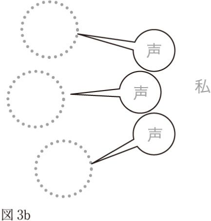
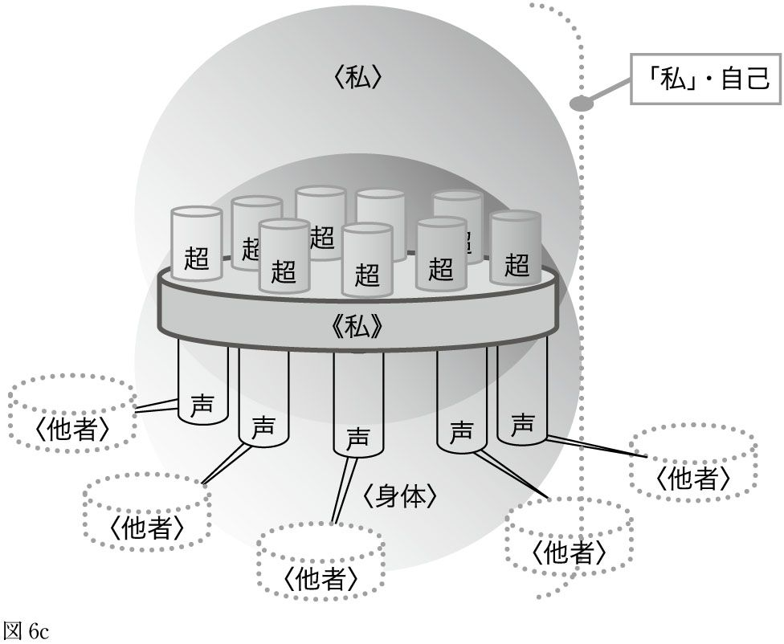
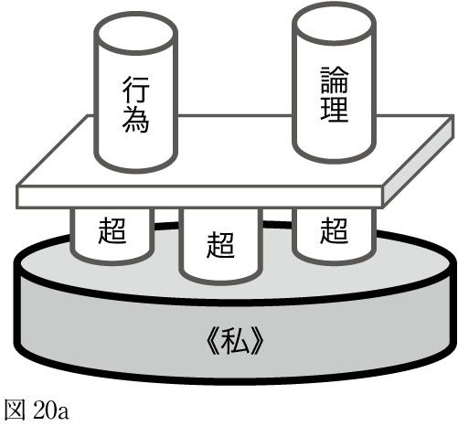

| 「私」のための現代思想 | |
| 高田 明典 | |
| (2006) | |
ことによるとこの本は、「あなた自身」が買ったものではないかもしれません。タイトルこそ〝「私」のための〟とありますが、あなたのことを心配した誰かが、そっとあなたのもとへ置いておいたものであるかもしれません。
もしくは、あなた自身が書店で本のオビのコピー「自殺には、『正しい自殺』と『正しくない自殺』がある」を見て衝動買いし、今、ヤケバチな気持ちで手にしているだけかもしれません。
しかし、「本との出会い」とはそういうものです。私たちは、その内容を十分に知った上で本を買うわけではありません（もしも内容を十分に知っているなら、わざわざ買うことはないでしょう）。とりあえず「この冒頭部分を目にしている」ということは、「出会い」の最初の段階に到達しているのだと考えてください。これもきっと何かの「縁」です。で、もう少し読んでみましょうよ。
何らかの原因によって、あなたはこの本のこの部分を「読んで」います。それはすでに疑うことのできない事実です。これを「出会い」と呼び、また現代思想では「共在 」と呼びます。もしもあなたが何らかの理由ですでに「死」を決めているのであれば、ちょっとだけその時期を延期して、先へと読み進んでみてください。この本には、きっと、あなたを不愉快にさせることとか、あなたを混乱させることとか、あなたを後押しすることが書かれています。あなたはもう説得などされません。私はそれをよく知っています。
しかし、どうせ説得などされないのですから、最後の娯楽としてこの本を読むということは、かなりカッコいいことだと思います。この本は、あなたが「最後に読む本」として、とてもふさわしいものだと思うのですが、どうでしょう？
本書では自殺を否定することはしません。「自殺という行為は、すべて悪」という考え方は、きわめて非論理的です。
私は、自殺には「よい」自殺 と「悪い」自殺 、もしくは「正しい」自殺 と「正しくない」自殺 があると考えます。「よい」「悪い」や「正しい」「正しくない」というのは、ここでは「社会の側の価値判断」を意味するものではありません。
さらに、その「よい」「悪い」、「正しい」「正しくない」を判断する主体が誰なのかという問題もあります。もちろん、「よい」か「悪い」かを判断するのは、本来的に個人でしかありません。社会の「よい」「悪い」と、個人の「よい」「悪い」は往々にして矛盾しますが、本書では基本的に「個人（個体）における、よい・悪い」を考えます。
一般的な考え方として、自分の存在をなくしてしまう行為に関して、「よい・悪い」を考えるのは意味がない、というものがあります。しかし、それは間違っています。「よい・悪い」という概念を考えるならば、それは「その向こう側に何らかの帰結を期待せず、純粋にその行為自体がよいか悪いかを判断すること」を意味しているからです。行為の「よい・悪い」は、その行為の結果によって判断されるものではありません。どのような結果をもたらそうとも「よい」ものはありますし、また逆に「悪い」ものはあります。結果によってのみ判断されるのであれば、そこには「主体的な意思決定」は存在しえません。
換言するならば、「よい結果を生む行為がよい行為である」という考え方 は、間違っています。その考え方では、私たちは「よい行為」をすることはできません。「よい」は、結果がどのようなものであれ、「よい」ものでなくてはなりません。そうであって初めて、私たちは「よい」行為を遂行することができます。なぜなら、何らかの行為を始めるときには、その結果がどのようになるかはわからないからです。
「生死」は、哲学の根本的な問題です。 すべての哲学は「いかに生きるか」、もしくは「いかに死ぬか」ということをその基本的な問題として扱ってきました。そして「自殺」は、今「死のうとしている人」だけの問題ではありません。いわゆる「自殺」という形ではなくても、人は「小さな自殺」を繰り返していたりする場合があります。それを本書では「消極的な自殺 」と呼びます。積極的に死を選ぶのではなく、「もう死んでもいいや」とか「もう、どうなってもいいや」などと考えるのがそれです。「このまま死んでしまっても、しょうがないかもな」という諦 めも、広い意味では消極的自殺です。人は、消極的な自殺を何度も繰り返すうちに、「絶望」と呼ばれる状態に陥ったりします。
人を苦しめている原因は直接的には抑圧ですが、その解決策は、大きく分けて二つしかありません。ひとつは「抑圧をなくすこと・自由を回復すること」であり、もうひとつは「魂をなくすこと」です。魂をなくすことは困難なので、多くの人は魂を小さくして、無意識の中に沈みこんで、その日その日を生きています。そして、「無意識の中に沈みこんでいる」「鈍 磨 した感覚の中で生きている」人たちが、こう言うのです。「生きていればきっといいことがあるよ」「生きることには意味があるよ」「生きているだけで幸せだ」などなど......。
私たちがそのような言葉に何も感じないのは当然です。それは、魂を小さくしてしまった人たちの言い訳にしか聞こえないからです。
そして、そのような解決を否定することの向こう側に「自殺」があります。魂をなくすことなどできないため、「魂が宿っている、この身体をなくす」ことによって、魂を消滅させるというトリック的な行為です。それは、「魂を小さくできない」人たちの究極的な解決方法なのです。
しかしそれは、結局のところ、魂を小さくしたり、魂をなくしたりしている人たちと同じ方向性をもった解決策でしかありません。
本当に解決策は二つしかないのでしょうか。抑圧をなくすことが不可能であるとしたら、私たちは屈服して生きていくほかはないのでしょうか。
私たちにはまだ闘う方法が残されているはずです。もちろんその闘いとして、抑圧をなくすということを想定するのは可能ですが、第三の方法としての闘いの可能性も存在しています。
そしてこの本は、そのための方法を模索する「旅」です。
もしもあなたが今「死」を考えているのであれば、この旅に、少しの間だけつきあってみてはどうでしょう。「死」を決意しているとすれば、時間は無限に残されているはずですから、多少無駄なことに時間を費やしてしまったとしても、それほどの問題はないでしょう。
繰り返しますが、本書は、死を決意した人に翻 意 を促すようなものではありません。「死を決意した瞬間」から「実際に死ぬまで」の間の「生」をできるだけ輝かせることを目的としています。「死」に際して「生」は輝きますが、その逆に「生」によって「死」が輝くということもあります。「輝かしい生 」と「輝かしい死 」は同義語です。
そして私たちは、死を決意しているか否かによらず、実際に死ぬまでの間の「生」を生きる存在です。「死を決意すること」と「人は誰もが死ぬということを知る」ということは、とても近い意味をもっています。「死」は、決意などしなくても、万人に訪れることが確実な現象なのです。
この本の見取り図
ここでは「筋道の概略」を説明します。本書では、以下の四つの順で説明や検討をしています。
① 「問題」の外形をつかみ、おおまかな「解決方法」の道を想定する
② その問題を発生させている「原因や理由」を考える
③ 私たちに与えられている「方法・武器」について考える
④ その「方法・武器」の使い方について考える
まず序章で「問題」について考えます。それは、私たちが「苦しんでいること」の原因や理由の概略を明らかにしておこうと考えてのものです。そこでの検討は大枠のものですが、「どの方向に向かって思考を展開していくのか」を考えるという意味をもっています。序章は、前記の① にあたります。
第１章では、私たちを束縛しているもの について検討を加えます。本書ではそれらを、おおまかに〈言葉 〉と〈価値 〉と〈社会 〉という概念をもとに考えていきます。
続いて第２章では、「生きていくこと」「死」に関連して、私たちが存在している「世界」がどのようなものであるか ということや、その「世界」の中で、どのように生きているのか ということについて考えます。本書ではそれを〈世界 〉と〈物語 〉という概念を使って考えていきます。それらの中には、私たちを「束縛」するものもありますし、私たちに「自由」を与えてくれるものもあります。言い換えるならば、それは「私」と「私の外の世界」との関係について考えるということです。第１章と第２章が前記の② に該当します。
第３章では、「私 」と「私の内部の世界 」の関係について考えます。それを本書では〈私 〉と〈身体 〉という概念をもとに考えていきます。
そして第４章では、〈他者 〉について考えます。この世界に存在しているのは、〈私〉だけではありません。この世界は、〈私〉と〈他者〉によって構成されているように見える「何らかのもの」です。第３章と第４章が、前記の③ に該当します。
本書は、前記のように〈言葉〉〈価値〉〈社会〉〈世界〉〈物語〉〈私〉〈身体〉〈他者〉という現代思想の主要概念について説明し、検討していくという構成をとっています。
そして最後に第５章で、それらの主要な概念を用いて、「生きていく」ということはどういうことなのか 、もしくは「死ぬ」とはどういうことなのか について考えます。この第５章が④ に該当します。
つまり、問題を明らかにし、その原因を検討し、それを解決する方法を考え、その使い方を吟味する、ということです。
目次
私たちが今直面している「問題」は何でしょうか。もちろん、私とあなたの「問題」は異なっているはずです。この本は、それぞれの「私」が直面している問題を、自分で解きほぐす手助けとなることを目指しています。それらの問題の種類によっては、極端なことを言えば、「死」によってしか解決されないこともあるでしょうし、そうではないものもあるでしょうが、それを見極める必要があります。
直面している問題を解きほぐして解決するためには、道具が必要です。そのような道具には、いろいろなものがあります。宗教的な信仰心によって解決される場合もあるでしょうし、友人どうしの心の触れ合いによって解決される場合もあるでしょう。
本書では、その道具として「思考 」を用います。これにはいろいろなものがありますが、本書はその中から特に「現代思想 」に分類される考え方や思考の枠組みを使うことにします。
問題を考えるときに必要となるのは論理 です。それは現代思想においても同じです。人は「正しくあろう」とする存在です。「自分の考え方が、少なくとも自分にとっては正しいものである」から、人はその考えを行動に移すことができます。正しくあろうとすることは、人間の特質であるとさえ言えます。ただしこの「正しさ」は、決して道徳的な意味でも、倫理的な意味でもありません。そのような「社会が推奨する正しさ」ということではなく、「自分の内部での正しさ 」ということです。
この「世界」は錯乱しています。そして、正気よりもむしろ狂気に支配されています。腐臭を放つ汚物の池に首までどっぷりと浸かった状態で、「正気」を保ちつづけることは容易ではありません。そのような世界に生きつつ、かつ正しくあろうとすることは、近年ますます難しくなっています。多くの「この腐った社会に適応済みの人たち」は、狂気と錯乱を受け入れることを私たちに薦 めます。「そうすれば楽になれるよ」と彼らは言います。つまり、狂気と錯乱の世界に適応して生きるということは、自らが錯乱するしかないということなのでしょう。
そのように生きている人間を、私はたくさん知っていますし、それが悪いとも思いません。しかし私たちにとって、それはできない相談です。もしもそれが可能ならば、私たちは「死」を考えたりはしません。この世界で、いかにして「正しさ」を求めていくことが可能なのか ということが、本書で考える「大きな問題」です。
私たちを苦しめているのは何でしょうか。それを考えることはそれほど簡単ではありません。一つひとつ問題を解きほぐしていく必要があります。
この作業に入っていく前に、基本的なことについて考えておく必要があります。それは「この世界は正しいのか 」ということです。もし「正しい」のであれば、間違っているのはその世界の中で苦しんでいる「私たち」ということになります。おそらく私たちの多くも、そう感じています。自分が生きている「社会」のほうが正しくて、それにうまく適応できず苦しんでいるのは、「そう感じる自分のほうが間違っているからなのだ」と。
しかし、そうでないことは明らかです。事実、この世界は決して健康体でも理想郷でもありません。そんなことは、新聞にざっと目を通すだけで、誰にでもわかることでしょう。そこには、先進国であればどうということはない病気で死んでいく多くの人々や、明日の食事を心配しながら、暗く寒い夜を過ごしている多くの人々の記事が載っています。それを読んでいる私はというと、エアコンの効いた部屋でテレビを見ながら、ダイエットと称して食事を残したりしています。そして、悲惨な状況については見ないふりをし、極力考えないようにして、何もしないまま日々を過ごしています。そして、そんな自分を無力だと考え、どうしようもないと諦め、暖かいベッドの中で眠りにつきながら、ほんの数秒だけ反省するのです（でも、何をどう反省すればいいのでしょう）。
腐っているのは、そのような「おおごと」だけではありません。日々の仕事や会議、会話の中で私たちが遭 遇 する現実の多くは、腐敗した社会の様相を示しています。私自身は「論理の府」であるはずの大学に勤務する人間ですが、そこであっても事情はあまり変わりません（というより、その状況は一般の社会よりもさらにひどいかもしれません）。
そしてそれらについても、私は「しかたない」と考え、目をつぶり、考えないようにしています。それが偽らざる私の姿です。私は「魂を小さく」して、やっと生き延びています。こうして私はさらに腐敗していきます。そして「腐敗しきる」ことさえできずに、「腐敗に抗 う」と勝手に称して、その実、怠 惰 なだけの日々を不 承 不 承 に送っています。
その一方で、この世界の一部には、美しい部分も、美しい行為も、美しい精神も、多く存在しています。美しいところだけを、よい面だけを見て生きていくことを薦める人もたくさんいます。
しかし、「腐った部分」を知ってしまっている以上、もうそんなふりはできません。「美しい部分だけを見るようにする」、もしくは「自分も腐敗する」という方法によって、この状況を解決できるという場合もあるでしょうが、それを〝離 れ業 〟だと感じているのが私たちです。そこで本書では、そのような解決策のすべてを否定します。私たちは、「正しくある」ことを捨てて生きていくことはできません。
ここで言えるのは、少なくとも現在、この世界のある部分は「正しくない」ということです。そして、「正しい」部分と「正しくない」部分とを分けることが可能であるとすれば、おそらく「正しい」部分は、ごくわずかなのではないかとさえ感じています。そしてより正しい考え方としては、〝「世界」と「私」は、ともに腐っていく〟 ということであるようにも思われます。
「間違っているのは、そこで苦しんでいる私たちのほうだ」という考え方は、常に成立するものではなく、むしろ「私たちは、私たちの正しさを原因として苦しんでいる」という可能性のほうが高いといえるでしょう。もちろん、そのような考え方自体を検討していくのが本書ですが、事実をしっかりとおさえておくことも必要です。大事なことなので、繰り返しておきます。「この世界は決して正しくはないし、そこで苦しんでいる私たちは間違っているわけではない 」。自分が腐っていくのを実感することは、さらに腐敗にまみれないようにするためには、とても重要です。
シモーヌ・ ヴェイユ（Simone Weil 〈1909～1943〉）は、フランスの哲学者です。リセ（高校）の哲学教師でありながら、一介の労働者として工場に入り込み、そこでの辛い体験を通して、自らの思想を研ぎ澄ましていったことで知られています。ヴェイユは、当時の工場労働における辛さの原因を、「意志を発揮する機会の欠如」であると捉えました。
いついかなる瞬間でも命令を受ける準備ができていなければならない。全く他人の意志のままになるもの だ。人間がもの になることは自然ではないのだから、それに鞭とか鎖とか明白な束縛があるわけではないのだから、みずから身を屈してこうした受動性に服従しなければならない。タイム・カードを入れる箱に自分の魂を一時あずけて、終業退出のとき取りもどすことができたらどんなにいいだろう！ だが、そんなことはできない。魂は作業場にもち込まれる。その魂をいつも黙らせておかねばならない。
（根本長兵衛訳「女子製練工の生活とストライキ（職場占拠）」〈橋本一明・渡辺一民編訳〉『シモーヌ・ヴェーユ著作集１ 初期評論集「戦争と革命への省察」』春秋社 一九六八 二八二頁）
ヴェイユは同書で、たとえ肉体的に辛い労働であっても、精神的な辛さはそれほどでもない場合があるのだと指摘します。たとえば農作業などにおいては、「瞬間瞬間の判断が必要とされ、働く者の『意志』が発揮される機会が残されて」います。
しかしヴェイユが体験した工場労働においては、このような意志が発揮される機会はことごとく失われていました。そこには単なる服従しかなく、自分の思考や意志によって行われることはほとんど存在しませんでした。意志が服従を強制されるということは、屈服を意味しています。魂にとって、それは耐えられないほどの苦痛となります。そのため工場では、「いかに自分の魂を小さくしておくか」ということが重要となるわけです。
ヴェイユは、「肉体は現在の瞬間に生き、一方精神は時間を支配し自由に遍歴して時間に方向づけを行う」ものだと考えました。そして、工場では「時間が秒単位で支配」され、そこには精神が発露する余地が残されていないと指摘します。
私たちは「時間の流れ」に抗うことはできません。しかし時間の流れの中で、次に到来する時点において何をしているかを思い描き、そのとおりに行動することはできます。それを人は「意志 」と呼び、また「精神 」や「魂 」と呼びます。すなわち「魂」とは、人が「時間を支配すること」です。もしも「次の瞬間」、もしくは「次の時間単位」に発生することが、自分の意志とはまったく関係なく起こるものであれば、人は「瞬間に生きる」ほかはなくなります。そのとき自由は失われます。
しかしヴェイユは、そのことだけが問題であると考えたわけではありません。ヴェイユは「抑圧されること」「服従を強 いられること」によって、人の魂が「もはや機能しなくなるほどにまで」小さくなっていくということを、身をもって体験しました。
そして、それは当時の工場にだけあてはまるものではありません。生産を重視し、「社会的に何らかの役割を果たすこと」が重要とされる現代の社会は、その全体が「工場」と化していると言えるでしょう。その中で人々は、社会の片隅でちっぽけな役割を与えられつつ、それにすがって生きています。そのとき私たちの魂は、屈服しつつ、自分でも気づかないうちに小さくなっていきます。
ときおり私は考えたものです―自分がもっている最良のものを自分の手で圧し殺しながらみずから屈従に努めなければならないくらいなら、外からの強制により、たとえば鞭で打たれながら、屈従させられる方がましだ、と。（山本顕一訳「オーギュスト・ドゥトゥーフへの手紙（１）」同前 二七一頁）
苦しまないための唯一の方策は、無意識の中に沈みこむことです。この誘惑には多くの人々が何らかの形で屈して行きます。私もしばしばそれに負けました。人間存在にふさわしい明晰さや意識や自尊心を保ちつづけることは、不可能とは申しませんが、くる日もくる日も絶望に打ち克って行かねばならぬという刑罰にも等しい労苦をみずからに課することにほかなりません。（同前 二七二頁）
おそらくこのヴェイユの指摘の重要さは、現代においてむしろ増しています。私たちは、この「腐敗した世界」「到底正しいとは感じられない世界」で、その束縛から逃れ、自由になろうとしています。そして「自由になろうとしてもがくことそのもの」、もしくは「自由を得られないということそのもの」が、私たちに「辛さ」として重くのしかかっていると考えることができます。
私たち人間は「自由であること」を求める存在 です。それゆえに、自由が損なわれているとき、もしくは束縛や抑圧を感じているとき、生きることを辛いと感じるようになります。このとき抑圧とは、決して「社会的な抑圧」のみを指しているわけではありません。「自分の身体」による抑圧や、「自分の思考」による抑圧、「言語制度」による抑圧なども含んだ概念をあらわしています。
「教養」は、英語で" Liberal Arts " と言います。これは「自由市民の知識や技術」という意味で用いられてきたものですが、この含意は「自由になるための技術」であると考えることができます。教養主義の文脈において、教養を身につけるということは、たとえば「上流階級出身者として恥ずかしくない知識や技術を身につけておく」という意味で用いられてきましたが、そのような方向性のもとに身につけられた知識や技術は「こけおどし」的なものであり、実際には何の役にも立たない場合のほうが多いでしょう。
しかし本来、教養とは「自由になるための技術」 です。そして哲学や現代思想は、その柱の一つです。「人が自由になる」ということを、最も詳細に吟味、検討してきた分野は、間違いなく哲学です。したがって哲学を放棄することは、思考を放棄することと同義です。そしてそれは、自由になることを放棄するに等しい愚かな行為であると言えます。私たちに与えられた武器は、思考 であり言語 であり論理 です。それ以外の武器を、私たちはもっていません。この貧弱な武器で、何とか闘っていくほかはない存在です。
では、「束縛からいかに逃れるか」ということについて、これらの武器を使って考えてみることにします。
私たちが「Ａという事物や制度の束縛」から逃れる方法は一つしかありません。それは「Ａの所有者となる」ことです。たとえば、「金銭の束縛から逃れる」唯一の方法は、「金銭を所有する」ことです。完全に自給自足した生活を送る集団とか、一般社会とは隔絶した団体などというような金銭の存在しない共同体に生きるという方法もありますが、それは現実的な解決策ではありません。狭い社会の中に引きこもることによって、金銭の存在に擬似的に目をつぶるということでしかないからです。もちろん、「金銭に束縛されていない」と感じている場合には、束縛から逃れるのを考えること自体無意味です。
同様に、「技術の束縛から逃れる」ためには「技術を所有する」ことが、「学歴の束縛から逃れる」ためには「学歴を所有する」ことが、「身体の束縛から逃れる」ためには「身体を所有する」ことが必要とされます。
ここまで「所有」という言葉を使ってきましたが、この場合の「所有」とは、権限をもつことと同義 です。つまり、「金銭を所有する」こととは「金銭を消費する権限をもつ」ことであり、「技術を所有する」こととは「技術を使用する権限をもつ」ことであり、「身体を所有する」こととは「身体を使用する権限をもつ」ことです。たとえば、ある人が自由に一千万円使用できる権限をもっている場合、その人は「一千万円までの金銭」には束縛されないということになります。つまり、そこに「自由」が発生するわけです。
何を束縛と感じているかは人それぞれですから、それらのものを所有していないからといって不自由であるということにはなりません。金銭をまったく所有せずに「金銭的に自由」な人も存在しますし、技術をまったく所有せずに「技術から自由」である人も存在します。
その違いは、それぞれの個人の「物語」の違いによります（「物語」については、後でくわしく考えていきますが、ここでは「人が生きていく上での行動の道筋」とだけ言っておきます）。束縛とは、外部に存在して人の行動を制限するものではありません。その人の採用する「物語」が遂行していく途上に存在する「壁」のことです。その壁が存在することによって「前に進めない」状態を、「束縛」と呼称しているだけです。たとえば、「金銭という束縛」を感じているとすれば、それは「金銭が壁となって邪魔をする」という「物語」が遂行中であることを意味しています。逆に「金銭が壁として存在しない物語」が遂行中であれば、「金銭」はまったく束縛の要素とはなりえません。
ところで哲学は、「思考の方法 」や「枠組み 」を提供してくれます。それを放棄することは、思考を放棄することに等しいと言えます。
そして、もしも人を束縛しているのが「思考」であるとするならば、人は「思考を所有すること」によってしか、それを解決できません。もちろん考えるのは面倒ですし、頭が痛くなったりもします。このように「考えること自体がいやだ」という場合、その人を苦しめているのは「思考」である可能性が存在します。そしてもしそうであれば、「より考える」（＝思考を所有する）こと以外には、その束縛から逃れる方法はありません。
ふたたび「金銭による束縛」を例に考えましょう。ある人がそのことを苦痛に感じているとします。多くの場合その人は、「金を稼ぐことなんかいやだ」「金のことを考えること自体がいやだ」などと考えるでしょう。苦痛の源を遠ざけようとするのは自然な反応です。
しかしながら、それでは問題の解決になりません。「金銭による束縛」から自由になるためには、「金銭を得る」ことが最も効率的な近道であり、また、その方法以外には解決策が見当たらないからです。
しかしその一方で、「その物語を捨てる」という方法もあります。「金銭による束縛」の場合には、「金銭を得る」という物語の放棄によって、束縛を無意味化することが可能です。言い換えれば、それは、「金銭を得なければ到達できないゴール」を諦めるということです。
では、「思考による束縛」の場合はどうでしょうか。「思考を捨てる」ということは、すなわち「何も考えない」ということなので、その実現はかなり難しいと思われます。前述のように、「思考という束縛」から逃れるためには、「思考を所有する」ほかはないようです。
そして私たちには、幸福なことに「思考する能力」が与えられています。それは、ここまで読み進んできたあなたには、十全に与えられている力であるはずです。私は、この本を手にしても、ここまで読み進むことのできない人が多数存在していることを知っています。私の言葉は、その人たちには届きません。この本に書いてあることを「知る」「理解する」（否定するにせよ、肯定するにせよ）ことができる人間は、実は限られています。そしてせっかくここまで来たのですから、次の章に進んでみませんか？
この章のはじめに
前章で「束縛から逃れる」ということの意味を考えてきましたが、この章では、私たちを束縛している要素 として、〈言葉 〉〈価値 〉〈社会 〉という三つを考えていきます。
私たちは〈言葉〉を使ってこの世界を認識し、他者に何かを伝達します。〈言葉〉は私たちにとって「思考の枠組み」であり、便利な道具ではあるものの、逆にその「枠」の外には出られないという意味で、束縛となる場合があります。
また私たちは何らかの〈価値〉を求め、それに照らし合わせて自分の行動を決定したり選択したりします。どのようなものに〈価値〉を置くかは人それぞれですが、自分が重要だと考えている〈価値〉自体が、私たちを束縛している場合があります。
さらに〈社会〉という枠組みは、私たちがよりよく生きるために構築されてきたものですが、そこに窮屈さや閉 塞 感 を感じたりすることがあります。
もちろんそれらは、あるときには束縛状態を形成しますが、それがすべてではなく、私たちがよりよく生きるために役に立つ場合も多々あるということに注意が必要です。ここでの問題は、それらがどのようなときに「束縛」となり、どのようなときに「自由になるための武器」となるかを考えるということです。
先にも述べましたが、私たちは〈言葉〉を用いて認識・思考し、自分の意思を伝達します。私たちは〈言葉〉以外のものを用いてそれらを行うことができません。一般に、身振りや態度などの「非言語的コミュニケーション」も「言語的記号」（つまり〈言葉〉）として扱われます。このように、私たちの認識や思考が、〈言葉〉の枠内のみで行われることを、「言語の専制」と呼ぶ場合もあります。つまり、私たちは自由に認識し思考しているつもりですが、実は〈言葉〉という制度 に囚われているというわけです。「専制」という言葉には、そんなニュアンスがこめられています。
言葉の機能の中心に「分類 」があります。これは、言葉は「私たちが知覚したものを分類する」ために用いられるという意味です。しかしこの分類が、自由に行われることはありません。なぜなら、それは「あらかじめ存在する何らかの概念の中に当てはめていく」という方向で行われるのが普通だからです。
その一方で、私たちは新しい概念に対応する新しい表現をつくり出すことも許容されています。たとえば、「とても信じられない」という概念をさらに強調したものとして「ありえない」などという表現や、「面倒くさくて、いらいらする」という概念として「うざい」という表現を作り出したりしています（もちろんこれらの表現は、比較的新しいものであるために、その「概念の内容」は固まっておらず、人によって使われ方がさまざまであるという特徴も持っています）。
しかし、そのようなことは、あまり頻繁に行われるものではありません。私たちは似たような知覚を得た場合に、それに同じ概念を当てはめて理解するのが普通です。
このことをもう少し説明してみますが、その前に、まず以下の質問を考えてみてください。
次の中で仲間はずれのものを一つだけ探し出しなさい。
① アリ ② クモ ③ チョウ ④ トンボ
もちろん答えは「クモ」です。クモは足が八本ある節足動物で「クモ類」に属しますが、他の三つは同じ節足動物でも、足が六本ある「昆虫類」に属します。これは小学校の入学試験などでは常識の類 の問題のようです。
個人的な話で恐縮ですが、私の娘が幼稚園に通っていたころ、この問題に以下のように答えました。
「答えはアリ。その理由は、アリは私に踏まれるけれども、ほかの三つは私には踏まれないから」
残念ながら、この答えでは正解にはなりません。「踏まれるか踏まれないか」というのは、事実に基づくものであって、その判断基準が間違っているわけではないのですが、きわめて主観的な判断であるため正解とはなりません。
これらの四つの生物を分類する方法自体は無限に存在します。たとえば「飛ぶか飛ばないか」「複眼か単眼か」「三つの文字で構成されているか否か」などです。しかし、それらの分類基準は、設問にある「一つだけ」という条件を満たしていないため不正解です。
しかし、「一つだけ」ということなら、たとえば「幼虫のころに水生である」というのは、実は「トンボ」のみに該当するものであり、その意味では「トンボ」を正解とすることもできます。また、アリのみが「群居性」であるということから、「アリ」を選ぶことも可能です。
何かを分類するための基準は、実は無限に存在します。しかし私たちは、それらのうちから恣 意 的（勝手）に、ある種の「基準」のみを選び出し、それによって「分類」を行います。そして、「正解とされる分類」というのは、それが「社会において一般的に用いられる基準である」、もしくは「社会において重要度が高いとされている基準である」ということによって裏打ちされているだけです。つまり、私たちが何かを学ぶ ということは、社会において重要とされている分類基準を自分のものとする ということを意味しています。
そしてこのとき私たちは、少しだけ「自分を殺す」ことになります。それが「大人になる」ということであり、「社会化する」ということです。
しかしこのとき忘れてはならないのは、「どのような分類基準であれ、本来は等しい価値しかもっていないはずだ」ということです。それらの重要度に差をつけるのは、社会の要請によるものであって、「本来的な正しさ」はそこには存在しません。
たとえば前述の例で言うと、私の娘にとって重要なのは、「自分が踏めるか踏めないか」ということでした。そして（蛇足ながら）それらの生物にとってさえ、「自分の足が何本であるか」ということよりも、「自分が子供に踏まれる存在であるか否か」のほうがはるかに重要だろうと思われます。
ここからわかるのは、「本来的に正しい分類」などというものは想定できないということです。分類は、常に「何らかの価値基準」（＝重要度）のもとに行われるものであり、前記の例で言えば、「そう答えると、小学校入試で点数をとれるから」ということでしかありません。私たちは「目的を離れた正しさ」を得ることができない存在です。その意味で「正しさ」とは、常に「何らかの目的のもとでの正しさ」でしかありません。
フランスの法制史家・精神分析家のピエール・ ルジャンドル（Pierre Legendre 〈1930～〉）は、「牛をつなぐには角をもってするが、人をつなぐにはことばをもってする」という法哲学者アントワーヌ・ロワゼルの言葉を引きつつ、「言葉を使う動物」である人について考えています（森元庸介訳『西洋が西洋について見ないでいること』以文社 二〇〇四 七二ページ）。
人は、言語を用いて世界を認識します。そして、その認識とそこから導き出される論理によって、自分にとって好ましい結果を求めて行動します。しかし、その際の論理はきわめて不完全なものでしかなく、また言語による認識も決して完全なものではありません。このように限られた機能の中で、人は最善を求めて行動します。ルジャンドルは以下のように言います。
換言すれば、自己と世界に対する関係は言葉のスクリーンを経由するということです。人間のアイデンティティには複数の水準がありますがわたしがいわんとしているのは、自己への同一化（それが主観的なアイデンティティ形成です）と、世界の同定および世界への同一化ということです、そのすべてにとって前提となるのが言葉のスクリーンなのです。（同前 八二ページ）
そしてまた、言語は、「分割」という機能と、「紐 帯 」（結びつけるひも）としての機能を持っていると言います。
紐帯という概念には二重の含意があります。まずそれは、分離された要素のあいだの関係という観念のことを考えさせます。つまり言語による分割というものを考えなければならない。そしてまた、紐帯という以上は、拘束のことをいっているのでもあって、つまりは規範的なもの、制定されたものが問題となっているわけです。
こうして、「話す動物とは何か」という問いに対して、はっきりした答えが描きだされてきます。つまり、「言語によって分割された動物」であるけれども、同時にまた「制定された動物」でもある、ということです。（同前 七七～七八ページ）
ここで、言語の「制度的な側面」について考えておく必要があります。私たちは言葉という道具を用いて、世界を「切り取って」認識します。また、私たちが認識するのは世界だけではなく、自分自身さえ言葉によって認識します。それが「アイデンティティ＝自己同一性」であり、「私は何であり、何でないか」を決定することです。そして、そのとき私たちが使用する言葉という道具は、ある文化において形成されてきたものです。言葉のもつそのような側面を、ルジャンドルは「 ドグマ性 」という概念を用いて検討していきます。
ここで「ドグマ」とは、「教条」などと訳される概念であり、私たちが無根拠かつ強固に信じている「認識の枠組み」のことを指します。たとえば「教条主義」という語が、その内容を吟味検討せず、ただ単に「お題目」としてその字づらの表現にのみ従うという意味で使われることをあわせて考えると、「ドグマ＝教条」の意味が理解できるかと思われます。ルジャンドルは、以下のように言います。
ドグマ的な次元、それはフィクションによって支えられた明証性の次元、ひとがそれを真実と認めるにあたって、いかなる証拠をも必要としないほど強力な明証性の次元です。（同前 一一二ページ）
〈鏡〉を見ると、ひとは自分の姿を認めるし、夢を見ると、それは自分が見ている夢なのだと思う。そういう明証性があります。それと同じように、今日でも生き延びている大いなる儀礼的な伝統のレヴェルでいえば、おのおのの主体は、自分が人間のイメージ、自己のイメージを、いかなる〈テキスト〉、いかなる〈鏡〉のうちに見出しているか、ということを知っています。（同前 同ページ）
私たちは、そのように「文化」の中で培われてきた制度的な「認識の枠組み」によって自己さえも認識します。ここで注意しなければならないのは、それは決して否定されるべきことがらではないということです。ルジャンドルが指摘するのは、この「ドグマ性」を認識し、そこで何をなしうるのかを考える必要があるということです。言葉による認識は、「ドクマ的」な次元で行われるものですが、それは同時に「紐帯」を形成するものです。しかしこの社会は、「ドグマ性」を否定的な要素とし、捨て去ろうとしてきたこともあります。もちろん「ドグマ性」において、その制度的な側面が強調されることにより、往々にして「全体主義的な思想」と結びついてきたということには十分に注意を払う必要があります。しかし、その反動としての個人主義が拡大することに関しても同様に十分に注意する必要があるということに対して、ルジャンドルは警鐘を鳴らしています。
現在、個人主義というイデオロギーは、大規模に拡大したナルシシズムとして機能しています。映画作家ヴィム・ヴェンダースの表現を借りるなら、個人は「ミニ国家」となっている〔『ベルリン 天使の歌』〕。つまり、自分ひとりですべてであるような存在、〈鏡〉の論理から解放された神のような存在となっているのです。
そこから帰結するのは、主体と社会の大規模な崩壊という現象です。人間のドグマ的な次元という主題は、そうした現象について熟考するようにわれわれを誘っているのです。（同前 一四五ページ）
「〈鏡〉の論理」とは、私たちが「自己を認識する」ときに、〈鏡〉に映る自己像の把握を通してそれを行うということを意味しています。もちろんその認識のときに私たちが使用するのは言葉です。そこにおいては、私たちは「ドグマ」から（純粋な意味で）自由になることはできません。私たちがその「ドグマ」から自由になるためには、言葉のもつドグマ性を認識し、それを所有することを目指すほかはないということです。
私たちは、社会の側に存在する分類基準を無視するわけにはいきません。人間は群居性の動物であり、共同体をつくって生活する生き物です。社会の側の分類基準を自分のものとするというのは、そのような社会に生きていく上で、とても重要なことです。なぜなら、そうすることによって、私たちは会話することができますし、意思を疎通させることがより簡単になるからです。
しかし、「他の人たちが考えるように考える」ということは、とても重要なことである反面、「他の人たちが考えるようにしか考えられない」という状況を発生させてしまいます。そのとき人は「言葉による束縛」、もしくは「言語の専制」を実感します。
そうならないためにも、社会の側の分類基準は便宜的なものでしかないということを、しっかりと把握しておく必要があります。〈言葉〉とは、私たちが「ともに生きていく」ための基本的な仕組みであると考えることが重要です。
そして私たちは、できるだけ自分を殺さずに、社会の側の分類基準とうまくやっていかなくてはなりません。そのとき重要なのは、「言葉の世界の主人は自分である 」という意識をもちつづけることです。すなわち言葉は、私たちを束縛するために存在しているものではありません。言葉は認識の道具であり、意思伝達の道具であり、思考の道具です。
言語が「伝達」の手段であるとき、私たちは社会の側の分類基準に従わなくてはなりません。しかし言語が「認識や思考」の手段であるとき、私たちはそれに必ずしも従う必要はありません。自由に認識し、自由に思考してよいはずです。
すでに述べたように、問題は、認識と思考のための道具である言語を、伝達のための道具として使ってしまっているところにあるわけですから、その二つの用途を明確に区別することができれば、その束縛から逃れることが可能になると考えられます。しかし、実のところそれは、それほど容易なことではありません。
ここで、私たちの思考や認識は、単に「思考し、認識すること自体」を目的として行われるのではなく、〈価値〉という基盤の上に存在する営みだということに注意が必要です。また私たちは、言葉を使って何らかの〈価値〉を実現しようとしています。したがって、以下の項目では、〈価値〉について考えていくことにします。
〈価値〉とは、たとえば私たちが「何をよいことだと考え、何を悪いことだと考えるか」というときの判断の基準となるものです。もちろん、「美しい・美しくない」「すばらしい・すばらしくない」という場合でも、同様に〈価値〉がその判断の基礎となります。
そして、「よい・悪い」という価値判断を行うとき、その基準となる価値観や規範のことを「道徳 」と呼びます。ここでは、道徳が形成される仕組みについて考えていきますが、それは道徳として語られている〈価値〉が、私たちを束縛している場合があるからです。
道徳とは、本来的に私たちの心の中にセットされている「感じ方」や「考え方」ではありません。私たちが、その生きている社会から学ぶものです。多くの場合、道徳は「規範の内在化」という過程を経由して、私たちの心の中に形成されます。
道徳とは、私たちが所属している社会において長い間守られてきた規範やルールですから、もちろんそれが重要であることは間違いありません。しかし社会は変化し、それに伴って規範やルールも変化します。過去において不道徳とされていたことが、現在では公然と行われているという例を挙げるのは比較的簡単です。自殺でさえ、日本の武士階級においては、不道徳どころか美徳であると考えられていた時代がありました。
自殺が不道徳であるというのは、キリスト教的な価値観に基づくとされることが多いようですが、実は、キリスト教においては長い間、自殺は禁止されていませんでした。イギリスの作家・詩人の アルヴァレズ（Alfred Alvarez 〈1929～〉）は以下のように言います。
罪としての自殺という概念は、キリスト教の教理の上で、かなり遅れてあらわれ、しかもそれは一種の対症療法だったといっていい。六世紀になってはじめて教会はこれを禁制とし、しかも聖書のただ一つの典拠は、「なんじ殺すなかれ」というモーセの十戒の第六戒であった。司教たちはアウグスティヌスの説くところにしたがって、自殺を徹底的に批判しはじめた。しかしルソーがいったように、アウグスティヌスは聖書ではなく、プラトンの『パイドン』によって論証したのだ。初期のキリスト教徒のあいだでいちじるしく蔓延していた自殺礼賛の風潮によって、アウグスティヌスの主張はいよいよはげしくなった。
（アルヴァレズ著、早乙女忠訳『自殺の研究』新潮社 一九七四 五七～五八ページ）
ここでアルヴァレズは、自殺が「不道徳なもの」、もしくは「罪」とされたこと自体が、キリスト教の思想の当初から存在していたものではなかったということを指摘しています。少なくともキリスト教においては、「自殺」は決して「論理的に否定された」ものではなく、必要に迫られて「禁止された」のだというわけです。
次項で検討することですが、「自殺は不道徳である」という考え方が非論理的なのではなく、道徳そのものに論理性は内在していない と考えるほうが妥当です。私たちは道端にゴミを捨てることを不道徳だと感じますが、それは「道端にゴミを捨てることが本来的に悪いことであるから」という理由によるものではありません。私たちの社会が「道端にゴミを捨ててはいけない」という規範をもっており、それが私たちの内部に形成される（内在化する）ことによって、「道端にゴミを捨てることは不道徳だ」という感覚が発生するわけです。
そして、そのような規範が発生するのは、「人は、ほうっておくと道端にゴミを捨てる存在である」という認識を前提としています。同様に、自殺を規範として禁止し、それが内在化して道徳となったのは、「人は、ほうっておくと自殺する存在である」という認識が前提として存在しているということになります。
どんな道徳も、最初から道徳だったわけではありません。「広く一般的に行われていること」を何らかの理由によって禁止するためにまず規則がつくられ、その規則が固定化し、内在化することによって道徳になっていきます。たとえば盗みが不道徳とされるのは、それが「一般的に行われていた」からであり、不倫が不道徳とされるのは、ほうっておくと人はそれをするからです。そして、道徳の前段階である規範は、それぞれの社会や組織が、そのような状態を放置しておくことを問題であると考えたことに起因してつくられたものです。
ドイツの哲学者 ニーチェ（Friedrich Wilhelm Nietzsche 〈1844～1900〉）は『道徳の系譜』において、キリスト教的な価値観の問題点を指摘しました。その論理展開を簡単に箇条書きしてみることにしましょう。
① まず「力のある者は悪である」と考えた
② その逆として「弱い者＝善」と考えた
③ 前記① により「力を自分のために使うこと＝利己的な行為」は「悪」とされた
④ 前記③ により「利他的・非利己的な行為」が善とされるようになった
ニーチェは、キリスト教において前記のような論理展開が行われたことの原因を、「 ルサンチマン （怨 恨 ・反感）」に求めています。つまり、迫害された民としての怨恨によって、「力をもち、それを行使する存在」を「悪」と考えたというわけです（帝政ローマ初期三一三年のコンスタンティヌス帝による「ミラノ勅令」によってキリスト教が合法化されるまで、キリスト教はローマ帝国によって迫害されていました）。そして、この考え方は、西洋文明の価値観の根幹を形成するほどにまで普及していきました。
前述の① ～④ の論理展開が進むにつれて、キリスト教においては、「隣人愛」という概念が中心となります。もちろん、それは決して悪いことではありません。助け合うこと、他の人々のために何かを為 すことが「よいこと」であるのは当然です。しかしそれと同様に、「自分のために何かを為すこと」「自分を幸せにすること」も「よいこと」であるはずです。
しかしニーチェは、キリスト教においては、自分のために何かを為すことが力の発露であるとして忌 避 されるようになったと指摘します。そして、これは原始キリスト教において存在していた価値観では決してなく、その後の教会権力によって構築されたものであると言います。
原始キリスト教の精神を丁寧に読み解いたのが、ロシアの文豪 トルストイでした。その著書『要約福音書』において語られている「キリストの言葉」は、決してニーチェの指摘の対象となるようなものではありません。「言葉によって生きる」「光とともに生きる」「生命の根源としての『霊』によって生きる」ことが、人間が幸福へと至る道であると語られていたというのがトルストイの解釈です。 スピノザが『エチカ』によって説いたことも、トルストイと同じ視点のもとにある考え方であると言えます。
しかし、スピノザもトルストイも、教会から「破門」されています。このことからわかるのは、トルストイやスピノザの「キリスト解釈」（キリスト「教」解釈ではありません）は、当時の教会にとって忌避すべきものであったということです。
先述の アルヴァレズは『自殺の研究』において、キリスト教におけるこのような問題点を指摘しています。人間が自己の幸福を求めて行動するのは当たり前のことであるにもかかわらず、それを「制限する」ことを目論んだところに問題があるというのです。
人間は幸福を求める存在です。しかし、自己の幸福を（直接的には）求めてはならないとキリスト教は説きます。こうした命令に従うことは普通はできません。しかし、この宇宙に絶対者が存在し、その絶対者の意志としてそれが命令されるのであれば、人間はそれに従わざるをえません。そこから、前述の① ～④ に続いて、以下のような論理の展開が行われるようになりました。
⑤ 利己を求めることは「力の発露」であるから、利己を求める人間という生命体は罪深いものである
⑥ 「利他的・非利己的」行動（＝無償の愛）こそが「神の意志」である
ここに絶対化の端緒を見ることができます。たとえば、ある考え方Ａを「善」とし、Ｂを「悪」とすることには、何らかの根拠が必要です。「Ａという行為が何らかのよい結果をもたらすから」とか「Ｂという行為が何らかの悪い結果をもたらすから」という理由で判断するという考え方もありますが、それでは行動の前に善悪を判定することができません。善悪は結果によって判定されるのではなく、行動の性質や種類によって判定されなくてはなりません。なぜなら、そうして初めて、私たちは「よい行為」を行い、「悪い行為」を回避することができるからです。
しかし善悪の判断は、とても難しい問題を含んでいます。ましてやキリスト教における善悪の観念は、ニーチェによれば ルサンチマンに起因して発生しているわけですから、それに理由などあるはずもありません。「私の敵だから、悪である」ということでしかありません。そこで、絶対的な何かを置く必要に迫られます。それが「原罪」であり「神」というわけです。
このような価値観が浸透した背景として、人間の論理的な仕組みが、そのような考え方によくなじむものだったということを認識しておく必要があります。人間は、動物でありながらも、言葉をもち、論理を使うことができます。つまり人間は「利己的にも行動する」という動物としての側面を、あるときには否定しつつ、「言葉によって生きる」存在です。「言葉」（＝霊＝精神）によって生きることが幸福への道であるというのが トルストイの解釈ですが、それは強制されるような類のものではありません。それは、人が自らの意志によって選択すべきことがらであったはずです。
これに対して、「神の意志」という概念によって「絶対化」を企 図 した点が問題なのだとニーチェは説いています。絶対化とは、論理の基盤を与える という意味です。論理というのは無限後退します。すなわち、Ａが正しいというためには、その前提となるＢが正しくなければならず、Ｂが正しいためには、その前提となるＣが正しくなければならず......というように「正しさの基盤」はどこまでも後退していきます。（参照元へ戻る）
図１ａに示したように、ある行為を「正しい」かどうか判定するためには、その判断材料としての〈価値〉が必要になります。しかしその場合、その〈価値〉が正しいかどうかということも問題となるので、それを判定するには、別の〈価値〉の正邪が問われることになります。こうした無限後退に歯止めをかけることができるのが、「絶対化された概念」です。それは正しさの究極の基盤です。「なぜそれが正しいと言えるのか」という問いに対して、「それが神の意志だからだ」と答えることで問題は解決するというわけです。
「絶対化」「究極の基盤」という概念の発明は、きわめて優れた〝離れ業〟でした。そして、絶対者たる神の意志である利他的な行動は次第に人々の間に内在化し、道徳となっていきました。それは「絶対的に正しい何かが存在するはずだ」という信念の産物であったとも言えるでしょう。
私たち人間は「物質」であり「動物」でもあります。したがって当然、利己的に行動するという傾向があります。そこで、そのような傾向を抑制して、他者を思いやり、他者とともに生きることが重要であるという考え方自体は、賞賛こそされ、決して否定されるべきものではありません。しかし、「なぜ、そのように生きなくてはならないのか」という疑問に答えるために、絶対者を置いたところが問題なのだとニーチェは指摘します。
人は、あるときは利己的に行動し、また別のときには利他的に行動する存在です。「利己的な行動」と「利他的な行動」は、決して矛盾する概念ではありません。いずれか一方しか採用できないものではないということです。もちろん利他的と利己的は対になる概念ですが、矛盾概念ではありません。あるときは利他的に行動し、あるときは利己的に行動することは、決して矛盾を構成しません。
ここで「利己的な行動」が「力の発露」であると考えられたということを思い出してください。さらに、「力のある者は悪である」という前提によって、「利己的な行動」＝「力の発露」＝「悪」とされたことにも注意してください。ここに論理の飛躍が存在しています。「力のある者」が悪であることと、「力の発露」が悪であることは、別であるはずです。前述のとおり、ここでの「力のある者」とはキリスト教を迫害した帝政ローマを指すのだとニーチェは指摘します。「力のある者」と「力の発露」は、決して同じではないにもかかわらず、「力のある者」を悪として否定するために「力の発露」を悪とし、さらに「利己的な行動」＝「力の発露」として否定したのだとニーチェは言います。それによって、あらゆる「利己的な行動」が悪とされたのですが、前述のように、本来人間は「利己的にも」行動する存在です。
そこで、「利己的な行動が規範として禁止される」ようになり、その基盤として「絶対者」が置かれました。こうして「絶対者の意志に従うことが、正しさを追求することと同義である」という価値観が、社会に広く深く浸透していきました。
ところがその後、状況に変化が生じます。科学の誕生によって、「絶対者としての神」の存在に対する疑義が提出されるようになりました。
とはいうものの、それは「絶対者・絶対的な意志」の存在そのものを否定するまでには至りませんでした。ニーチェは、それまで「絶対者として君臨していた神」に代わって、その位置に「真理」が置かれるようになったのだと説明します。科学主義は、長年にわたってキリスト教的な価値観の枢 軸 として存在し、人々に「生きる意味」や「生きる目的」を与えていた神や霊などの概念を否定します。こうして、これらは意味を失っていきました。ニーチェの指摘によれば、これが ニヒリズム の誕生です。
しかし、その論理展開は、「意味など存在しない」という形式によってではなく、「これまで信じられてきた意味など、本来存在していなかった」という形式をとるようになりました。これが「虚無主義＝ニヒリズム」の完成形です。つまり、「ニヒリズム」とは、決して「何も信じない」ということを意味しているのではなく、「本来信じるべきものが存在しなくなった」ということを意味しているということです。
ニーチェが「神は死んだ」と指摘したあとには、図１ａの「絶対者」の位置には、図１ｂに示したように「真理」が置かれるようになりましたが、現代では絶対的な真理の存在そのものが否定されています。また「真理など存在しない」と指摘されたあとで、その位置に「社会」や「心」が置かれた時期もありました。しかし、その位置に何を置こうとも、それは結局「神の代替物」としての「絶対者」を想定しているということでしかありません。「絶対的に正しいものが存在するはずだ」という奇妙な信念は、現代にも残っています。そして、そのような信念こそが、キリスト教的な価値観の延長上に存在するものであるとニーチェは指摘しました。
ニーチェは、現代の「虚無主義＝ニヒリズム」は、キリスト教的価値観の崩壊によって生じたのではなく、キリスト教的価値観の中にこそ、「虚無の根が存在していたのだ」と指摘します。そして私たちは、現代においてもそのような考え方に束縛されています。
善悪の判断基準に話を戻しますと、「僧侶的な善悪の判断基準」と対になるものが、「貴族的・騎士的な判断基準」です。ニーチェによると、「貴族的な価値判断」においては、「力をもつこと」「創造的であること」「生を楽しむこと」が基本的な「善」とされます。これはつまり、自己を肯定することが「善」であるということです。
ただし、これを実現するためには、不断の厳しい努力が必要とされます。たとえば、戦争や格闘、冒険や探検、狩猟などのように、「鍛えられた力が発露されることによって、その成否が明確に表現されるもの」においては、「勝利すること」「克服すること」「成し遂げること」が「善」であり「高貴」であるとされます。当然のことながら、「負けること」「諦めること」「弱いこと」などは「悪」とされ、低俗なものと考えられます。
これは単に享楽的ということではなく、生の喜びを享受するためには、死を覚悟することが求められるということです。「死をも恐れず勇敢に振る舞うこと」「不名誉を恥じること」（不名誉は死によって贖 われると考えること）が必要とされるという意味では、激烈な生き方であるとも言えます。
これは、「能力のある者が、さらにその能力を鍛え上げ、力を行使することによって自己を何がしかのものにしていく」という生き方で、「ローマ的な生き方 」と呼ぶこともできます。
しかしながら現代社会において、こうした生き方を厳格に踏襲している人はそう多くありません。この価値判断においては、「死」は、それが闘いによる結果であったり、不名誉を贖うものであったりする場合には肯定されます。ローマ的な価値観においては、弱さに起因する「死」は忌避されますが、「不名誉よりは死を選ぶ」という意味での「自殺」は肯定されるのです。
そして、そのような〈価値〉や道徳が形成される素地となるのは〈社会〉です。以下では、〈社会〉について考えていくことにします。
私たちを束縛している可能性のあるものは、〈言葉〉や〈価値〉だけではありません。私たちは個別に生きている存在ではなく、何らかの「集団」の中である役割を与えられ、他者とともに生きていくことを余儀なくされている存在です。
そのとき、私たちの「生き方」や「あり方」は、社会という枠組みによって決定されているのだと感じることがあります。果たして、この〈社会〉とは、私たちがよりよく生きていくという目的だけのために形成されてきたのでしょうか。もしそうだとすれば、そこにおいて私たちが閉塞感を感じたり、窮屈だと感じたりするのは、どうしてなのでしょう。
フランスの哲学者 フーコー（Michel Foucault 〈1926～1984〉）は、「生かしつづけることを基本的な手法として採用している政治」のことを、「 生―政治 （bio-politics ）」と表現しています。そこでは、「生かすこと」が政治の基本原理であり、それに則 った施策が実行されます。この「生かす」とは、「〈身体〉を生かす」ことを意味しています。
すなわち、生物学的な「生」を継続して維持するために、さまざまな政治的営みを行うというのが、現代の政治の基本的な手法として存在しているわけです。そして、それは管理のための「究極の語 彙 」として意味をもっています。
フーコーは『監獄の誕生』や『臨床医学の誕生』などの著書において、そのような管理の仕組みは、決して特殊な場所においてのみ発生しているのではなく、近代以降の社会における、たとえば「工場や病院や学校や軍隊」などといったさまざまな組織に深く浸透し実現されていると指摘します。これらの組織においては、「機能的であること」「生産の役に立つこと」が「価値をもつ」とされ、したがって「身体を機能的な状態に保つこと」が「よいことである」とされるというわけです。
ここでの政治は、命の大切さや健康であることが重要な価値を成すと説き、それらを「健康管理」「福利厚生」「人口動態の把 握 」という具体的な方策をもって実現します（この「管理する側（政治）」と「管理される側（市民）」との関係は、「私（＝管理する側）」と「身体（＝管理される側）」との関係の拡大版ともなっています）。
こうした「生―政治」の価値観は、「私たち（＝管理される側）」に内在化しています。すなわち、「健康であること」「機能的であること」が重要であるという価値観が、私たちの内部に強固に形成されています。そこでは、「若さ」（＝機能的な身体）は価値をもっていますが、老いや病などは悪とされます。その結果、私たちは、身体を生かすことが重要であると考え、身体をよい状態に保つよう制御することに日々努力します。もちろん、そのこと自体は決して悪いことではないでしょう。
しかしこうした価値観は、私たちの心や魂の中にはじめから存在していたものではありません。私たちの社会によって、埋め込まれたものでしかない ということに注意が必要です。この社会にとって価値があるということは、それは社会が要求する人間像を上手に演じているということと同義です。そしてそれは生産のためであり、また管理のためです。すなわち極論すれば、「率先して社会の奴隷となること」にほかなりません。
社会にとって有用である役割を「演じる」――それを幸福だと考えることを否定しているわけではありません。ましてや、「奴隷的人生」などと指弾するつもりはありません。そのような生き方は十分にすばらしいものであると感じます。しかし、それは決して究極かつ唯一の価値ではありません。他のすばらしい生き方も存在します。だから、社会にとって当面のところ有用ではない役割を演じている人たちが指弾される必要はまったくないし、むしろ必要な人たちであると考えるわけです。
なぜなら、現代の社会は決して健康体ではなく、また、決して理想郷でもないからです。世界がこの社会に適応している人たちだけになってしまえば、この社会をよりよい方向へと改変していく力は失われます。ましてや、フーコーの指摘するような「生―政治」がこの社会の核として存在するのであれば、なおさらです。逆に考えれば、こうした社会に「不適応である」人たちこそが、その社会を改変しうる力を構成しているということもできます。
政治の目的は管理であり、また政治を行う者たちの目的には、自らが管理者となることによって、それに付随する力を所有することが大きな部分を占めています。この場合、彼らには「世界をよくする」、もしくは「社会をよくする」という思考の枠組みは、存在していないように見えます。
かつて王権神授の時代においては、民衆の管理者たる「王」の力は、神によって与えられたものでした。しかし、近代に入って、「神」の存在を定置できない時代になると、管理者たちは新たな管理の根拠を求めるようになりました。その段階が、フーコー言うところの「 生―権力」です。その権力は、「生かすか殺すかを決定できる」ということを背景にして発生します。もちろん、それは国家権力による暴力によって裏打ちされる力ですが、それが発露されなくても問題はありません。潜在的に「殺すことのできる立場にある」ことこそが、「力」の源泉です。
そのような権力の存在が否定され、「民主的に選ばれた管理者たちによる政治」という概念が発生したのが、二十世紀以降の現代です。しかし、装いが新たになったにもかかわらず、その内実はほぼ同じものでした。つまり、そこでは「殺すことのできる立場にある」ということが、「生かすことができる立場にある」と言い換えられたにすぎません。そして「生かす」ということを究極の語彙として、管理者としての力を発現させるという新たな枠組みが発生しました。
ここで注意しなくてはならないのは、「生―権力」と「生―政治」は、同じことの別の形態でしかない ということです。すなわち「生―権力」においては、「（殺せるのに）殺さないこと」が重要でしたが、「生―政治」では「（生かせないのに）生き延びさせること」が重要となっているにすぎないわけです。「殺すことのできる立場」にありながら「殺さない」ことを王の慈悲と呼び、その慈悲に浴した者たちは、王に感謝し、尊敬の念さえ抱くようになります。これが忠誠心を醸 成 し、それがこれまで長きにわたって、この世界を覆ってきた基本的な価値観（少なくとも上層階級における価値観）の源泉です。
そして、それが微妙に姿を変えて、「生かすことなどできない」のに「生き延びさせること」を中心としてきたのが近代以降の政治です。現代の社会をよく観察してみれば、それはすぐにわかります。私たち「統治される者」「管理される者」を「生かす」ための政治など、どこにもありません。私たちは法や制度によって束縛され、生きていくために必要なレベルの金銭までをも税として徴収され、その税は軍隊の維持費や役人の退職金や役人のための施設費としてジャブジャブと使われるか、もしくは役人や政治家が自らの力を誇示し維持するための費用として使われています。
その一方で、出生率や死亡率が調査され、「生き延びる上では害である」として煙草や酒には重税が課されています。その場所では、私たちは「税を払うだけの存在」（もしくは、選挙で一票を投じる愚者）として「生き延びさせられている者たち」でしかありません。
おそらく前記のような考え方には多くの反論があるでしょう。しかし、反論をする人たちには以下のように質問したいと思います。「現在の政治や政策の、どこに、私たちを『生かす』という要素がありますか」と。もちろん「生かす」とは「活かす」であり、（彼らの政治的な目的を離れて）「有意義に生きるための素地をつくる」という意味です。
そのような社会の中で、私たちが「よりよく生きること」ができないのは、むしろ当然と言えるでしょう。
私たちは、そのような〈社会〉の大きな力にのみ束縛されているわけではありません。普段の会話の中で用いられる思考の道筋の中にも束縛の種が含まれている場合があります。それは、たとえば「究極の選択」というあからさまな形で示されることもあります。
「究極の選択」とは、いわゆる戯 言 の類で、たとえば「ウンチ味のカレーと、カレー味のウンチ、どちらを食べる」とか、「ゲロの満たされた風呂と、ウンチの満たされた風呂の、どちらに入る」などという質問です。もちろん、このような質問に答えることはできません。なぜなら「どちらもイヤ」だからです。
したがって、これには枠が設定され、たとえば「どちらかを選ばないと殺すと言われたら」という強圧的な前提条件が付加されている場合がほとんどです。そして、いずれかを選んだら、「じゃあ、ウンチ味で平気なんだ」とか「じゃあ、ウンチ食うんだ」などと揶 揄 されることになります。もちろん、それが遊びである限りにおいては、まったく問題はありません。
しかし、このように、「どちらもイヤ」という答えが想定されるような質問をたて、「いずれか一方をとらなくてはならない」という枠をはめるという形式は、往々にして誤謬の土壌となります。
前記の例の問いに、もしも真剣に答えるとするならば、以下のようなものになるでしょう。
「『どちらかを選ばないと殺す』と言っているその人間は、私を脅迫しているので、その質問には答えずに、まず『脅迫罪で訴える用意がある』と主張する。それでも聞かないというような緊急の場合には、正当防衛に該当するので、暴力を行使するなどして、その場所から緊急避難する」
また、遊びに対して「遊び」で対応するのであれば、「どちらかを選ばないと殺すと言われたら、そいつを殺す」というのが妥当な応答でしょう。
「究極の選択」ではなくとも、すべての質問は答えを制限する方向で行われます。たとえば、「あなたの考えは何ですか？ それを自由に述べなさい」という質問であっても、「あなたは何らかの考えを持っていなければならない」という「枠組み」が存在しています。さらには、その枠組みに対しての反論を許容するような形式であったとしても同じです。「平和に関してのあなたの考えはどのようなものでしょうか。それを自由に述べなさい。また、『平和に関して何らかの考えを持っていなければならないか否か』に関してについて述べても構いません」と言ったとしても、「枠組み」「制限」が存在することには変わりません。「言葉を用いて何かを要求すること」自体が「制限」であることを考えれば、それは当然です。
このような質問には、想定される答えがあらかじめ設定されています。つまり、どのような形式で質問したとしても、枠がはめられているということです。「究極の質問」をここで例として挙げたのは、それが、そのような枠の存在を特定できるという意味で、特徴的な事例だからです。
たとえば、大人が子供に対してよくする、
「～ちゃんは、大人になったら何になりたいの？」
という質問であっても枠が存在します。それは「人は大人になったら、何かにならなくてはならない」という枠です。
この問いに対する妥当な回答は、「たぶん成長して年齢的には『大人』と呼ばれるものにはなるのだろうなと推測はするけれど、それ以外の属性をもつ何かにならなければいけないというあなたの考え方は理解できないし、あなた自身が何かになっているかということにも疑問を感じる。だいたいからして『大人』って何？」というものです。で、子供はこのような反応をしません（したら怖いです）。
枠から出るためには、このように質問の意図への疑義の提示という方法をとるほかはありません。それは「答えない」「わからない」「不明」ではなく、質問が成立していないことの表明という形式をとります。
「～ちゃんは、大人になったら何になりたいの？」という質問は、その答えが聞きたいわけではなく、「人は、大人になったら何かにならなくてはいけない」ということを教えるという教育的な文 言 でしかありません。つまり、子供は、このような質問を投げかけられることによって、「大人になったら、何かにならなくてはいけないんだ」ということを知るわけです。
その意味においては、この類の質問は、むしろ率先して行われるべきものです。それは「枠組みを教える」という意味であって、質問への応答はどうでもいいわけです。しかしながら、私たちは、この類の誤謬を頻繁にやらかします。
ここまで、〈社会〉が私たちを束縛している可能性があるということについて述べてきました。しかし、私たちがそこから逃げ出す方法はほとんど残されていません。その中の数少ない選択肢の一つとして「自殺」があります。人は自ら命を絶つことによって、「社会という枠組み」の外に出ようとするわけです。しかしながら、私たちの社会は、自殺を不道徳なものであるとし、それをゆるやかに禁止しています。これはどういう理由によるものでしょうか。
「ある人が、その人生の半ばでいなくなる」、もしくは「社会の一員が、その役割を途中で放棄して存在しなくなる」ということを迷惑であるとする考えもありますが、それは「自殺する本人のため」というよりも、むしろ「社会が機能を維持するため」に必要であるからです。
従来の社会においては、自殺をしようとする人間が感じる精神的負担をことさらに大きなものとし、それをもって自殺の抑止力とすべきだという考え方がとられていたこともありました。たとえば「自殺者の遺産は相続できない」「自殺を犯罪とする」などとする法律を歴史上に発見することは比較的容易です。そしてそれは、「自殺を法的に」（国家が）抑止しなくてはならない理由が存在したことを意味しています。
自殺の禁止は、その対象とする人間が奴隷や兵隊であるときに如実にあらわれます。奴隷の自殺は、その主人の財産権を侵害します。また兵隊の自殺は兵力の減少を招き、また戦闘における士気を低下させる原因となります。このように、自分で自分の存在を制御することを禁じられた存在において自殺は禁止されてきました。同様にキリスト教における自殺の禁止は、人間が「神のしもべ」であることをその基本原理としています。これを端的に言うならば、生命は神のものであり、個体としての主体が勝手に処分することは許されないということです。そして、この理論構成は、奴隷や兵隊における自殺禁止の理由とまったく同じものです。
つまり「社会の一員が、その役割を途中で放棄して存在しなくなる」のを迷惑であるとすることの前提には、「人は、社会において奴隷であり兵隊である」という考えがあります。しかし、私たちは奴隷でも兵士でもなく、また「神のしもべ」でもないので、その意味で「自殺の禁止」に拘 泥 する必要はまったくありません。
社会は本来、私たちがよりよく生きるためにつくり上げられたものであるはずです。にもかかわらず、社会そのものが私たちを束縛し、私たちを苦しめているという事実があります。そこでは、その状況から逃げ出す方法さえもが、封鎖されているように思われます。
そのような束縛の状態から逃れ、私たちが「自由」を手に入れるためには、〈社会〉や〈言葉〉〈価値〉から一段上の視点に立って見直してみる必要があると考えます。本書では、その「もう一段上の視点」を〈世界〉と〈物語〉であると考えています。
次の章では、その〈世界〉と〈物語〉について考えることによって、私たちが束縛から逃れる方法を模索してみることにします。
この章のはじめに
私たちは、〈世界 〉に投げ出され、その〈世界〉の中で何らかの〈物語 〉を遂行しながら生きていく存在です。それらも、前章で見てきた〈言葉〉〈価値〉〈社会〉同様に私たちを束縛する要因となりえますが、少しだけ位置付けが異なります。私たちは、〈言葉〉と〈価値〉によって〈世界〉を認識し、〈物語〉をつくります。
ここでの〈物語〉とは、私たち一人ひとりがもっている、自分が生きていく上での「脚本」です。そして〈世界〉とは、そのそれぞれの〈物語〉が上演されている「舞台」のことです。
そのとき、私たち自身がつくったのではない〈物語〉（＝他者の物語）と私たち自身の〈物語〉が衝突する場合もあります。特に前者が「政治的な物語」である場合には、前述のフーコーの概念による「生―政治」として、〈社会〉を形成する基礎となっていたりします。ここでの「政治的な物語」とは、政治を担当する人間たちの〈物語〉という意味ですが、それは単に「政治家の物語」だけを指すわけではありません。人に指示したり、命令したり、人を使って何かをしようと考える人々のすべては、「政治的な物語」を遂行しているのだと言えます。フーコーの「生―政治」は、そのうちの特殊な形です。
私たちが束縛から逃れ、自由に生きていくためには、〈世界〉の中で自分がどのような〈物語〉をつくり、それを遂行していくのかを考えなくてはなりません。ときとして、私たちは「自分が認識した世界像」、そして「自分が構築した物語」によって束縛されることがあります。こうした事態が発生する仕組みについて検討することによって、私たちは「世界の認識」や〈物語〉を妥当なものとしていくことができます。
ドイツの哲学者 ハイデガー（Martin Heidegger 〈1889～1976〉）は『存在と時間』などの著書において、「世界劇場 」という概念を通して「人間の生」を把 握 しようと試みました。ハイデガーのみならず、「人生」や「生」、「生きるということ」を、演劇のアナロジーを用いて把握しようとする試みは、哲学の世界では常 套 手段として用いられてきました。たとえば、後述する ウィトゲンシュタインの「言語ゲーム論」や ゴフマンの「共在」がそうです。
ハイデガーは、まず私たちの「存在そのもの＝現存在」と「役柄」は異なっている というところから考えます。「役柄」というのは、人間は、「この世界の中で何らかの役柄を演じている存在である」ということをあらわす概念です。この場合、一人の人間が複数の役柄を演じている場合もあります。学校においては「学生」を、家に帰れば「息子」を演じ、また「友人」や「恋人」を演じたりもしています。
これらの役柄を、心理学では「仮面」という意味で「 ペルソナ」と呼ぶこともあります。ちなみに、「人格」をあらわす英語のpersonality は、この「ペルソナ」に由来する語です。ここには、私たちは人格という仮面をかぶっているという認識が前提にあります。そして、仮面をかぶりつづけることを辛いと感じたり、また、ある役柄をうまく演じられないと悩んだりする人間の存在を、そこに見ることもできます。
ここで疑問が生じます。仮面をかぶることを辛いと感じたり、役割をうまく演じられないと悩んだりしているのは、いったい誰なのでしょうか。
演劇であれば、役柄を演じているのは役者であり、役者とはそもそもその役柄とは異なる何らかの存在です。実社会において、役者ではない私たちがもしも役柄という仮面をかぶっているのであれば、仮面を脱いだとき、そこに「誰」がいるのでしょう。たとえば私たちは、「学生」「教師」「父親」「母親」「息子」「娘」「女性」「男性」などなどさまざまな仮面をかぶっていますが、その仮面を脱いだ状態のことをよく知りません。
もちろん、その仮面は脱げないのだと考えることも可能です。しかし一歩踏み込んで考えるならば、「脱げない仮面」という概念は嘘です。なぜなら、その仮面は「いつか、どこかの段階でかぶったもの」にほかならないからです。そもそも生まれたときは、そのような仮面をつけていなかったはずです。そこで、成長するにつれてつけていった仮面、たとえば、「学生」という仮面を脱ぐこと（役柄から降りるということ）は可能ですし、「友人」であっても、「恋人」であっても同様です。
さらに言うと、その「仮面」「役柄・役割」は、あらかじめこの世界に用意してあったものです。もちろん演じ方の巧拙やアドリブといった要素も大いにありますが、基本的な「役割・役柄」の性質はあらかじめ決められていたものであり、少なくともその役割の性質から、大きく離れたものを演じることはできません。つまり、私たちはこの世界に突然投げ出され、自らの意志によって、その世界にあらかじめ用意されていた仮面のうちからいくつかを選び、それを演じています。そのように「この世界に投げ出されること」をハイデガーは「 企 投 」と呼びました。
企投された私たちは、そこである役柄を演じることによって、次第にその「役割」に没入していきます。舞台において演じられる「役柄」は、私たちの生きる世界においては「役割」となります。私たちは「役割的自己」を自認しながら生きている存在でもあります。
この没入の状態をハイデガーは、「 耽 落 （Verfallen ）」（＝「頽 落 」と訳される場合もあります）と呼びました。ちなみに、六本木のディスコ「ヴェルファーレ」（Velfarre ）は造語らしいのですが、「耽落」に由来しているのではないかと勝手に考えています（哲学的な知識に長 けた方が付けた名前でしょうか。rとlが入れ替えられているところにも作為を感じます）。
私たちが没入している「役割」や「仮面」は、この世界によって与えられたものです。それを脱ぐことが可能か否か、もしくはそれが正しいことであるか否かといったこととは別に、私たちは「仮面をかぶった自分」を、「本来の自分」であると勘違いしてしまう場合があります。
そして私たちは、気づいたときにはすでにこの世界に企投され、ある役割的自己に耽落しています。しかし前述のように、その役割が、あらかじめ世界に用意してあったものであるということは、つまり、そのとき、「私」の意味や価値を決めるのは、「私」ではなく「世界」であるということになってしまっています。さらに言うと、「世界」は人格を伴わない概念なので、実際には「世界に存在する他人」が、私の見え方を決めているということになるでしょう。
耽落した状態にあるとき、「私」は、「他人から見たときの私の姿」を、自分の姿であると認識します。それは決して悪いことではありません。「私」というものが「他人から見たときの私の姿」であるならば、「私」は、その役割をどれほど上手に演じられるかということに価値を置くことになります。このとき、「私」は「他人からの見え方」に束縛されています。なぜなら、「そう見えるように」しか生きられないからです。
仮面をつけていること自体を辛いと感じるのは、考えてみれば不思議な現象です。なぜなら、そこには「そう感じているのはいったい誰なのか」という問題があるからです。そのためここで、「その仮面の下にある顔」という概念を考える必要が発生します。
しかし、その「その仮面の下にある顔」も実は仮面かもしれません。私たちはラッキョウの皮のように何重にも仮面をつけている存在であって、その芯 に該当する「本来の自分」などというものは存在しないと考えることもできます。
けれども、「仮面Ａをつけているのが辛い」と感じる「私」は、少なくとも「仮面Ａ」の下の、「仮面Ｂ」としての「私」です。実際そのような状態である場合も少なくありませんし、そう考えることで問題が解決する場合もあるでしょう。たとえば、「仮面」「役割」としての「立派な社会人」を考えた場合、もしも「立派な社会人として生きる」（＝立派な社会人を演じる）ということを辛いと感じている場合には、それを脱ぐことができます。その仮面の下には、「少しだらしないけど、適当に生きている人間」というような「仮面」があるかもしれません。
しかし、それさえも「仮面」であるわけですから、私たちは、それを演じなくてはなりません。重要なことなので何度も繰り返しますが、「演じる」とは、「他人から見たときの私の姿」を中心に置き、「どのように見えているか」ということを考えながら生きている状態です。それを「対象化された自己 」と呼びます。他人の目を通して把握された姿、それをもって自己であるとされること自体に辛さを感じるという状態は、このとき発生します。そして、どのような仮面であれ、それが仮面である以上、他人から見たときの見え方によって、私たちは「自己の姿」を認識していることになります。
ここで翻 って考えてみると、仮面をつけること自体を辛いと感じているのは、仮面をつけていない状態を知っているからです。役割を演じること自体を辛いと感じるのは、役割を演じていない状態のことを知っているからです。このとき「 世界劇場」において、演劇における役者に相当するのは誰なのか、つまり「役割を演じている」のはいったい誰なのか、「仮面をつけていない」存在者とはいったい何なのかという問題に遭遇してしまいます。ハイデガーはそのような「本来的な生」「本来的な自己」を「 現存在 」と呼びました。
たとえば私が大学の構内で、見知らぬひとりの若い人に出会います。このとき、私はその人の顔も学生か勤め人かも知りません。相手も私の顔を知らなかったとしましょう。ことによるとその人は、大学を見学に来た高校生かもしれませんし、若く見える新任の教員かもしれません。私はその人と少し言葉を交 わして、瞬時に「学生」であること察知します。これは双方に発生することであり、相手も私を「教員」であると察知します。そして、相互関係的な役割演技の段階へと入っていきます。ここで「相互関係的な役割演技」とは、「私が、その相手に対して教員として振る舞う」と同時に、「相手は、私に対して学生として振る舞う」ということです。
「役割の認識」「仮面の特定」は、このように出会いに端を発するのですが、「原初的出会い」の状態では、 相互存在としてではない「何か」を認識します。もちろんそれが「人間」であることに違いはないのですが、遠方から到来する姿が人間であるか否かを認識する段階というものを考慮に入れるなら、人間と人間という相互存在ですら、その前の段階として「出会い」（人間と人間の出会いではなく、私と「物体」の出会い）というものが存在していることがわかります。
多くの場合、そのような状態はきわめて短い時間で処理され、「相互存在」「 相互関係秩序」 （「相互関係秩序」については第４章参照） の段階に入ってしまいます。つまり双方が「役割演技」をする状態になるということです。しかし、その前提として、「お互いの役割を認識していない状態の『出会い』」の状態が、存在しているはずなのですが、私たちが「出会い」の状態に気づくことは稀です。
ハイデガーはそのような相互存在の前提となり、それを成立させている状態のことを「 共存在 」と呼びます。すなわち、この世界には、「私以外の何らかのもの」が存在し、それと「出会う」ことが相互存在を発生させるための前提となっているという考え方です。
先ほど、仮面に関して、「他人による見え方によって、自分の姿を認識することだ」という説明をしました。しかしその前提として、まず相手を認識する段階があり、その後で相手の役割（や仮面）が構成されるという手順を踏みます。つまり、このように「私」と相手の役割の認識は相互的に行われるわけですが、その前段階として「存在の認識」があるはずということになります。
そしてそれは、「どうも、この 世界劇場には、役割のみが存在しているというわけでもなさそうだ」ということを意味しています。「誰か別の人間」に会ったとき、私たちは、その「役割」や「自分との関係」によってその人を認識します。それはたとえば「学生」であり「教員」であり「友人」であり「親」であり「子」であったり、「知らない人」であったりします。そのような「役割」をもたない「誰か」を認識することは、想定しにくいということに注意してください。しかしながら、「役割」の認識の前には、「存在」の認識があるはずなのですが、そのとき「役割を持たない存在」というものを、私たちが「認識しうるのか」という問題があります。
しかし、「役割のみが存在している」のであれば、私たちは、いきなり役割を認識できるはずです。誰か知らない人と出会ったとき、その人の役割が最初に認識されるはずです。しかし、そうではありません。少なくとも非常に短い時間「役割をもたない誰か」が認識され、その上でその人の役割が想起されるという段階をとっているはずだということです。
自由であることを追い求めるという立場からすれば、ハイデガーの概念はきわめて重要です。自由とは、「時間が経過したのちの自分の存在のあり方を自分で決定する」 ということであり、そのように考えるのであれば、すなわち「他人による見え方」によって自己のありようが決定されるのであれば、そこに自由が存在しえないと考えることが可能だからです。
翻ってこのことを考えてみると、本来的な自己、つまりハイデガー言うところの「 現存在」「共存在」を認識し、それを土台として生き方を考えることができれば、私たちは自由になれるかもしれません。「現存在」と「共存在」は、同じものを自己から見た場合 （＝現存在）と、他者との関係から見た場合 （＝共存在）の違いでしかありません。それは「仮面の下の、本当の『私』の顔」です。
そして、不自由な存在である人間が、「 世界劇場」で自由になるための方法を考えるということは、「すべての人にとっての、自由になるための道を考える」ことと同義です。「演じる」ということ自体の不自由さは、すべての人間に発生しうるものです。それが発生していないのは偶然でしかありません。自由に演じることができるのは、決してその人の能力によるものではなく、たまたまその舞台に適応できた人間であるということでしかありません。
人生という舞台でうまく演じることができず、演じること自体を辛いと感じているとき、それは役割の遂行に困難を感じているということです。そのとき、とるべき効率的な道筋として、以下の三つが考えられます。
① その役柄をうまく演じられる方法を考える
② その役柄を降りる
③ 役者を辞める
私たちは大根役者です。役割をうまく演じることができないと感じ、また、演じること自体に苦痛を感じています。それでも花形役者と同じ劇団に所属し、端 役 ではあっても同じ舞台に立たざるをえません。花形役者のことをうらやましげに見つめながら、同時に「ああいうふうにはできないし、なりたくもないね」と心密かに感じている「偏屈者」です。
そんな私たちが三つの選択肢のうちのどれを選ぶかというと、① は到底できそうにありません。次の② も難しいでしょう。なぜなら、この役柄を降りても、役者を続ける限りは他の役割が回ってくるからであり、結局は同じことになるからです。そして③ を選ぶというのは、「激しい結論」となります。それは「人生という劇場」では「死を決意すること」を意味するからです。
ハイデガーは、「役割を演じている役者である自己を自覚すること」による解決を薦めます。それはすなわち、「役者を辞めることを決意しつつ、役者を続ける 」ということです。そうすると、大根役者と言われつつも、それは「役柄としてのことでしかないのだ」と考えることができます。「芝居が下手だ」と言われようが、「華がない」と言われようが、そんなことを気にする必要はありません。
なぜなら人間は誰しも、この「舞台」から降りることができないからです。もちろんそれは「生きている限りは」という条件付きであって、どうせいずれはそこから降りる日が来ます。それは花形役者だろうが大根役者だろうが同じです。うまく演じることにどんな意味があるのだろうかと考えれば、うまく演じられないことにマイナスの意味を見出すことは、それこそ意味のないことです。なぜなら「どうせ芝居でしかない」からです。そしてこのとき私たちは、「役割を処分する権限」をもつことができます。それは言い換えれば、「役割を所有する」ということでもあります。
上 手 い役者とは、芝居の世界に没入することができる人です。一方、大根役者は、芝居の世界に没入することができない人です。言い換えれば、芝居の外の世界とのつながりを断ち切ることのできない人で、その気持ちが芝居を邪魔しています。恥ずかしがったり、本当の自分ではないということを自覚しつつ舞台に立ってしまえば、うまく演じられるはずがありません。
前述のとおり、この世界は理想郷でも健康体でもありません。つまり、現代の「 世界劇場」は、ダメな脚本家の作品です。「ありえない役柄」であれば、どんなに優秀な役者であっても、没入することができず、上手に演じきることなどできません。
逆に考えると、大根役者、つまりこの世界で生きていくことを辛いと考え、そこに幸せを見出すことに困難を感じている人たちこそが、この世界を変える力をもっていると言えます。そして先ほど、脚本家と言いましたが、実際この世界には専従の脚本家は一人も存在していません。全員が役者です。役者たちが、その場その場で脚本をつくりながら演じているということです。
その意味で、この世界が「ダメな脚本」であるなら、私たち自身でそれを書き直すことができるはずです。そしてそのとき、私たちは「役割を自分でつくり上げる権限」をもつことができます。「役割を処分でき、かつ役割をつくることができる」ということは、つまり「役割を所有すること 」ができるということです。
ハイデガーの「耽落」とは、この世界の中で「あらかじめ用意されていたある物語を遂行する」ということと同じです。しかしこのとき、耽落のしかた、もしくは「物語」の内容は、私たちがそれぞれ決めなくてはなりません。さらに私たちは、耽落できない状態であっても、「何らかの物語」を生きていくほかはない存在です。たとえそれが「耽落しないという物語」であり、この世界にあらかじめ用意されていた役柄を拒否することであったとしても、やはりそれも何らかの物語でしかありません。
このように私たちは、「何らかの物語」を遂行する生命体です。そして、物語の遂行を止めたとき、私たちは「死」という物語を遂行し始めます。いずれにしても、何らかの物語を遂行せざるをえない存在が人間であるようです。
ここでいう〈物語〉とは、あることを達成するための手順の系列 のことを指します。これは行動規範 と呼ばれたり行動のモデル と呼ばれたりもします。たとえば、「異性から好かれるようになる」とか、「お金持ちになる」というのも物語です。これらは、「とりあえず、当面生きていくための目的と手順」といってもよいでしょう。
この物語は、長い期間をかけて遂行されるものばかりではありません。「次の試験で、よい成績をとる」というのも物語ですし、「明日の試合に勝つ」というのも物語です。さらには「おなかが減ったので、何かを食べて、食欲を満たす」ということでさえ物語であると言えます。
私たちは、小さな（ミニ）物語から、大きな物語まで、たくさんの種類の物語を「生きて」います。物語をもっていない人はいません。すなわち、生きること自体が、物語を遂行することとほぼ同義 です。
物語はおおまかに、「① 初期状態 ② 行為 ③ 到達状態 」の三つの要素に分けられます。① の状態が発生したときに、② の行為を遂行し、③ に至るというのが「物語の遂行」で、それはたとえば、「① 空腹」であるときに、「② 何かを食べる」と、「③ 空腹が満たされる」というものです。このレベルの「小さな（ミニ）」物語は日々誰でも遂行していますが、少し大きくなると、その事情が変化してきます。それは物語の脚本が長くなってしまって、自分がどのような物語を演じているのかわからなくなってしまう状態であったりします。
多くの物語は、模倣によって自分の内部に形成されます。すなわち、「誰かがそう言っていた」から、「みんなそうしている」から、「親にそう言われた」からという理由で、「その物語」を自分のものとしている場合が多く存在します。それは決して悪いことではなく、そもそも物語とは、そういう性質をもっています。逆に言うと、自分だけの物語をもっている人を探すことのほうが難しく、また、そのような人を指して、「あの人は変人だ」と言ったりします。
しかし不思議なことに、物語のサイズが次第に大きくなるにしたがって、今度は「自分のための物語は、自分でつくらなくてはならない」と言われるようになります。
小学生や中学生のころの作文の授業を思い出してください。「自分の思ったことを自由に書きましょう」と言われて、本当に自由に書いたら叱られた、ということはありませんでしたか？ この場合、思った内容が「独創的であるか否か」を問うているのではなく、あらかじめ「社会が許容する範囲の独創」（そういうものがあれば、の話ですが）を問うものでしかないということです。そして、私たちの社会が想定している自由とは、その程度のものにすぎません。
にもかかわらず私たちは、「オリジナルの物語をもちなさい」と言われてしまっているというわけです。これは、「オリジナルの物語をつくれ」ということではなく、「いくつかの選択肢の中から、自分で選べ」ということでしかありません。そして、その選択肢の数はきわめて少なく、当然のことながら、その中に選べるようなものがない場合のほうが多いと言えるでしょう。
しかし私たちは、前章で挙げた「究極の選択」のように、選択肢として提示されたいくつかの「みすぼらしい物語」の中から、一つを選ばなくてはならない立場に追い込まれています。そしてそれを選ばなかった場合には、「社会の落 伍 者 という物語」を選んだのだと解釈されてしまうというわけです。それがこの社会の現実です。
しかし、その事態は決して私たちの社会が病んでいることによって発生しているわけではありません。おそらくどれほど理性的に進化した社会であっても、〈社会〉という枠組みが存在する限り、状況は変わりません。それは、〈社会〉という共同体がもっている基本的な性質 です。
それでも、少し前までの社会には、「大きな物語 」が存在していました。これは、その時代の大多数の人間が採用している物語のことを言います。たとえば、「一生懸命勉強して、よい大学に入り、よい会社に入って、高い給料をもらい、結婚して、子供を生み、家を買い......」ということを「幸せ」と考え、それを実行することを大多数の人間が望んでいた時代も過去にはありました（この〈物語〉の「尻 尾 」は、現在でもかすかには残っています）。
このような「大きな物語」は基本的に数が限られており、たとえばそれは「故郷に錦を飾る」「立身出世する」「社長になる」「末は博士か大臣か」という言葉で表現されるようなものです。これを見るとわかるように、そのいずれもが、現在ではむしろ滑 稽 なものに感じられます。どれを実現したとしても、「それで何？」というほどのことでしかありません。そこに幸福は存在しないということに、今に生きる誰しもが感づいてしまったわけです。
大きな物語は、そのような「個人の人生」に関わるものばかりではありません。「理性や知性によって人類は理想的な社会を構築することができる」「科学の発達は社会の幸福を増大させる」などというのも大きな物語です。もちろんそれらは、現在では到底「むやみに信じられるもの」ではありません。逆に、人間の理性や知性の限界が露呈し、科学が人間を疎外しているのが今の現実です。
同様に、政治家は国民のために働く人たちではなく、私利私欲を追求する人たちであり、経済学者は国民を豊かにするためではなく、特定の人たちの利益を擁護するために学究に勤 しむ人たちのように見えます。こんな例を挙げていけばキリがありません。そのような状況の中で、多くの人たちが「大きな物語」を信じられなくなりました。
「大きな物語」への不信を特徴とする時代を、フランスの哲学者である リオタール（Jean -François Lyotard 〈1924～1998〉）は「ポストモダン 」と呼びました。これは、大きな物語を信じつつ、理性によって駆動されていた時代が「モダン」であったのに対して、その後に到来する（もしくは到来した）何らかの時代という意味で用いられています。そのような「ポストモダン社会」をどのように捉え、そこでどのように生きていくのかを考える思想が「 ポストモダニズム 」です。
人間は、物語がなくては生きていけない存在です。物語とは「生きる指針」です。それは、どのように生きるのかという態度の表明でもあり、それなしでは生きていくことができないものです。たとえ、行き当たりばったりに生きると決めていたとしても、それは「行き当たりばったりに生きる」という物語を採用していることになります。「行き当たりばったりに生きたり、ときどき目的をもったりする」と決めても同じことです。
「いや、私は『物語』などなくても生きていける」という人がいるかもしれません。しかし「大きな物語」や「中程度の物語」がなくても生きていくことはできますが、「小さな（個人の）物語」がなくては、人は生きることができません。たとえば、それは、「働いて、月に一回給料をもらい、その金銭によって食糧などを買い、さらにまた働く」という「今日を生きる物語」です。
こうした「ミニ物語」が、「小さな物語」のサブゴールとなっているかどうかは人それぞれです。サブゴールとは、「上位の物語を達成するための、中間的な到達点」のことです。たとえば「日々働いて金を稼ぐ」という「ミニ物語」を、「お金をためて年に一回旅行をする」という「小さな物語」のサブゴールとしている人もいるでしょう。もしくは「週末の夕方に酒場に友人と繰り出し、ハメをはずして飲む」という「小さな物語」のために、「日々働いて金を稼ぐ」という「ミニ物語」をサブゴールとする人もいるはずです。もちろん「小さな物語」の中には、「娘や息子の喜ぶ顔を見る」というものもあれば、「妻の喜ぶ顔を見る」という（あまり想定しにくい）ものもあるでしょう。
それらの「下位の」物語としての「小さな物語」の正しさは、より「上位の」物語の正しさによって裏打ちされているはずです。すなわち、最上位にある「大きな物語」が正しいからこそ、その下位にあるすべての物語が正しく、そうであるからこそ人はそれを安心して遂行できるわけです。そんな時代が「モダン」「近代」でした。
しかし現在、「大きな物語」が信じられなくなったことから、それぞれの「小さな物語」の正しさまで信じられなくなっています。たとえば、それは「どうして一生懸命勉強しなければいけないの」とか、「どうして偉くならなくちゃいけないの」といった疑問となってあらわれています。そのような状況を、「ポストモダニティ」（ポストモダン状況）と呼ぶことがあり、このポストモダニティが支配的な価値観となった現代においては、個別の「小さな物語」の正しさを裏で支えてくれるものが何もなくなってしまいました。このような状況の下では、それぞれの「正しさ」は、私たち自身がひねりださなくてはならないわけです。
〈物語〉についてもう少し考えてみることにしましょう。
〈物語〉は、どんなサイズのものであっても、何らかのゴールをもっています。ゴールは、おおまかに二つに分類されます。一つは「何かを得ること」であり、もう一つが「何かから逃れること」です。ここではそれぞれ「得る物語 」と「逃れる物語 」と呼ぶことにします。
この二つは、「辛さ」を軸に分けることができます。ここでの「辛さ」とは、「自分の意思では回避できない不快信号が持続して発生している状態」のことを指します。換言するならば、「辛さ」とは「自由が失われた状態」に付けられた名前です。
それを踏まえた上で両者を見ると、まず「得る物語」がうまく遂行されない場合、人が「辛さ」を感じることはあまりありません。そのときに私たちが感じるのは「疲れ」です。たとえば山登りの途中で疲れを感じるのは、それが「うまくいっていない」ことのあらわれです。もしかしたら頂上にたどり着けないかもしれないという予感が発生したとき、人は疲れを感じます。
しかし「逃れる物語」がうまく遂行されない場合には、人は「辛さ」を感じます。山登りの途中で「疲れ」を感じたとしましょう。そのとき、「疲れ」だけでは「辛さ」は発生しないということに注意が必要です。「疲れ」た状態から「逃れられない」と思ったときに初めて、人は「辛さ」を感じます。
もう少し身近な例を挙げてみましょう。まず右手で、左手の手のひらを数秒間つねってみてください。痛くはあるでしょうが、「辛さ」は感じないのではないでしょうか。それは、自分ですぐにやめることができるからです。
「辛さ」と「疲れ」は、どちらも物語が遂行されている状態を示しています。ある物語を遂行しているとき、「この物語の遂行はうまくいっていないから、改良したり、別のものに変更したほうがよい」という警告信号が発せられることがあります。それが「辛さ」であり「疲れ」です。
生きていく上では、「逃れる物語」を遂行しなくてはならない場合もあるでしょう。しかし、「辛さ」が自分を押しつぶすほどにまで大きくなったときには、それが「物語が遂行されている状態をあらわす信号にすぎない」と考える必要があります。「私」がそのような信号を発するのは、「私」自身を苦しめるためではなく、「人生という物語」を効率的に進行させるためであるはずです。
何度も繰り返しますが、束縛とは「自由が失われている状態」です。そして「逃れる物語」において自由が失われているとき、人は「辛さ」を感じます。ここで、「自由が失われている」と私たちが判断するときのことを考えてみましょう。それは、次の二つの条件が成立しているときです。
① 通常の努力では回避しがたいと思われるもの
② 時間経過によっては解決されないと思われるもの
たとえば指先にさかむけができたときや虫歯が痛むとき、人は死を考えるほどには「辛い」と感じません。その痛みが些 細 なものであるか否かは、ここでの問題の本質ではありません。虫歯の痛みは身体の大きな痛みに比べれば些細なものに分類されると思われますが、それは歯医者で治療をしてもらえば、もしくは時間が経過すれば消失することが容易に推測されることから、些細なものに分類されるにすぎません。
しかしもしも、その虫歯の痛みが、歯医者に行っても治らず、かつ一生の間、私を苦しめるものであるなら、それは最早些細なものではなくなります。些細なものかそうでないかは、結局のところ本人以外が決めることはできませんが、その際の基準は、回避に向けて何らかの行為を行いうる自由があるか否かということです。
通常の努力では回避しがたいことに直面したとき、何をしても無駄であるという状態は、自由が失われていることと同義です。そのとき人は絶望し、その辛さに耐えることができなくなります。
「通常の努力では回避しがたいこと」を回避したいと考えているとき、すなわち「逃れる物語」を何とかして達成しようともがき苦しんでいるとき、結果としてそこに耐えがたい「辛さ」が発生します。そのような場合でも、私たちは当初においては、回避の可能性をあれこれと模索します。そのとき人は「逃れる物語」を生きていると言えます。
しかし、すべての可能性が失われたと感じたとき、人は物語を放棄します。このとき「絶望」が生じます。
ここで「すべての可能性が失われた」「通常の努力では絶対に回避できない」と判断した理由を考える必要があります。
実際、到達することが論理的に可能であるとされるゴールであっても、それに到達できると考えるのは無根拠な信念を基礎としています。たとえば、一般的に「男性が女性に何かをプレゼントしたら、仲よくなれる可能性がある」という傾向があるとします。これを信念とするある男性が、好きなある女性にプレゼントをあげて仲よくなろうとする場合、それがうまくいくかもしれないと男性が考えることにはもちろん根拠がありません（そして実際往々にして、うまくいきません）。
こうした信念の体系は、社会に存在しているものであり、私たちはそれを内在化することによって、行動の規範や基準としているわけですが、それらはそもそも「過去においては、比較的高い確率でうまくいった」ということでしかありません。だから次回もうまくいくと考えることに何の根拠もありません。
実際には、ほぼすべての現象は「一回性」のもの です。先の例で言うと、「一般的な男性が、一般的な女性に何かをプレゼントしたら、仲よくなれる可能性がある」という傾向を、人々が信じているにすぎないということです。しかし、「私」はある特定の個人であり、「好きな彼女」もある特定の個人であり、また「プレゼント」もある特定の財物です。これらは、他の同様の例とは、時間や空間など状況がまったく異なっていると考えるほうが自然です。
だからといって、社会に存在している「物語」がまったく役に立たないというわけではありません。おそらくプレゼントをあげないよりはあげたほうがうまくいく可能性は高いでしょうし、そのプレゼントは、ハムの詰め合わせではなく、アクセサリーやバッグなどのほうがよいでしょう。
それらの「あらかじめ社会に存在していた物語」は、参考にはなりますが、参考以上のものにはなりえません。私たちは、現実としては常に「一回性」の現象を生きています。その意味で、すべての「生きる営み」は、一回しか発生しないものという意味で奇跡です。それらを「よくあること」と考えるのは、「社会に蓄積されてきた一回性の事象の事例」と「自分の生」との混同であって、純粋な勘違いです。
「不治の病」に苦しんでいる人がいるとします。その病気は、現状では治療方法が発見されていません。しかし、将来にわたってそうであるかどうかは不明で、ことによると一年後には画期的な治療方法が提案され、その人が治 験 に参加できる可能性さえあります（こういう「軽率かつ無責任な言い方」は好きではありませんが、論理的な可能性としてのことなので御容赦ください）。
しかし、それはあくまで可能性にすぎないものであって、その人にとって重要な問題は「病苦が続く」ということであり、「それが、いつまで続くかわからない」ことです。さらに言うと、「不治の病」というからには、「一生の間、この病苦が続くかもしれない」とその人が推測しうるという状況は確かに存在するでしょうし、その推測は単なる推測ではなく、かなり確実なものである可能性も高いでしょう。このとき、その人の「逃れる物語」は絶望の淵にさしかかっていると言えます。
しかしこの場合、その人の「逃れる物語」がそのような状態になったのは、その人自身、あるいはその病気に関する一般的な推測、もしくは知識によってです。その人がもしも医師の「不治の病である」という診断を完全に受容し、それを事実として受けとめるのであれば、「病苦から逃れるという物語」を放棄しなくてはなりません。そして、もしもその物語を放棄しないのであれば、医師の診断を受容することはできないはずです。
病気の話が出たついでに言うと、人間は誕生した瞬間に、「老衰」という名前の病にかかります。この病の潜伏期間は三十年ほどであり、必ず発症します（個人差はありますが、三十歳を越えるころには、ほとんどの人が老化に起因する衰えを感じるようになるということです）。発症してからは、体力の衰えや各部の機能の衰えなどが次々と発生し、発症後五十年から七十年ほどで、必ず死に至ります。しかし、老化は人によってはかなり辛い症状を伴う場合があるにもかかわらず、私たちが、それを理由として「生きるという物語」を止めることはそう多くあるものではありません。
「絶望」とは、物語の達成が不可能であると信じつつも、その物語を放棄せずにいる状態の別名です。不治の病の例で言うならば、「このままでは必ず死んでしまう」という診断が下されたとき、それから「逃れる物語」は、「捨てられない物語」となることがあります（というより、多くの場合はそうでしょう）。「捨てられない物語」の遂行を止めることはできません。それがすなわち「捨てられない」ということの意味です。
人間は、（傍 から見て）厳しい辛さにも耐えることができる存在であると同時に、（傍から見て）些細な辛さに耐え切れず死を選ぶ存在でもあります。問題は、この違いはどこにあるのかということです。その違いは、「辛さ」の大小にはありません。それは、「物語を生きているか否か」によります。言い換えれば、辛さを回避するために「何かをする」ことのできる「自由」があるかどうかということです。この場合「何かをする」というのは、必ずしも積極的な行為だけではありません。時間が解決してくれると考えた場合は、単に時間経過を待つ（つまり「耐え忍ぶ」）という行為を選択する「自由」があるわけです。
ここまで「逃れる物語」について見てきたわけですが、すでにおわかりのように、この「逃れる物語」こそが、辛さを発生させている主たる原因 です。そこで、もしも今あなたが辛さを感じている場合には、それが「どのような物語によって発生しているのか」を吟味する必要があります。その上で、それを捨てることができるのか、そうでないのかをきちんと検討しなくてはなりません。
もう一度、「不治の病」を例にとって考えると、その「苦しさ」や「辛さ」は、自由が損なわれていることによって発生しています。「余命一年」という辛い宣告を受けたときに、人が絶望を感じるのは、それが「どんなに努力をしても、あなたはあと一年しか生きられない」と言われたに等しいからです。そこでは、自由の発露が妨げられ、また、自由の範囲が狭められています。
けれども、どだい、医師が言うところの「余命一年」は、過去の事例に基づいた判断でしかなく、相応の医学的根拠には基づいているとは思われるものの、確実な判断ではない可能性があります。その場合、「余命一年」の宣告を受けたとき、それを受けた人が採用すべき選択肢は原則的には二つあります。それは、生き延びるという物語を捨てるか否かです。そして、いずれを選ぶかは、宣告を受けた人によって決定されなくてはなりません。
このとき自由が損なわれるとすれば、それは自分で決定せずに、社会において主流とされる判断を不承不承に採用した場合においてです。「生き延びることが大事だ」とか「現実を受容することが重要だ」なとどいう言説を信じる根拠はどこにも存在しません。
さらに言えば、「自己決定することが大事だ」という考えさえも、誤解の素地を形成します。自己決定とは、「決定しない」ことまでも含んだ概念です。その意味で、いつまでもぐずぐずと悩みながら、態度を決めずに生きることでさえ尊重されるべきです。さらには、一度決定したものであっても、いつでも変更して構わないわけですし、それこそが自由であるはずです。
こうしたことを踏まえた上で注意したいのは、絶望とは、「物語の放棄」によって発生するものではないということです。なぜなら、その物語を放棄したのであれば、その到達点に拘泥する必要はなくなるからです。もしも、その物語に到達することが確実に不可能であるとするならば、その物語を採用したこと自体が誤りです。したがって、それに気づいた段階でその物語の遂行を止め、同時に、その物語を放棄しなくてはなりません。「物語の放棄」とは、ゴールへの到達を諦めることを意味しているということです。
翻って考えてみると、「捨てられない物語（放棄できない物語）」をもつということは、生を享受することと同義であることがわかります。そして、私たちの生が輝くのは、「捨てられない物語」の存在を知ったとき です。「捨てられない物語」を生きるということは、決して苦痛ではありません。それを捨てられないのは、その物語があなたにとっての「究極の物語」であるからです。
もしもある時点において、「これは『捨てられない物語』だ」と感じたとするならば、おそらくその人は、これ以上はない幸福の中で生きることになるでしょう。「捨てられない物語」の存在は、それがたとえ「とりあえず今日を生き延びるために、ひとかけらのパンを得る」というような物語であったとしても、決して悲嘆されるべきことではありません。悲嘆の感情は、「捨てられない物語」に到達しながらも、その物語の達成を不可能であると断じつつ、「不承不承生きる」という怠惰によって発生します。
たとえそれがどんな物語であっても、私たちが物語を遂行するのは、〈世界〉を変えるためです。ここでの〈世界〉とは、自分が生きている環境のことであり、 ハイデガーの「 世界劇場」という意味での〈世界〉です。とても広い〈世界〉に生きている人もいますし、反対に非常に狭い〈世界〉に生きている人もいます。しかしここでは、その広さは問題ではありません。なぜなら、ある人間が認識している〈世界〉は一つであり、ここでいう「広さ」とは、人が「自分が関与していると認識している〈世界〉の広さ」でしかないからです。その「広さ」の境界の一歩向こうには、同じ〈世界〉が続いているわけですが、その「すべて」に関与することなど誰にもできません。私たちは「自分が関与できる」、もしくは「関与するべき」と考えている〈世界〉の中で生きていくしかありません。さらには、その〈世界〉の範囲は、いつでも自由に変更することが可能です。
そして、この〈世界〉において何らかの物語を遂行し、ゴールの達成を目指すということは、「〈世界〉を変える」という意味をもっています。この〈世界〉にある事物や現象のうち、「ただ一つのもの」だけを、（他には影響を及ぼさずに）変化させることはほとんど不可能です。あるゴールを達成するということは、「そのゴールに自分が到達しているという〈世界〉」をつくるということと同じです。そのとき、そのゴール以外のさまざまな状況も同時に変化しているはずですし、むしろ〈世界〉の状況が変化したことに付随して、そのゴールが達成されているという可能性さえあります。
たとえば、ある人が五キログラムのダイエットに成功したとしましょう。それも一つの物語のゴールです。それによってその人は、それまでエスカレータを使っていた場所で階段を使うようになるかもしれませんし、食後のお菓子をやめるかもしれません。会社の同僚に「最近やせた？」と聞かれるかもしれませんし、家族から「何か悩みがあるの？」と気 遣 われるかもしれません。些細なことですが、その影響は波紋のように、次第にこの〈世界〉に広がっていきます。そして、それが「その人が望んだ〈世界〉」であるはずです。
ある人の物語が遂行されることによって、どの程度〈世界〉が変わるかは、それぞれの物語によってさまざまです。地球全体や人類全体などという広い範囲の〈世界〉に影響を及ぼすことによって初めて達成される物語もあるでしょうし、限定された範囲内において影響を及ぼすにとどまるだけの物語もあるでしょう。しかし、大小にかかわらず、物語の遂行は必ず〈世界〉全体に影響します。
たとえばある人が、「何もしないでいても、ゴールに自動的に到達できる」と考えている場合、その人の〈物語〉は、単に「時間が経過するのを待つ」というものになります。それはつまり、「時間が〈世界〉を変えてくれることを待つ」という物語です。反対に、ただ時間が経過するだけでは達成されない物語を生きている人がいるとして、このときその人は何らかの行動を遂行することになります。そしてこの物語の遂行は、「その行動によって、ある時点での〈世界〉を、別の〈世界〉へと変化させること」が目的となります。
このように私たちが物語を遂行するのは、現在の〈世界〉に満足していないからです。きわめて想定しにくい事例ですが、仮に「現在の〈世界〉に完全に満足しきっている人」がいたとすれば、その人は、どのような物語をも遂行することはないでしょう。
そして、本書で繰り返し述べているように、この〈世界〉は決して理想郷でもなく、また健康体でもありません。つまり、この〈世界〉において物語を遂行するということは、このような〈世界〉を、（少なくともある個人にとって）「よい」ものに変化させるという意味をもっています。
今という時代の不幸は、本来、「今の社会が必要としている人たち」が生きにくいという点にあります。「水は低きに流れる」のたとえどおり、「日常に埋没して生きる」ことが今の行き方の趨 勢 であると言えます。なぜなら、そのような生き方のほうが圧倒的に楽だからです。
そしてこの〈世界〉は、変化を担うはずの人間を、自らの手で殺したりもします。その結果この社会に残るのは、「日々に埋 没 して生きる」人たちだけとなります。もちろんそれが、私たちの社会の選択なのであれば、それも認めなくてはなりません。
ここで「日々に埋没して生きる」ことが悪いと言っているわけではないということに注意してください。それはそれでまったく問題ありません。しかし一方で、「日々に埋没することができない」人たちや、「魂を小さくして、社会の価値観に屈従して生きること」に耐えられない人たちが多数存在しています。そして、そのような人たちの「生き方」こそが、「〈世界〉を変える力」となりうるはずであるのに、そのような人たちが「生きにくい」ということに問題があると指摘しているだけです。
話を戻すと、この〈世界〉を「生きにくい」と考えている人たち、もしくはこの〈世界〉において「死と向きあっている」人たちだけが、私たちの〈世界〉における「生」を生き生きとしたものに変えることができます。
では〈世界〉を変えるために、私たちにできることは何でしょうか。もちろん、単に「生き延びる」ことだけでも〈世界〉を変える要素となりえますが、それが積極的な力になりえないということも事実です。また「生き延びる」ことだけを考えるというのであれば、「日々に埋没して」、あるいは「 耽落して」生きることになりかねず、それでは、そもそもの問題の解決にはならないと言えるでしょう。
問題は、この〈世界〉の内部に居残りながらも、耽落せず、その内部から「〈世界〉を変える」ということが、どのようにして可能となるか ということです。通俗的なたとえですが「攻撃は最大の防御」です。私たちはここまで、「束縛から逃れる」という方向で問題を考えてきましたが、そのような防御的な方法だけではなく、「〈世界〉を変える」という攻撃的・積極的な方法を採用することを考える必要があります。
そして、私たちにはそのための「力」や「武器」が備わっています。それが〈私〉と〈身体〉です。それらは決して強力ではありませんが、「そこそこ使える」ものであるということは言えるでしょう。いずれにしても、それしかもっていないのですから、それを使うしかありません。そこで次の章では、「力」や「武器」としての〈私〉と〈身体〉について考えていきます。
この章のはじめに
私たちが束縛から逃れるために使うことのできる「武器」は、「私自身」でしかありません。この章では「私自身」、そして「自己」を、〈私〉と〈身体〉という観点で捉えなおし、それらの「武器」としての使い方を検討しています。
しかしながら「私自身」や「自己」を認識するという営みさえ、言葉を用いて行われます。これが、「私」という要素がもっている厄介な側面です。私たちが〈私〉と〈身体〉を自分のために効率よく使うことができるようになるには、そのような事態が発生する仕組みを理解することが必要です。
言葉は「何らかの事物を対象化する」ための道具です。たとえばウシという生き物をあらわすとき、日本語では「牛」という一つの単語ですが、英語ではcow （雌牛）とbull （雄牛）という二種類の単語となり、日本語の「牛」に該当する単語はありません（もちろん、cow が「牛一般」の意味で使われることは少なくありません）。
これは後者が、広く牧畜を行ってきたという文化による表現であると言えます。つまり「雌牛」と「雄牛」の二種類として認識することは、「牛」を対象化し制御するための処理であり、牧畜を行う場合に、その「牛」がメスであるかオスであるかが重要な要素となることによります。一方、日本において牧畜はそれほど広く行われていなかったこともあり、「牛」は「牛一般」としての意味しかもっていません。ここでは、その牛がメスであるかオスであるかは、どうでもよいことになります（「どうでもよい」というのは、それが制御に関係する要素ではないことを示しています。たとえば農作業に使う場合には、そのウシが雌か雄かは重要ではないでしょう）。
「ウシ」と同様に、人は「自己」さえも対象化することができます。人は、「私」という存在の行動を「予測し制御しよう」と考え、「私」を外部からの視線によって客観的に見つめます。
ここで、「対象化された私 」「対象化された身体 」を〈 〉を付けて〈私 〉と書くことにします。〈私〉は、 図１ｂ に示したような、〈価値〉と〈行為〉の構造をもっています。そして「ある目的地点を有する行為の連鎖」が〈物語〉であり、またそれらを表現するための道具が〈言葉〉です。つまり〈私〉とは、「私」の論理的な側面 ということになります。
そのとき、「私」は図２ａのような構図であらわされます。これは、〈私〉の内側に「身体」的な欲望や欲求が存在し、それによって〈私〉の価値や物語が影響されているという構造になっています。ここでの〈私〉は、〈身体〉を十分には制御しえないことを知ります。たとえば、〈身体〉が「腹が減った」といえば食事をとり、〈身体〉が「疲れた」といえば休息します。つまりこれは、〈私〉が〈身体〉の支配下にあることをあらわす図式です。
このとき、欲望や欲求、およびそれを発生させている〈身体〉を対象化し、制御しなくてはならないと「私」は感じます。そのように「制御の対象として対象化された身体」を〈身体〉と記します。
〈私〉は「制御の主体者」であろうとして、〈身体〉をつぶさに観察し、対象化しようと試みます。すると、そこに図２ｂのような構造が存在していることに気づきます。これは、〈身体〉の内側に〈私〉が存在し、発生する欲求や欲望を抑えたり、また利用したりしているという構図です。
私たちは、この「対象化された自己」としての〈私〉と〈身体〉を適宜に制御して、うまく生きていくことを試みる存在です。しかしよく見ると、図２ａと図２ｂは相互に入れ子になっているという奇妙な構造をもっています。ここから、これらをどのようにうまく制御できるのかということが重要な問題であることがわかります。
人は「服を着る動物」です。そして、自分の裸体を晒 すことを「恥ずかしい」と感じる唯一の動物です。フランスの哲学者である レヴィナス（Emmanuel Lévinas 〈1906～1996〉）は、人が裸を恥じるということについて、『逃走論』の中で以下のように分析します。
だから、恥ずべき裸という場合、肉体の裸だけが問題となっているのではない。とはいえ、恥じらい（pudeur ）という胸を刺すようなかたちをまとうとき、羞恥がまず第一にわれわれの肉体と係わっているのは偶然ではない。というのも、恥ずべき裸の意味を考えるに、この裸は、他人たちに対してのみならず、自分自身に対しても隠したいと思うものだからだ。羞恥のもっとも顕著な表れが優れて個人的な事柄である点は失念されている。羞恥があるのは、隠したいと思っているものを隠すことができないからだ。
（合田正人編訳『レヴィナス・コレクション』ちくま学芸文庫 一六五ページ）
肉体は「私自身」を構成する大事な要素というよりも、むしろ「私自身」そのものであるはずです。それにもかかわらず、私たちは、「私たちの肉体」を隠したいと考えています。このレヴィナスの分析をさらに進めて、イタリアの哲学者である アガンベン（Giorgio Agamben 〈1942～〉）は以下のように言います。
恥じることが意味するのは、つぎのことである。すなわち、引き受けることのできないもののもとに引き渡されることである。しかし、この引き受けることのできないものは、外部にあるものではなく、まさにわたしたちの内密性に由来するものである。それは、私たちの内部の奥深くにあるもの（たとえばわたしたちの生理学的な生そのもの）である。
（上村忠男・廣石正和訳『アウシュビッツの残りのもの』月曜社 一四一ページ）
私たちは、その内部に「到底引き受けることのできない何か」を抱えている存在です。アガンベンはそれを「生理学的な生そのもの」と表現しています。つまり「生命体としての私のありよう」を、引き受けられないものとして認識していることが、「恥じること」の意味であるということです。
そのことを端的に言うならば、「私は、そんなものではない」ということです。そのとき「私」の内部には、「引き受けられないものとしての生そのもの 」と「引き受けられないと感じている主語としての何か 」の二つの要素が存在しているのだと考える必要があります。
この重なり合った球体を見るとき、「視点ａ」をとると図２ａのように見えます（ここで、「私」の側から見るとき、向こう側にある〈身体〉は陰に隠れて見えないと想定しています。〈身体〉として見えるのは、「重なり合った部分」です）。また、「視点ｂ」から見た場合には、図２ｂのように見えます。
前述のアガンベンの概念による「到底引き受けることのできない何か」とは、図２ｃにおける〈 ∩ 〉の部分であると考えることができます。私たちは、自己を制御しようとして対象化し、その中に「制御しえないもの」としての〈身体〉を見ます。それは、欲望や快楽に衝 き動かされる「生身の私」でもあります。これを「引き受けることができない」のは、それが制御できないことだけによるものではありません。それを制御しようとして図２ｃの視点ｂをとったとき、私たちは（本来制御対象であるべき）〈身体〉の中に、〈私〉の存在を見てしまいます。欲望や快楽に衝き動かされる「生身の私」は、視点ｂから見たとき、〈私〉そのものです。
この「堂々巡り」は、ここで説明している概念によるだけでは解消されません。この構図を「引き受けることができない」のは当然です。どちらの方向から見ても、そこには「制御できない闇」の部分が存在するように見えるからです。
ここで注意したいのは、前記の構図で、〈 ∩ 〉とされている部分が〈私〉として見えているということです。この〈 ∩ 〉の部分を、《私》と記すことにします。つまり、《私》とは、身体と私が重なりあうところに発生している「私の中心にあるもの」であり、「引き受けることのできない生そのもの」です。《私》と〈私〉の違いに注意してください。つまり、〈私〉とは、「対象化された自己」の論理的な側面 であり、《私》は「生そのもの」としての「私の存在」 ということです。
「私たちの主体が何であるか」を考えることを「主体問題 」、もしくは「主体の形而上学 」と呼ぶ場合があります。ここでの「主体」とは、「私という人間を『制御』している何らかの存在」という意味です。あなたは、「私をコントロール（制御）しているのは、私に決まっている」と考えるかもしれませんが、そもそもあなたはあなた自身を制御できるのでしょうか。
そしてそのとき、「制御する」側と、「制御される」側の両方にあなた（ここでは「私」とします）が位置していますが、それは同じものなのでしょうか。自律的な制御（自分で自分を制御するということ）を考えることは不可能ではありませんが、たとえそのように考えても、「制御する」側と「制御される」側の要素が存在します。たとえば自律的に動くロボットの場合、「制御する」側はコンピュータであり、「制御される」側はモーターやセンサーであったりします。
では、人間の場合はどうでしょう。「脳」が「制御する」側であって、「身体」が「制御される」側という図式ではうまく説明できないことは明らかです。なぜなら、私たちは、自分の頭の中に浮かぶ思考ですら、自分で制御していると感じているからです。
私は、私の意思が「私によって駆動されているもの」だと信じて疑いません。多くの人もそうでしょう。「私の脳裏に浮かぶ考えが、私の活動に起因するものであるか否か」ということなど愚問だと、直観的には感じます。
今、私の脳裏に発生している思考は、言語によって表現されています。言語以外の方法で表現された私の思考を、私は認識することができません。原稿を書いている私は、キーボードの打ちすぎで右手が少ししびれてきましたが、それも「しびれてきた」と言葉にしてみるまでは気づかなかったことです。そして今「眠いかもしれない」と感じましたが、それも「眠いかもしれない」と脳裏で言葉になった瞬間に「感じた」ことであり、それ以前には「思ってもみなかった」ことだと言えます。
そんな「私」は、本当に主体者なのでしょうか。「私」の営みは、純粋な意味ですべて「私」に帰属していると言えるのでしょうか。この問題を詳細に検討したのが、 ウィトゲンシュタイン（Ludwig Josef Johann Wittgenstein 〈1889～1951〉）です。
ウィーンに生まれた哲学者ウィトゲンシュタインは、「もしも主体者が私であるならば、私だけの世界というものを考えることができなければならない」と考えました。端的に言えば、それは「私の意識の内部の世界のみが〈世界〉そのものであり、それ以外（私の意識の外側）は考える必要がない」ということであり、それを「 独我論 」と呼びます。そしてさらに、もしも「私の意識の外部を考える必要がない」のであれば、「私だけが理解できる言語」というものが存在するはずだと考えを進め、それを「 私的言語 」と呼びました。
言葉がもっている基本的な機能に「命名」があります。言葉とは、何かに名前を付ける（命名する）ことを基礎としているということです（もちろん、それだけが言語の機能というわけではありません）。ここで、「私的言語」が成立するためには、「私的命名」が可能でなくてはならないことになります。なぜなら、命名は「言葉を成立させている基本的な機能」であるので、「私的言語」が可能であるとすれば、当然「私的命名」が可能であるはずだからです。
けれども「私的命名」とは、結局のところ「自分だけに通じる何らかの名前を想定する」ことです。ウィトゲンシュタインによる「独我論の証明」は、ここで暗 礁 に乗り上げます。なぜなら、「私的命名」は不可能なことだからです。たとえば、あなたが見ず知らずの夫婦の間に生まれた子供を見たとしましょう。そのとき、あなたが勝手に（心の中で）「今日からこの子は、私にとってはタロウだ」と考えたとして、それにどのような意味があるでしょうか。
ウィトゲンシュタインは、そのような「私的命名」を「まねごと」でしかないと考えます。命名とは、制度であり、「命名する権利を有した人間」のみが行うことのできる行為です。それは、「命名」とは「制度によって裏打ちされているもの」だからです。そして「制度」とは、「独我論」的な世界においては存在しえません。
なぜなら、「制度」とは、「他者」の存在があって初めて成立する概念 だからです。たとえば私が「命名の権利」をもっていたとしても、「命名する」という行為自体が、すでに「他者」を含んでいます。他者に対して何かを伝達するために「命名」する必要があるのであり、もしも「私一人の世界」を考えるのであれば、「命名」には何の意味も存在しません。さらに言えば、独我論的な世界において「命名」を行ったとして、次回にその「名前」を適正に使用しているか否かは、「私自身」では確認できません。
こうして、ウィトゲンシュタインは、「私的言語」なるものは存在しえないと結論します。「私的言語」が存在しないということは、「独我論」が成立しえないということと同義です。さらに、「独我論」が成立しえないということは、「私以外の何らかのものが、この世界には存在している 」ということを示しています。この「私以外の何らかのもの」が「他者 」です。つまり、「私的言語」が成立しえないのは、「他者」が存在しているということを意味しています。
「他者」とは、「私」が認識したものとしての「他人」とは異なる概念です。私たちは「ある人」をその役割によって認識しますが、それは、その人を「道具」や「もの」として認識することと同じです。そのように「道具」「もの」「役割」として認識された「ある人」は「他人」です。しかしウィトゲンシュタインのいう「他者」とは、そのような「他人」ではありません。「私の思考」の中にある像としての「他人」ではない「何らかの存在」が、「私とは別に存在している」ということを示しています。
ウィトゲンシュタインは、「言葉の意味は使用である 」と考えました。それは、「言葉に、もしも意味と呼べるような要素があるとすれば、それは言語制度に従って言葉を使用するということの中にしかない」ということです。
私たちは、「ある単語の意味を知っている」と感じています。しかし、辞書的な意味を「知っている」ことと、そのもの自体を「知っている」ことは異なります。辞書を引いてわかるのは、ある単語が別の単語の羅列に置き換え可能であるということだけです。そして、意味が「単語の置き換えではない」とするならば、私たちは「生命」という言葉の意味を知っているでしょうか、もしくは「魂」という言葉の意味を私たちは知っているでしょうか。
ウィトゲンシュタインは、ある概念（を示す単語）を、別の概念によって置き換えて説明することによっては、「意味」は発生しないと指摘します。たとえば、「蛍光灯が光る仕組み」を説明するということを例に、それについて考えてみましょう。
蛍光灯の両端に設置されている電極には、電圧がかけられており、その電圧は商用周波数（関東では五〇ヘルツ）で交番（正極と負極が入れ替わること）している。それによって管内には電子が飛び回ることになるが、それらの電子が管の内側の面に衝突する。蛍光灯の内側には、蛍光剤が塗布されていて、この蛍光剤は、電子が衝突すると光を発生する。これは「光電効果」と呼ばれるものであり、これによってアインシュタインがノーベル賞を受賞した研究である。
これを読んで、「意味はわかった」「仕組みは理解できた」と考える人があれば、それは誤解に基づくものです。上述の説明の中には、「交番電極」「電圧」「ヘルツ」「蛍光剤」「光電効果」「電子の衝突」などのさまざまな概念が含まれており、それらを理解するためには、さらなる説明が必要になります。説明とは、常に「ある概念の、別の概念による置き換え 」です。
「蛍光灯（が光る仕組み）」という概念を、いろいろな別の概念の組み合わせによって置き換えたのが、上述の説明です。実際この例では、「光る仕組み」を説明しているにもかかわらず、「電子が衝突すると光を発生する」というように、「光る」という概念の説明の中に「光を発生する」という概念が含まれてしまっています。これはあまりに単純な例ですが、どのような場合でも、説明は、必ずどこかの段階で循環します。
私たちが「理解した」と感じるのは、「その説明を適正に使用できる 」と感じたことでしかありません。端的に言えば、上述の説明で「納得できる」のは、その説明の内部で使用されているすべての概念を「適正に使用できる」人のみです。「光電効果」は、非常に厄介な概念ですが、その本質を理解していなくても「適正に使用する」ことは可能です（蛇足ですが「光電効果」の本質を理解しているという人がいれば、会ってみたいとさえ思います）。
この地球上には、「電波」という単語が本来何を意味しているのかを知っている人は存在しません。たとえば私は（電子通信工学専攻です）「電波」を説明することができますが、その「本来の意味」など知りません。「重力」でも「空間」でも「光」でもそうです。しかし私は、「電波」「重力」「空間」「光」を、ある文脈の中で適正に使用することができます。
つまり「意味」とは、「言語という制度（ルール）に従った使用」をすることができているということであり、もしも「意味」があるのだとすれば、それは、この「適正な使用」としての「意味」以外を考えることはできないということです。
そして、「言葉の意味とは使用である 」というのは、「言語制度に従って言葉を使用すること」こそが、言葉に命（＝意味）を与えている原因である ということです。私たちは「言語という制度」に従って思考し、行動します。それは、前述のように「言語による束縛」であるわけですが、私たちはそれに従うほかはない存在です。
ウィトゲンシュタインは、「言語は制度である」という考えをさらに一歩進め、そのような制度に従う私たちの様態を検討しました。
主体が「私個人」、もしくは「自我」に存在することは、自明なものとして認められることではありません。私たちは言葉によって思考し、その思考こそが「自我」、もしくは「私」であると感じています。そして、言葉の意味とは使用であり、「言語制度に従って言葉を使用すること」が「言葉に命を与えている原因」であるならば、思考の「主体」は「言語制度」ということになります。つまり私たちは、「自我」「私個人」で思考しているのではなく、言語制度に従って言葉を使用しているという状態を、「私の思考」と呼んでいるだけだということになってしまいます。さらに「独我論」はすでに廃棄されています。
それでも私たちは、「私が考えている」と感じています。この「実感」が何によって発生しているものであるのかを、「 超越確実性言明 」という概念を通して、ウィトゲンシュタインはさらに検討します。
たとえば、「あなたが今、この本のこの箇所を読んでいる」ということは、「あなたにとって」は紛 れもない事実であるはずです。それを「あなた自身が否定する」ことはできません。同様に、私は今、この本のこの箇所を「書いて」います（ま、実際には「打って」います）。これも「私自身が否定する」ことはできません（タイムラグはありますので、「あなたが読んでいる時間的位置」と「私が書いている時間的位置」は異なっています。しかしそれは、ここでは瑣 末 な問題です）。
ここでは、私はさておいて、あなたに限定して話を進めましょう。具体的な表現としては、「私は今、この本のこの箇所を読んでいる」とあなたが言うことを想定しています。これを言明α とします。今この言明α を否定することは、「あなた」はできません。
そして、あなたが言明α を誰かに対して言ったとしましょう。それを言う相手は誰であっても問題ではありません。隣にいる人でも、友人でも、恋人でも、夫でも、妻でも、兄弟でも、もしくは、ネット上のチャットにおける不特定多数の人に対してでも同じです。このとき、あなたは、それが事実であることを疑うことができないのと同時に、それを証明することもできません。言明α は、あなたにとってあまりにも確実な事実であり、それに対する一切の疑念を拒否する言明です。このように「無根拠」にあなたが信じ、主張することしかできない言明 を「超越確実性言明 」と呼びます。
この「超越確実性言明」について他の例を挙げると、たとえば、「私は、私が高田であることを知っている」とか、「私は、私の頭が一つ存在することを知っている」などもそうです。これらについて、私が「見ればわかる」と言っても、それは証明にはなりえません。私の「視覚像」が正しく、私の「認識」が正しいということは、どのようにも証明することはできません。それはただ単に「そう見えているだけ」で、もしかしたら私の頭は「二つある」かもしれない（そんなことあるはずはないのですが）という「反論」に抗することができません。
そんなとき、私たちは「誰が何と言おうとも、そうだからそうだ！」と言います。このとき、私たちはその言明α を「無根拠に引き受ける」ための受け皿として、〈私〉や「自我」を置きます。そうすることで、〈私〉や「自我」が、その言明の正しさを「引き受ける」ことを宣言するというわけです。そして、「もしもそれが間違いなら、私そのものの存在すら間違いだ」ということになります。
しかし、「超越確実性言明」を否定されたり、疑われたりした場合には、〈私〉はそれに反論することになるでしょう。そのとき私たちは、「〈私〉という言語ゲーム」を行っているのだと言います。
なぜ、「超越確実性言明」を否定された〈私〉は反論するのでしょうか。それは、「超越確実性言明」の束を引き受ける「受け皿」、もしくは「基盤」が〈私〉だからであり、その基盤の上に、私たちの〈言葉〉や〈物語〉が構築されていくからです。逆に言えば、この「基盤」があやふやであるとき、その上に構築される〈言葉〉や〈物語〉は砂上の楼閣のようにもろいものとなってしまいます。そして、この「基盤」は、「闘う」という意志によって支えられています。たとえば、「私は、その約束を守る。なぜなら私が約束したからだ」という場合、その根拠は「単にそれを守る」という〈私〉の意志にのみ存在します。
これは、「自分が立っている地面を、自分で支えている」ことに似ています。すなわち、〈私〉は「超越確実性言明」という基盤によって発生する「機能・現象」ですが、それが発生した段階で、今度は逆に、「〈私〉＝自己」がその「超越確実性言明」という「基盤」を支えることになります。
私たちが〈言葉〉の束縛から逃れるためには、「〈言葉〉を所有すること」が必要となります。
ここで「所有」という概念について、もう一度考えてみましょう。〈言葉〉を所有するということは、それを「どのようにでも使用することができる・捨てることもできる」、もしくはそれを「生み出すことができる」ということを意味しています。
では、その〈言葉〉を所有する主体は何でしょうか。先述の「超越確実性言明」という宣言によって〈私〉が発生しますが、それを維持していくのは〈私〉の「闘うという意志 」です。「超越確実性言明」を捨てることはできますが、そのすべてを捨てることはできません。捨てられない「超越確実性言明」に到達したとき、〈私〉はそれを守るために闘い、そこに「主体としての〈私〉」が発生します。この主体としての〈私〉が、〈言葉〉を所有する主体者です。〈私〉は、〈私〉が行った「超越確実性言明」と「矛盾する」言明（＝文）を否定します。また、それと矛盾しないように言葉を使用します。このとき〈私〉は、「言葉を生み出す者」となります。
私たちは本来的に「言葉を生み出す者」です。ありふれた単語を使って会話をしている場合でも、その単語は常に新しい意味で用いられています。たとえば、「ビミョー」という言葉の意味を考えてみてください。実際に何人かの学生に聞いてみたところ、その答えはさまざまでした。ある学生は「よくわからない」という意味だと答え、別の学生は「答えるのが面倒くさい」という意味だと答え、さらに別の学生は「差が小さい」という意味だと答えたりして、その場で議論が発生したほどです。それぞれが「個別の意味」でその単語を使用し、さらには、その議論の後は、またそれぞれ（議論の影響によって）違った意味で使うことになるでしょう。同じ個人の中においてさえ、使われる場面によって、その単語は常に新しい意味を帯びたものとして使用されます。
この場合、「言葉を生み出す」とは、決して「新しい単語を生み出す」ことではありません。それは、言葉を新しい意味で使うことであり、その意味で私たちは常に新しい意味を生成しています。逆に言えば、「あらかじめ定義されたとおりの意味で言葉を使うこと」は不可能です。
したがって、「〈言葉〉による束縛 」とは、「自分が使った言葉が、新しい意味を帯びている」ということを認識しないこと によって発生します。また、「自分が受け取った言葉に自分が新しい意味を付与することによって、それを認識している」ということに気づかないことによって発生します。これらを換言するならば、それは「私がある時点で使った単語は、常に新しい意味で用いられている」と認識し、また「他者から発せられた言葉も同様である」と認識することです。これはむしろ「当たり前のこと」であるはずです。私たちは、厳密な意味で、同じ単語を同じ意味で使用することなどできません。言葉は常に新しくあるほかはありません。
そのとき、言葉による意思の疎通が（不完全であれ）可能となるのは、「了解不可能な他者を了解しようとする意思」によって発生するものでしかなく、ある言語体系に則って適切に語を使用することによって発生するものではありません。私たちは、何らかの概念を伝達しようとするとき、「この単語は、この程度の意味で使われていたはずだ」と推測し、それに「近似した」新しい意味を付与しつつ発語しているのです。繰り返しますが、そのとき、言葉の主体者は〈私〉です。
そうではなく、「辞書的な意味で正しい単語を使っている」と〈私〉が考えているなら、言葉の主体者は「言語体系」であることになります。しかし、「言葉の主体者は言語体系である」ということ自体、本来は成立しえない考え方です。なぜなら、私たちは「言語体系」に従った用語の使用ができないからです。その意味で「言語体系」とは、架空の概念でしかありません。誰も「辞書のように」言葉を使うことはできないわけです。
ここで、第２章で検討した〈価値〉について再度考えてみたいと思います。〈価値〉による束縛から逃れるためには、「〈価値〉を所有すること」が必要となるわけですが、前述のように、私たちは常に「新しい意味」を生み出しています。その意味で、私たちは当然「〈価値〉を所有する」側であると言えます。しかし、ここで注意しなくてはならないのは、〈価値〉の主体者は、〈価値〉を生み出す側ではなく、それを「受益する者」であるということ です。
なぜなら、〈価値〉とは、それを「受け取る者」において発生するものであり、それを「発する者」においては、〈価値〉という概念そのものが成立しえないからです。つまり「〈価値〉を所有すること」とは、「価値を受益する者である」という認識をもつことと同義というわけです。 レヴィナスの用語に従えば、ここでの〈価値〉とは「 糧 」のことです。
このように、〈言葉〉と〈価値〉の束縛から逃れるためには、〈言葉〉と〈価値〉の本性を理解することだけで十分です。逆に言えば、〈言葉〉とは言語体系のこと、そして〈価値〉においては、それを発生する側が主体者である、と考えていることによって、それらによる束縛が発生します。その双方が「誤りである」ということを認識するだけで、私たちはその束縛から逃れることができるのです。
〈物語〉と〈世界〉は、〈言葉〉と〈価値〉によって構成されています。したがって、〈言葉〉と〈価値〉を所有した人間にとって、〈物語〉と〈世界〉を所有することは比較的容易であるはずです。
ここで言う〈世界〉とは、 ハイデガーの用語による「 世界劇場」であり、〈役割世界〉という意味であることに注意しておいてください（もちろん、その意味とは別の「世界」があるわけではありません）。
もちろん、〈物語〉を所有するとは、まず「物語を生み出すことができる」ということを前提としています。前章の話を思い出してみてください。すべての人間は、「個別の物語」を生きています。二人以上が、「同じ物語」「同じ世界」をもつことはできません。それらは、たとえ模倣されたものであっても、「個別の物語」であり「個別の世界」となります。そして、そこでは、「その〈物語〉をいつでも捨てることができる」という状態を維持することが必要となってきます。そのとき〈物語〉を所有する主体者は、言うまでもなく〈私〉です。
〈世界〉を所有することも同様です。私たちは〈世界〉をつくることができますし、それをどのようにも扱うことができます。
大事なことなので繰り返します。私たちは〈物語〉をつくることも捨てることもできるし、〈世界〉をつくることも捨てることもできます。そのような状態が「所有」であり、そのときそれらの束縛から逃れることができるのです。
〈社会〉とは、「他人の集合」です。他人が集まって一つの世界を構成しているとき、その様相を〈社会〉と呼んでいます。ここで、〈社会〉を「制度や機構の束」と定義しなおすことにします。「機構」とは、何らかのルールに従って構成された組織や階層構造のことを指す概念なので、それも「制度」に一 括 りにします。つまり〈社会〉を「制度の束である 」と考えるということです。
ここまで、〈私〉が〈言葉〉〈価値〉〈物語〉〈世界〉を所有することによって、それらの束縛から逃れることができると考えてきたわけですが、〈私〉が所有する〈言葉〉〈価値〉〈物語〉〈世界〉は、他人が所有するそれらとの間に矛盾を構成する場合があります。そして、〈社会〉が「制度の束」であるのは、そこに自分以外の何らかの存在があることに由来しています。それが「他人」です。この「他人」たちは、それぞれさまざまな〈言葉〉〈価値〉〈物語〉〈世界〉をもっています。そして、それらを調整するための制度が必要となります。このとき、それらの「制度」、もしくは「調整の仕組み」が束縛となる場合があります。
もちろん、この制度の束を生み出すのは人間であるわけですが、残念なことに私は「制度をつくる」側の人間ではありません。また、たとえ政治家や官僚といった「制度をつくる」側の人間であっても、すべての制度を生み出しているわけではありません。また、ここでの制度とは、単に「法制度」のみを指すものではなく、複数の人間の利害を調整するために発生する「仕組み」 なども、それに該当します。
つまり、制度を生み出すのは「個人」ではなく、そのとき少なくとも「個人」は、〈社会〉を所有することができません。私は、〈社会〉という名前の「制度の束」に唯 々 諾 々 と従うだけの存在です。言語についても、社会と同じく「制度の束」という様相を有していますが、私たちは「言葉の世界の主人」になることが可能です。けれども、これに対し、「社会という制度の世界の主人」になることはとても難しいと言えます。
なぜなら、「制度を生み出す」側でもなく、「制度を捨てること」もできないという状態が存在するからです。「制度を生み出し」「制度を捨てる」ことができる位置を確保しようとした場合、それを具体的に実行しようとすると、「反社会的な組織のリーダー」などというものになるほかはなくなってしまいます。それも一つの「自由」ですが、あまり推奨される解決方法ではありません（この方法を採用している人たちが意外に多いということにも注意が必要です）。
もちろん、それも一つの選択肢であるということに注意が必要です。しかし、それが反社会的なものである場合（定義からして必ず反社会的なものになります）、その組織や団体を存続させるための努力は相当のものになってしまい、かつ、その努力が大きければ大きいほど「自分のつくった組織や制度」に束縛されることになってしまうのが普通です。このように、「制度を捨てる」ことができなくなってしまうというわけで、結局「束縛から逃れる」ことはできない場合のほうが多いといえるでしょう。すなわち、〈社会α 〉から逃れるために新たな〈社会β 〉をつくっても、結局〈社会β 〉から逃れることはできなくなり、それどころか逆に、強固に〈社会β 〉に拘泥せざるをえなくなるというのは、さまざまな事件を見ても明らかであると思われます。
そうならないためにも、「制度の束縛」から逃れるには、「制度を所有すること」が必要となります。ここで「制度」を定義しなおすと、「固定化された、〈他者〉との関係」のことを指します。制度を所有するためには、〈他者〉を考える必要があるので、〈他者〉に関して検討した後に、制度の所有について考えることにします。
ここまで、〈言葉〉〈価値〉〈物語〉〈世界〉を所有する主体者は〈私〉であると考えてきましたが、〈身体〉の位置付けも重要です。それは、〈身体〉が束縛を形成する場合があるからです。そのとき〈身体〉を所有することによって、その束縛から逃れることが可能となりますが、「〈身体〉を所有する」というとき、その主語（主体）が何であるかはそれほど問題になりませんでした。それらを所有するのは、〈私〉と〈身体〉の双方を含むという意味での「私」であると考えても、矛盾は生じないからです。しかし〈身体〉に関しては、「私」がそれを所有できるのかということを考えなくてはなりません。なぜなら、「私」という概念には、すでに〈身体〉が含まれているからです。
一方で、〈私〉でさえ束縛を構成する要素となる場合があります。「 超越確実性言明」は「私が私であるため」に必要なものですが、ときにはそれさえもが束縛となります。そのとき私たちは〈私〉を所有しなくてはなりませんが、これも〈身体〉についてと同様の問題が発生していまいます。果たして、「私」は〈私〉を所有できるのでしょうか。
ここで 図２ｃ をもう一度見てください。その中心に存在するのが《私》という概念です。〈私〉が〈身体〉の束縛を受けていたり、〈身体〉が〈私〉の束縛を受けていたりするように見えるとき、その「内側に存在するほう」の〈身体〉〈私〉は《私》です。
この《私》を核として、その周囲に〈私〉と〈身体〉が構築されていきます。その結果としてつくられたものが、図２ｃに示したような構造です。
したがって少なくとも見かけ上は、〈私〉と〈身体〉を所有することは可能であり、そのとき「所有する主体者」は《私》です。そして、《私》は「私という存在の中心」に位置するものなので、《私》自体の所有を考えることは困難です。
続く第４章では、私たちの存在の「核」である《私》の成り立ちを明らかにすることによって、〈私〉〈身体〉を所有することを考えてみたいと思います。
この章のはじめに
前の章で述べたように、〈私〉と〈身体〉という要素だけでは、どうにもうまく束縛から逃れることができないという事態が発生してしまいます。そこでは、「私の存在の核」としての《私》という、少々面倒な概念を導入しました。この《私》こそが、〈私〉と〈身体〉を所有する主体者であり、また、〈私〉と〈身体〉をつくり上げていく基盤でもあります。
ここで、〈私〉と《私》について、もう一度整理してみます。
〈私〉は、
① 言葉を用いて対象化された「私の像」
② 「超越確実性言明（つまり言葉）」の束、もしくはそれによって支えられている「自己の像」
③ 「私」の「論理的」な側面（言葉によって認識・構築された「私」）
の意味を持っています（いずれも同じものの別の表現です）。
それに対して、《私》は、
① 〈私〉の中核部分にあり、〈私〉の存在を支えているもの
② 〈身体〉の中核部分にあり、〈身体〉（＝対象化された身体）を支えているもの
③ 「生そのもの」としての「私の存在」
の意味をもっています（こちらも、いずれも同じものの別の表現です）。
一方で、この〈世界〉には〈他者〉が存在しています。この〈他者〉という概念は少々わかりにくいものですが、それは私たちが束縛から逃れるために、とても重要な役割を担っているものであると言えます。ここで前にも述べましたが、〈他者〉と「他人」は異なる概念であるということに注意してください。〈他者〉が、〈私〉によって認識されたとき、その認識された像を「他人」と呼びます。
この章では、まず「〈他者〉とは何か」ということから考えはじめ、それが「私たちが束縛から逃れる」ということを考える上で、どのような役割を担っているのかについて検討していきます。
ところで、〈物語〉と〈世界〉を所有した人間は、その物語を遂行する際や、世界認識において、〈他者〉と対立します。〈社会〉とは、異なる物語を生きる者たちの集合体なので、そこに齟 齬 が発生することは当然です。
だからと言って、この「齟齬＝食い違い」を調整して同じものを目指そうとする必要はありません。〈他者〉の了解不可能性を認識し、闘い、共振することを目指すだけで、〈社会〉を所有することができます。そのとき、私たちは〈社会〉を捨てることもできますし、〈社会〉を改変することもできます（改変とは、古い社会を捨てることを含んでいます）。つまり、〈他者〉の存在を想定することによって、〈社会〉を所有することができるのです。そして、私たちはそれらの束縛から逃れ、自由になることができます。
ここでは〈他者〉を考える前段階として、「存在する」ということの意味から考えます。レヴィナスは、「何もない」というとき、「何もない」という状態が「存在している」 必要があると考えます。これは厄 介 な概念ですが、「ある―ない」というのは、判定者が存在して初めて語られうる「情報」であると考えれば納得のいくことです。つまり、「ある―ない」というとき、必ずそこには「ある―ない」のいずれかであるかを判定する営みが必要になるということです。
一般に、情報は、情報として純粋に単独で存在することはできず、それを「受け取り、解釈する者」がいて初めて成立する概念であると考えるのが普通です。しかしレヴィナスは、その地点を通り越して、「 剥 き出しの『ある』 」「剥き出しの『ない』 」を考えようとします。これは、「判定者のない状態での『ある―ない』」というものの存在可能性を考えるということです。
そして、その思考によって、驚くべき地点に到達します。それは「判定者がいないと情報が成立しないという考え方そのものを否定する」ということです。言い換えれば、「情報は、情報として単独で存在しうる」という考え方です。さらにいうと、「ある」は「ある」という状態のみで（判定者を必要とせず）、また「ない」は「ない」という状態のみで完結して「存在している」と考えるわけです。
そのような状態での「ある」を、レヴィナスは「実存すること 」と呼びます。それは、実体をもたない、単なる（ここでの例では情報としての）「存在」です。つまりレヴィナスは、「動詞」（実存する）によってのみ表現される「何か」を考えたわけです。この「何か」（＝実存すること）は、「もの」でも「存在『者』」でもありません。レヴィナスのこの考え方は把握しにくいかとも思われますが、「情報と物質」という二つの状態を考えることによって描像を得ることができるでしょう。つまり「存在する」とは情報としての状態であり、「存在者」が物質としての状態です。
「情報」をどう扱うかということに関しては、現在必ずしも確固たる見解があるわけではないのですが、それでもこのようなレヴィナスの考え方は、「非科学的」「宗教的」「オカルト的」なものと思われる可能性があります。
しかし、レヴィナスは説明するにあたって、「精霊」や「神」などという人間が到底到達しえないであろう概念をもち出すことはありません。たしかに、それらをもち出せば、一瞬は説明がついたような気にさせることはできます。しかし、それでは「精霊」や「神」という単語に含まれるさまざまな解釈の幅に依存して、本来の姿を見えなくさせるという帰結にしかなりません。
「存在する」というように、動詞のみで表現される「何か」（実体をもたない「何か」）は、「何らかの原因・もしくは理由」によって実体をもつようになります。この際の変化を、レヴィナスは「 実詞化 」、もしくは「位相転換 」と呼びます。
この概念はわかりにくいので、本書ではこれを「 相転移 」にたとえます。たとえばH2 Oという物質には、気相（気体）、液相（液体）、固相（固体）の三つの「相」がありますが（本来は「気相」「液相」「固相」と表現すべきですが、煩雑なので、それぞれ「気体」「液体」「固体」と言い換えます）、それらは同じ物質でありながら、それらの相の性質はかなり異なっています。こうした「気体が液体になる」、もしくは「液体が固体になる」というような、「相」の間の移動を「相転移」と呼ぶというわけです。
「情報に『相』が存在する」という考えは、私の知る限りではこれまで語られたことがありません。レヴィナスのいう「位相転換」の概念には、そのような意味が含まれています。そして、「物質」を「情報が相転移したもの」であると考えれば、レヴィナスの概念は現代の科学の文脈においても真実味を帯びてきます。
このような考え方自体がオカルト的であるという指摘は、私が甘んじて受けなくてはなりませんが、ここではレヴィナスを解釈するという立場で思考を繰り広げてみます。ここで少し話はそれますが、「解釈」とは、ある人間が、自分の世界の言葉をもって理解しなおすことでしかないと私は考えています。したがって、私の世界（科学の用語）で理解するのが、私にとっての解釈であることを、まずご承知おきください。ここで私が言っていることが正しいなどと主張しようとしているわけではありません。レヴィナスの思想を現代の科学の文脈で理解しようとすると、このような理解のしかたがある、という程度のものにすぎません。
実際、私は、ここで自分が説明している「情報の相転移」を疑っていますし（疑っているというよりも、むしろ私の理性は「そんなことあるわけがない」と大声で騒いでいます）、妥当なものである可能性がないわけではないと思うものの、「採用する」までには確信できていません。しかし、無 下 に否定もできないと、私の直観は囁 いています。
話を戻しましょう。
「私」はさまざまなものを生み出します。その機能を認識と呼び、認識は言語を用いて行われます。誕生して間もない乳児は、次第に「自分の手」が「自分の意志によって動かすことができるということ」を知り、また「自分の足によって移動することができるということ」を知ります。
そしてそのうちに、誰かの「声」を聞きます。「声」は音ですが、普通の音とは異なる様相をもっています。声によって「自分の姿によく似た別の個体」が存在することを知るのですが、それが他の事物とは異なる存在であることに気づきます。
ここでのイメージは図３のようなものです。「私」は、「私」に届く「声」とさえ未分化であり、単に「声」が存在することしかわかりません（図３ａ）。実は、この段階では、《私》は発生しておらず、ただ単に「声」が存在するというだけの状態です。もちろん、「声」の存在は、私たちの身体によって知覚されます（図３ａ、図３ｂに記された「私」という文字は、便宜的なものであり、この段階では「私」さえも発生していません）。

そして、「私」が「声の主」を認識しようとした瞬間に、それは認識の網から逃れてしまいます（図３ｂ）。私たちは「声の主」を認識しようとしても、「それが存在すること」以上の何かをつかむことができません。認識という行為は「自我が、感覚によって得られた性質をもとに概念を構築すること」ですが、「感覚によって得られた性質で構築された」ものは、すべて「『私』が認識した像」です。そのような「『私』の認識による像」を「対象」と呼びます。
オーストリア出身の哲学者マルティン・ ブーバー（Martin Buber 〈1878～1965〉）は、『我と汝』の中で、「私―それ」という関係と「私―あなた」という関係の二つがあることを指摘します。
〈われ〉はそれ自体では存在しない。根源語〈われ―なんじ〉の〈われ〉と、根源語〈われ―それ〉の〈われ〉があるだけである。
人間が〈われ〉を語るときは、この双方のいずれかの〈われ〉を考えている。人間が〈われ〉を語るとき、彼の考える〈われ〉が、そこに存在する。また人間が〈なんじ〉あるいは〈それ〉を語るとき、根源語のいずれかの〈われ〉がそこに存在する。
（植田重雄訳『我と汝』岩波文庫 一九七九 八ページ）
ここで、〈われ―なんじ〉とは、 レヴィナス言うところの〈私〉と〈他者〉の関係と同じものです。また、「他人」とは、〈われ―それ〉の関係において認識されたものです。
ここで注意したいのは、〈他者〉は「対象」ではない、ということです。なぜなら、〈他者〉は「自ら名乗る」からです。そして、それは「『私』が付けた名前」ではありません。もしくは、「世界でそう呼ばれているから」という理由に基づく「名」でもありません。〈他者〉は自分の名前を自分で言います。もしくは、「顔」をもっています。「顔を見せる」とは「名乗るという行為」と同じです。
この〈他者〉を、「私」は「認識」することができません。〈他者〉を認識したと思っても、それは「対象としての他人」を認識したにすぎず、「自ら名乗る存在」としての〈他者〉は、認識から逃れてしまう存在です。このとき図３ｂのように、「声の主」をとらえようとしても、とらえることができないことによって、そこに「越えられない壁＝境界」が存在することを知ります（図３ｃ）。
ブーバーは、以下のように説明します。
人間は〈なんじ〉に接して〈われ〉となる。向かい合う相手は現われて、消えていく。関係の出来事が集っては、散ってゆく。こうした変化の中で、なん度も成長しながらも、つねに同一のままの相手である〈われ〉の意識が、しだいに明らかになってくる。なるほど〈われ〉の意識は、つねに〈なんじ〉にたいする関係の網の目の中で〈なんじ〉を捉えようとし、しかも、〈なんじ〉自身とはならない認識可能な存在者として現われるが、しかし、ますます強く〈われ〉が現われ、ついには結合のきずなを断ち切って、〈われ〉自体を分離させ、一瞬、〈なんじ〉と同じように自己の〈われ〉と向かい合い、やがて〈われ〉を自己の所有物として把握し、それ以後、意識的に自己自身との関係にはいるようになるのである。（同前 三九～四〇ページ）
境界が発生することによって、それまで未分化だった「私」は、明確な「形」をもつようになります。これが《私》の発生です。《私》は、「声」に触発されて発生する「私の核」です。
レヴィナスは、「 相転移」が発生することによって、「実存すること」（純粋な情報体としての存在）が、「実存者」になるのだと言います。これは、たとえば「情報」が液体であるとすれば、それが「固体」になるという比喩で理解されます。
「存在する」が「存在者」という「かたち」をとることによって、何が発生するのでしょうか。レヴィナスは、まず「孤独」が発生するのだと言います。
ある物質が「一つの相」、つまり気体のみであったり、液体のみであったりする場合に、そこに境界は発生しません。けれども気体や液体が、固体になった瞬間に、境界が明確なものとなることがあります。たとえば、一リットルの液体がすべて一つの固体になるという場合には、境界が発生しないのですが、液体と固体という二つの相が混在するときに、境界が発生します。
しかし「私」は、この境界の存在を直接に知覚することはできません。前項で述べたように、「私」は、〈他者〉の「声」の存在を通して、「境界」の存在を察知するのみです。ここで、《私》は、《私》が図４のような構図の中に存在しているのだということに気づきます。
もちろん《私》は、《私》の内部の視点からの図しか見えないので、図４はあくまでも《私》の「推測」でしかありません。それでも、《私》にとっては、「そうとしか考えられない」となるわけです。つまり、自分の「外部」が存在し、そこに〈他者〉が存在するのですが、それは「 他者の了解不可能性」によって推測されていることにすぎません。
このとき《私》は、入り口も出口も窓もない「閉ざされた部屋」の中にいるということを知ります。これがレヴィナスのいう「孤独」です。その「部屋」の中で、《私》はいろいろな概念を生み出すことができます。何不自由なく暮らすこともできます。しかし、友達も恋人も親も子供もそこに「存在しているように」見えるのですが、それは単なる「映像」でしかありません。彼らはすべて〈他者〉であり、それはおそらく「壁の向こう側」にあるだろうと思われるのですが、それに直接触れることはできません。
一方、境界が発生することによって、「孤独」とともに「自由」が発生します。「存在する」ということを液体だけであるという状態にたとえられるならば、そこに「自由」は存在しません。なぜなら、それは「全にして一」の存在であり、動きがとれないからです。きわめて単純化するならば、それは図５ａのような状態です。

では、どのような場合に「自由」が存在するのでしょうか。それは、境界によって他と仕切られ、図５ｂの状態となったときです。そして、それは「孤独 」の別名でもあります。そのとき《私》は、居場所を決めることができ、また移動することもできます。つまり、自由とは「個別であること」を前提としているということです。
ここまでのイメージは、「存在」という海の中で、結晶化（固体化・実詞化）した「存在者」（＝《私》）が、孤独に浮かんでいるというようなものです。
けれども実際には、〈他者〉を了解することはできないので、その存在は「声」によって「推測」されるだけです（図６ｂ）。このとき、声と「超越確実性言明」は、重なって同化したり、矛盾を呈して抗ったりしながら、《私》の境界の内側に存在しています。もちろん《私》が発する語は「超越確実性言明」だけではなく、《私》はそれを基礎としてさまざまな宣言や言明を行っています。それらの活動によって、境界は薄くなったり強くなったり、その範囲を広げたり縮めたり、もしくは形を変えたりしています。この境界の範囲が「自我の範囲」であり、それを内側から支える行動（言語行為）によって維持されています。
また《私》は、その周囲に〈私〉の領域を確保していきます。図６ｂを立体的に見た場合の模式図が図６ｃです。

この図６ｃは、本書全体を通して使用される《私》〈私〉〈身体〉「私」「自己」という概念の包括的な模式図ともなっているので、とても重要です。この図において、〈私〉《私》〈身体〉の全領域を含む概念が「私」であり「自己」です。その中で《私》は、〈身体〉と〈私〉が重なりあっている領域のことを示しています。この部分が「私の存在の核」です。
ここで、《私》の上側に広がる「半球」が〈私〉の領域です。それは「超越確実性言明」を基礎として次第に領域を広げていきます。この領域は「情報」としての「私」を示しています。
さらに、《私》の下側には〈身体〉の領域が広がっています。図６ｃでは、模式的に「声の到来」を受け取る場所としての〈身体〉を示しています。そのとき〈身体〉は「器官」とも呼ばれます。〈身体〉とは、物質としての「私」の側面を示しており、「認識されたものとしての身体」という意味をもっています。
ところで、私たちは〈言葉〉によって他人を認識するわけですが、その際の認識とは他人を制御するという目的のもとで行われるものです。
たとえば、ある人が女性であるか男性であるか、年齢はいくつぐらいか、スーツを着ているのかラフな格好をしているのか、などといったことも、「制御」（もしくはその前段階としての予測）のために行われる、言語による対象化です。したがって、「その人の腕の長さはどの程度か」とか「足のサイズはどの程度のものか」ということは、ほとんどの人間にとって意味をもちえません。なぜなら、それらは「予測と制御の役には立たない」からです。
しかしながら実は、「足のサイズ」と「年齢」を比較して、「年齢のほうが重要な属性である」と考えることには、本来的な根拠は何もないと言えます。年齢が重要であると考えるのは、「もしも自分より年上だったら、原則として敬語を使わなくてはならない」という気持ちがあるからです。そして、「年長者に敬語を使わなければならない」と考えるのは、「年長者に対して失礼なことをすれば、結果として自分が困った状況に陥ることがありうる」と思っていることによります。
もしもこの世界で、「足のサイズが大きい人が偉い」という価値観が主流になれば、人はもっと「足のサイズ」に気を払うようになるでしょうが、当然のことながら、そのような文化的価値観は主流ではありません（もしかしたら、どこかの文化にあるかもしれませんが）。
そのようにして認識された「他人」とは、対象化された〈他者〉の像です。私たちは〈言葉〉という道具によって、ある人の像を自分の内部に写し取りますが、写し取られた時点で、それは「《私》がつくり出した像」となり、「他なるもの」＝〈他者〉とは異なったものになってしまいます。それは、ある人間を「制御」するという目的のもとで「認識」した像だからです。
そして、それは「他なるもの」ではなく、〈私〉に属するものです。〈他者〉と「他人」は違うものであり、私たちは〈他者〉を直接的に認識することはできません。これを「 〈他者〉の了解不可能性 」と呼びます。
人は「いつか必ず死ぬ」存在です。それは紛れもない事実です。私たちは「一回性」の人生を生きているので、ことによると「死なないかもしれない」という誤解が生じることがあります（この誤解は、感情的なレベルでは多く発生していると思われますが、理性的・論理的なレベルでの「確実な死」を誰もが理解しているというのも不思議な現象です）。私たちが生きる「一回性」の人生は（一回しか発生しえないという意味で）「奇跡の連続」ですが、最後には「必ず繰り返される現象」が存在しており、それが「死」です。
一回性の人生を生きるということと、必ず繰り返される死の間には、整合性が存在しません。したがって、人は「死が必ず到来するということ」をとりあえず棚上げにして生きていくほかはない存在です。ここで「棚上げにする」とは、私たちが「死を了解することができない」ことによる「回避的措置」です。
死ということに関しては、次のエピソードが思い出されます。
二十年以上前、大学の同級生だったＨさんからこんな話を聞きました。あるときＨさんは子供たち数人と、「何らかの概念をジェスチャーで示す」という遊びをしていたそうです。お題は「死」についてで（ずいぶん無茶なお題を出したものです）、ある子は「お祈りの形」をし、また別の子は「泣いている形」をしたというのですが、そのうちの一人のジェスチャーが変わっていて、Ｈさんは息を呑んだと言います。その子は床に座ると、そこに横たわっている何かがあるように、「なでる」ジェスチャーをしたというのです。
私はこの話がなんだか忘れられなくて、ずっと記憶にとどめていたのですが、その十数年後に、フランスの哲学者ジャン＝リュック・ ナンシー（Jean-Luc Nancy 〈1940～〉）の『共同‐体』の次の一文を読んで、「どうして忘れられなかったのか」が理解できたような気がしています。
自己においてあなたを触ること（「自己を」ではなく）、またあるいは、同じことだが、自己において皮膚を触ること（「自己を」ではなく）、これこそ、身体が常により遠くへと、常に余りにも遠くへと強制する思考である。
（大西雅一郎訳『共同‐体（コルプス）』松籟社 一九九六 三〇～三一ページ）
ここでナンシーの言っていることは、 レヴィナスによる以下の文とほぼ同義です。
愛撫とは、主体が他者との接触においてこの接触の彼方にまで行くような、その主体のひとつの存在様式である。感覚である限りでの接触は、光の世界に属している。しかし、愛撫されているものは、厳密に言えば、触れられているのではないのだ。愛撫が求めているものは、触れることによって与えられるこの手の滑らかさやぬくもりではない。愛撫のこのような探究こそ、愛撫が自らの求めているものを知らないという事実によって、愛撫の本質をなすものなのである。
（原田佳彦訳『時間と他者』法政大学出版局 一九八六 九〇～九一ページ）
私たちは他者の身体を「触覚によって知覚しよう」として、触れます。そうすることによって一瞬は〈他者〉を知覚しえたかのように思うのですが、それが誤解であることにすぐ気づきます。それでも、私たちは何度も何度もなでます。しかし、そのとき私たちは、「愛 撫 」や「なでること」の感触を楽しんでいるわけではありません。「触れること」「なでること」「愛撫すること」によって、知覚できそうな何かを求めて、けれども得られないので、それを何度も繰り返すのです。
たとえば、子供の頭を、飼っている犬や猫を、恋人をなでるときのことを思い出してみてください。そのとき私たちは、身体をなでることによって、身体の向こう側にある「何か」に到達しようとしています。その「何か」が〈他者〉です。そして、どんなに繰り返しなでても、私たちは〈他者〉を了解することはできません。
「死」という概念を「なでる」というジェスチャーで表現した子は、おそらく以前自分の飼っていた小鳥などの小動物が死んだときのことを思い出して、そんな身振りをしたのでしょう。では、それはいったい「何を求めて」の行動だったのでしょうか。
私たちは、身体をもたされて、この世界に投げ出されている存在ですが、その「向こう」にある何かを感じることも、知ることもできません。自分の愛する者に死が訪れても、その「身体」は、物質としては、まだそのままそこに存在しています。しかし、「死」という現象に遭遇して、その「何か」（＝〈他者〉）の不在を、私たちは知覚することができません。なでればそこに存在していることを何度も確認しながら、そこに「存在する」何かの「不在」を次第に受け入れていくほかはない存在です。
私たちは、「死」を了解することができません。私たちが了解できるのは、そこに確かに存在していたはずの「何か」の不在という、きわめて不確かで知覚しがたいものでしかありません。そして私たちが「死を了解できない」のは、私たちが「他者の生を了解できない」ことと同じです。
しかし私たちは、それに届こうと努力します。それが「なでる」という行為です。それは、とても切ない行為です。なぜならば、「決して到達しえないものに到達しようとすることであり、決して了解しえないものを了解しようとする行為である」からです。
ふつう人間は、顔と手以外のほぼすべての部分を着衣によって覆い隠しています。そして冬になれば手袋を着用するので、このときは顔だけが露出された状態になります。しかしどんなに寒くても顔を露出していなければ、その人は「変だ」と思われます。ＳＦ的な妄想ですが、もしも他の恒星系からの宇宙人が地球に到来し、地球人を見たら、まず不思議に思うのが「身体の一部だけを露出する」という奇妙な風習でしょう。どうして私たちは顔を露出するのでしょう。そしてそれは、何を求めてのことなのでしょうか。
実は、私たちは顔を露出することによって呼びかけています。〈他者〉が《私》に呼びかけるというのは、単に音声による呼びかけだけを指しているわけではありません。
たとえば私の顔は、「私は高田である」という呼びかけのために露出されていなくてはなりません。周囲にいるのが私のことを知らない人たちばかりであったとしても、私は「顔を露出すること」によって、他者に呼びかけつつ生活しています。
ここで「呼びかけられた」ときのことを考えてみます。「呼びかけ」は、一方からのみ行われるものではありません。つまり、〈他者〉が《私》に呼びかけるというのは、《私》が〈他者〉に対して「呼びかけ」を行ったことの帰結です。そしてこの「呼びかけ」は、多くの場合「顔」によって行われます。しかしそのとき、「どちらが先に呼びかけたのか」ということを考えると、奇妙なことに気づくはずです。
たとえばＡとＢが「出会った」とき、ＡはＢの顔を見て「先に呼びかけられた」（顔によって）と感じますが、そのとき同時にＢもＡの顔を見ているので、「先に呼びかけられた」（顔によって）と感じるはずです。
では今度は、Ｂが、「Ａに気づかない状態」であったとしましょう。このときＡは、Ｂの顔を見て「Ｂに気づいた瞬間」に、「呼びかけられた」と感じていたはずです。しかしその後、Ａが「Ｂに声をかけた」とき、Ｂは「Ａに先に呼びかけられた」（声によって）と感じるはずです。ここで言う「呼びかけ」は、常に同時に発生し、そしてＡＢ両者ともが常に「先に呼びかけられた」と感じるという奇妙な性質をもっています。このような現象は、私たちが「顔を露出し、顔によって呼びかけている」ことによって発生します。
人は、「ともに存在している」ことを前提として生きています。「ともに生きる」こと、そして「呼びかけ」「呼びかけられる」ことを前提として、人は顔を露出している というわけです。
前述のように、私たちが出会い、関係を認識するための前提となる何らかの状態が存在しています。私たちは「呼びかけ」「呼びかけられる」ことによって、そのような何らかの状態に入っていきます。
米国の社会学者の ゴフマン（Erving Goffman 〈1922～1982〉）は「 共在 」という概念をもとに、その状態のありようを説いていきます。それをこれから述べてみましょう。
人は、人との間に何らかの「関係」を取り結びます。その関係は、それぞれの人間の、その場での「役割演技」を基礎として構築されます（「役割」については第２章で述べました）。しかしながら、「役割」とは固定的なものではなく、その場での「空気」によって微妙に変化します。人はそこでの自分の「居場所」を見つけようとするわけです。
たとえば、数人が集まって鍋をつついているときのことを考えてみてください。そこには、具材の火の通り加減などを采 配 する人、いわゆる「鍋奉行」が往々にして発生します。その場合、この「鍋奉行」が「役割」というわけです。そしてその場には、ほかに「会話を盛り上げる役」や「聞き役」が発生したりもします。
しかし、それらの「役割」は決して固定的に割り振られているものではなく、その場に集まった人間どうしの「関係」によって発生するものです。さらに、そのような「役割」は、鍋の最初から発生しているものではなく、最初はゆるやかな関係が発生し、その後「場の雰囲気」によって次第に固定化していきます。そのような状況のことを、ゴフマンは「 相互関係秩序 」と呼びました。（参照元へ戻る）
相互関係秩序は、鍋を囲む場合に限らず、複数の人間が集まれば、どのような場所においても発生します。たとえば二人の人間が、「相手の興味などを探りつつ」会話をしているという状況を考えます。このとき両者は、互いに相手の意見や嗜好を探りつつ、会話を一つの話題に収束させていこうと努力します。
これを模式的に示すならば、図７のようになるでしょう。ここで二人の人間ＡとＢは、まず出会うわけですが、当初は話が噛み合いません。ときどき交差することはあるものの、うまく話が合うまでは、どちらも「相手を探りつつ」移動します。しかし次第に、ＡとＢの話題は寄り添うようになり、一つの話題で盛り上がります。そして最終的には、「うまく噛み合う」ことになるわけです。これは、「相互関係秩序」による調整が行われた結果として、そうなったのだといえます。
しかし両者の会話が、そううまくいくとばかりは限りません。むしろ「噛み合わないまま終わる」会話のほうが多いでしょう。ここで重要なのは、話がうまく噛み合うのは、多かれ少なかれ、お互いの歩み寄りによるということです。
「相互関係秩序」による調整が発生するのは、会話の場ばかりではありません。人と人とが出会う「 共在の場」においては、それがどのような場面であれ、同様の状況が発生します（もちろん図７は「うまくいった例」です）。さらには、まったく見ず知らずの人間どうしがただ歩いているだけの街路においても、「相互関係秩序」は発生しています。街路を歩いているときは、互いにすれ違う人のことは無視するでしょう。なぜなら、それが街路における「秩序」だからです。
しかし学校の構内や、会社の廊下などの場では異なります。たとえ知らない人間であっても、「誰であるか」を確認しようとし、また誰であるかがわからない場合でも、お互いに目礼をしたりします。さらに言えば、相手にお辞儀をされたら、その理由や原因がわからなくても、こちらはお辞儀を返します。ゴフマンは、そのような「共在の場」において、「相互関係秩序」が発生する仕組みや効果について検討を重ねました。
「共在の場」において、自分の居場所を見つけることに苦労する場合があります。なぜなら、自分の居場所とは、自分の意志によってのみ決定されるものではなく、「相互関係秩序」の中で発生するものだからです。
そしてその居場所は、あらかじめ与えられているわけではなく、それぞれの場面に応じて、私たちが構築するものです。第２章で、私たちは「私たちは大根役者である」と言いましたが、ここでも役者の比喩を使うと、私たちは、ある瞬間に「共在の場」という舞台に投げ出され、脚本も読んでいない状態で、「うまくやれ」と言われている大根役者です。私たちが投げ出される舞台には、人生という「大舞台」から、日々の生活の場である「小舞台」までさまざまなものがありますが、どれも状況は同じです。
そのような私たちは、大根役者であるがゆえに、「相互関係秩序」の構築に失敗します。このとき私たちは「共在の場」から弾き飛ばされますが、それでもその「舞台」から降りることは許されません。そして私たちには「弾き飛ばされた」人、「変な」人、「空気の読めない」人という役柄が与えられ、不承不承それを演じています。少なくとも、それが私（＝高田）の毎日です。
もちろん、それも「与えられた」役割であることに違いはないのですが、それが、自分が居場所として求めたものとは異なる場合もあるでしょう。私たちは、自分の役割を自由に決定したいと考えていても、このときその自由は達成されていません。これは「相互関係秩序」の中で、自分の役割を「見出し」「つくって」いかなくてはならないにもかかわらず、それがうまくいかない場合があるということです。そのようなとき、人は「辛い」と感じます。そして、そこには「相互関係秩序」による束縛が発生しています。
しかし一方、「相互関係秩序」の中で「あてがわれる」ことになった役割を唯々諾々と認め、それを演じることは、「馴 れ合 い」と呼ばれたりもします。それは私たちが「大根役者」であるからで、「馴れ合い」と「上手に演じる」ことの違いは傍 目 にはわかりません。それでも人間はとても敏感であり、「自分が正しい居場所にはいない」と感じている人間を嗅ぎ分けようとするとき、信じられないほどの鋭い嗅 覚 を発揮します。そしてこの状況は、私たちが自分にとって「正しい」居場所にいないことが原因で発生します。
私たちは、「自分が正しいと思えない場所」で生きていくことはできません。そこでどのように装ったとしても、不思議なことにそれは必ず察知されますし、また、そのような場所で不承不承生きていくこと自体、とても辛いことです。したがって、「相互関係秩序」という束縛から逃れるということは、「それに従う」側ではなく、「それをつくる」側になれる「居場所」をつくり上げることによってしか達成できないと考えたほうがよいでしょう。何度も繰り返していることですが、自由になるとは「所有する」ことと同義 です。
レヴィナスによれば、〈他者〉は常に「到来するもの 」であり、「まだ到来していないもの 」です。私たちは、〈他者〉を直接的に把握（＝認識＝了解）することはできません。それは「到来するもの」ではあるものの、その到来を知覚することはできません。こうした了解不可能な〈他者〉が確実に存在しているという状態は、とても不思議です。了解できないにもかかわらず、その存在だけは確実です。
そして、〈他者〉の存在に対する確信は、「呼びかけ」を契機として発生します。「私」は〈他者〉の「呼びかけ」だけは認識することができます。くわえて、そこに「了解不可能」な〈他者〉が存在するということを知ることができます。
前述のアガンベンは、それぞれの〈他者〉が、それぞれの「立場」において、何らかの思考や営みを行いつつ「世界を引き受けている」という構図を設定しました。それが図８ａです。
〈私〉は、《私》の存在を引き受けることができません。《私》の存在を引き受けることができるのは〈他者〉のみです。そして〈他者〉の「声」によって、《私》と〈他者〉の間には、図８ａに示したような関係が発生します。このとき〈他者〉Ａの存在は、私にとって確実なものとなります。
そして〈他者〉Ａが《私》Ｂに対して「呼びかけ」を行うということは、Ａが「Ｂは存在している」という「 超越確実性言明」を行っていることと同義です。なぜなら人は、存在していないものに対しては、「呼びかけ」を行わないからです。少なくとも、〈他者〉Ａの認識しうる世界においてはそうであるはずです。
ここで、「呼びかける」ということは、「呼びかけられたことの帰結でしかない」ということを思い出してください。人は、常に「先に呼びかけられた」と感じる存在 です。したがって、図８ａにおいて、〈他者〉Ａは、「先に《私》Ｂに呼びかけられたから、呼びかけた」ということになります。
次の図９ａが、最初の「呼びかけ」が行われる前の、「私」と〈他者〉の状態です（この段階では、《私》も〈私〉も発生していません）。ここでは、どちらも「存在の基盤」を有していません。
そして、「呼びかけ」が行われることによって、〈他者〉の存在が確実なものになります（図９ｂ）。このとき同時に、〈他者〉の内部に発生した「超越確実性言明」によって、《私》の存在の基盤が与えられます（図９ｃ）。さらには《私》も、「誰かにとっての〈他者〉」として、その〈他者〉の存在を引き受けることができます。このとき〈他者〉と《私》は、互いの「存在を引き受けあう存在者たち」です。つまり私たちは、「呼びかけ」と「応答の応酬」によって互いの存在を引き受け合い、世界を共同して構築していく存在者の集合です。
しかしその引き受け方には、さまざまな形態が考えられます。「愛の対象」として、「味方」として引き受けられる場合がある一方で、「憎 悪 の対象」として、「敵」として引き受けられる場合もあるでしょう。
いずれにしても、〈他者〉からの「呼びかけ」に対する「応答」は、「個別の正しさ」に照らし合わせて行われるほかはありません。その場合、「個別の正しさ」とは、それまでその「私」が追求してきた「論理的正しさ」のことです。そして、この世界が進む方向は、この「個別の正しさ」の合計によって決定されます。つまり、それぞれの「私」が、その場所での「個別の正しさ」を追求しているならば、この世界は「ベストな方向」へと変化していくはずです。
逆に、それぞれの「私」が「個別の正しさ」を追求していないとき、この世界は「堕落」していきます。「個別の正しさ」の追求とは、「真の正しさ」とはまったく異なる概念です。「個別の正しさ」は、「真の正しさ」には決してなりえず、往々にして「局所的な、その『私』の事情によって判断される正しさ」でしかありません。
しかしそれさえも、「呼びかけ」と「応答」によって調整される可能性があります。もしも、そこに「怠惰」が存在すれば、「応答」はまともなものになりません。
アガンベンは「 任意の共同性 」という概念の重要性を指摘します。この「任意」とは、とても厳しい概念で、包括的・総合的ではないという意味であり、つまり「個別の」「今私が存在している場所において」という意味です。ここで私たちは、「真理」「本当のこと」「私たちがそうあるべきである存在」という概念に疑義を提示しつつも、「つながること」の重要性を指摘します。これは、前述した ルジャンドルの（言葉によって）「分割された人間」が、（言葉という紐帯によって）「つなぎあわされる」という概念と相同です。それぞれの個人が、それぞれの場所で（言葉によって）個別の正しさを追求していることが前提となり、また、そのような個人が「呼びかけ」「呼びかけられ」、存在を引き受けあうことによって「共同性」が実現されます。
ジャン＝リュック・ナンシーの「 共同―体 」という概念は、アガンベンの「共同性」をさらに一歩進めたものと考えることができます。この概念は、「私」は、「一つになる」ために「ともに生きる」という形態をとっているということをあらわします。
「共同―体」とは、私たち「分断された個体」「 実詞化した存在者」が、（ レヴィナスの概念である）「存在する」という状態を回復しようとする過程において発生する一つの様相であると考えることができます。
レヴィナスのところで述べたことを思い出してください。レヴィナスは、「実詞化・位相転換」する前の「存在する」という状態を考えます。それが図10 ａです（ 図５ａ とほぼ同じです）。そして、本来「私」は、この世界に「あまねく一様に存在する」ものであったはずだと考えました（その段階では「私」ですらありませんが便宜上、「私」と表現します）。本書では、レヴィナスの概念である「 位相転換」を「 相転移」と比喩的に解釈しており、これを適用した図10 ａは、［実存する］という一種類の液体のみで〈世界〉が充 填 されている状態をあらわしています。
そして「私」は、呼びかける「声」によって、〈他者〉と「私」との関係を図10 ｂのように捉えました。このとき「実詞化＝相転移」が発生し、《私》は固体化（もしくは結晶化）します。そして、その「境界」は、〈他者〉の存在を通してのみ「私」に察知されます。
しかし、複数の〈他者〉の存在は、「私」の世界では図10 ｃのように見えています。それぞれの〈他者〉は、実詞化した（相転移した）「存在者」です。少なくとも「私」は、それらの〈他者〉の存在を確信できますし、引き受けています。「私」の世界には複数の〈他者〉が存在しているのですが、それらは相互に「存在を引き受けあっている」状態にあります。「存在の引き受け合い」は、それぞれの「 超越確実性言明」によって遂行されており、その事実さえ「私」は確認することができます。図10 ｃを見てください。ここにある「他」と「他」をつなぐ線が、「存在の引き受け合い」を意味しています。そして、それは〈言葉〉によって行われています。
ここで、〈言葉〉は分割の道具であり、また紐帯を形成する道具でもあるということを思い出してください。言葉によって個体は「分断」されています。このとき「分断」とは、図10 ａの［実存する］という状態が、図10 ｂの「個体」――《私》と〈他者〉――として実詞化したことを指します。たとえるならば、図10 ａは「液体」の状態であり、図10 ｂが「固体化し始めた」状態です。つまり、［実在する］という液体の中で《私》が結晶化し、個体として浮かんでいるようなものです。
第１章で述べた ルジャンドルは、その「分断された個体」を復活させるために、「言葉という紐帯 」が必要であると考えました。紐帯とは、「つなぎとめるためのひも」です。第１章で述べたように、言葉は「私たちを束縛するもの」ですが、その束縛は、同時に分断された個体である私たちを「つなぎとめているもの」でもあるのだとルジャンドルは言います。
個体が分断される前の状態を、 ナンシーは「 共同―体 （コルプス）」と呼びます。私たちが「ともに生きる」ことを必要としているのは、私たちの本来的な様態が「全にして一」である「共同―体」であるからです。図10 ｃは、分断された個体が紐帯を使って自らを〈他者〉と「つなぐ」様子の模式です。
言葉以外にも、私たちのさまざまな活動が紐帯として機能し、「共同―体」を回復しようとしています。「呼びかけ」や「応答」は、その最たるものです。なぜなら、前項で述べたように、「呼びかけ」や「応答」によって、《私》の存在は〈他者〉に支えられるからです。もちろん「呼びかけ」や「応答」だけではなく、私たちが発するさまざまな声や表現、行動が紐帯を形成します。ナンシーは、それを「 声の分有 （パルタージュ）」と呼びます（「分有」とは、区分所有するということです）。
私たちの「主体」は、分断された個体には存在していません。個体の中に「主体」が存在すると考えること自体が ドグマによるものであると言えます。
しかし私たちは、「自分が決定」し、「自分の意志のとおりに行動している」と考えています。けれども、その「決定」は言語を用いて行われるものであり、 ウィトゲンシュタイン言うところの「言語ゲーム」の一つの様相でしかありません。もしくは、 ゴフマン言うところの、「 共在の場」における「 相互関係秩序」の中での、一つの様相でしかありません。
私たちは、好むと好まざるとにかかわらず「ともに生きる」存在です。言語という紐帯によって互いを結びつけあいながら、もしくは「相互関係秩序」によってもたれあいながら、共在している存在です。そこにあるのは「束縛」ではなく、「紐帯」です。この紐帯（もしくは絆）を、束縛であると考えるのは、「分断された個体」に「主体」が存在しているとしたときに発生する誤謬です。
ここで言う「分断された個体」とは、「物質としての生」の様相である〈身体〉のことです。私たちは、生物学的には個体であり、それぞれの個体に精神が宿る、と「なんとなく」感じています。そして、そのとき「個体に主体が存在する」というドグマが発生します。
しかし、ここで言う「精神」とは、言葉そのものです。言葉は、個体が学習するものですが、個体のみを考える限りにおいては成立しえない概念です。第３章で述べましたが、ウィトゲンシュタインは、それを「 独我論の否定」の文脈で指摘しました。必ず〈他者〉が存在しているという結論は、決して神学論争の結果として生まれたものではありません。言語を冷徹に分析した結果、生まれたものです。
一方で、私たちは個体に縛られ、個体として生きていくほかはない存在です。個体として生きている私たちは、共振を求めて声をあげ、呼びかけ、また〈他者〉からの呼びかけに応答します。それが「ともに生きる」ということです。それは、私たちが喪失してしまった「主体」を取り戻そうとする営みでもあります。
ゴフマンは、人が少しだらしなくしたり、少し外れた行動をとるだけで、「世界を破壊する」という方向への変化のきっかけをつくることにもなると指摘します。このように私たちの営みは、それがどんなに小さなものであっても、世界に大きな影響を及ぼすことがあります。
その意味で私たちは、「共在の場」に入り、その場での「相互関係秩序」を意識し、それを変化させたり、維持したりするという仕事を行っていく必要があります。もちろん、その場で「何もしない」ということさえも、「相互関係秩序」の形成に大きな影響を及ぼします。
〈世界〉の成り立ちや秩序は、私たちを束縛し、苦しめるものとなることもありますが、その逆に、私たちがよりよく生きるために必要なものとしても存在しています。こうした「秩序」をつくり上げているのは、ほかでもない私たち自身です。
そして、現在私たちが住んでいるこの社会に、「自分の居場所がない」と感じているのであれば、それを率先してつくっていかなくてはなりません。しかし「自分の居場所」は、自分だけで勝手に決めることができるものではありません。「相互関係秩序」の中で、私たちが何かの「役割」を与えられるということが、「自分の居場所を見つける」ということと同義です。ここまで読んできたあなたは、もうおわかりだとは思いますが、多くの場合、「自分の居場所がない 」ということは、「相互関係秩序」の中で自分が構築してきた「場所」が、本来自分の希望した場所ではない ということを意味しています。
もしもあなたがそう感じているのであれば、それを少しでも自分が希望した場所に近づける努力をする必要があります。そしてそれはまた、「 共同―体」としての自己を認識し、その中に《私》を位置づけることであり、「 声を分有すること」と同じです。
私たちは、〈他者〉が存在しつづけることを望みます。《私》の存在を支えているのは〈他者〉なのだから、その存在を望むのは当然です。その意味で、〈他者〉が存在しなくなれば、《私》の存在そのものも危うくなります。〈他者〉の「呼びかけ」に応答し、その存在を望むことが、すなわち「〈他者〉をもてなす」ということです。そして、この「〈他者〉をもてなす」ことが、すなわち「《私》の居場所をつくる」ということであり、それは「《私》の存在を確かなものにする」ということそのものです。
さらに言うと、それは図10 ｃに示したように、「〈他者〉が紐帯を取り結んでいる場所」の中に《私》を位置づけるということであり、図11 にあるように模式的に図示したような状態になることを指します。このように、〈他者〉がすでに別の〈他者〉との間で取り結んでいる紐帯を壊すことなく、その中に《私》を位置づけなくてはならない場合があります。
ここまで「居場所を見つける」ということについて述べてきましたが、実は、〈他者〉の集合としての〈社会〉に存在する制度の束の中で、私たちがそのような「居場所を確保する」のは簡単なことではありません。なぜなら、すでに存在する紐帯が、〈私〉の「 超越確実性言明」と矛盾していたり、ことによると「制度の束」「他者との関係」の狭 間 で苦痛を感じて存在しつづけることになる可能性さえあるからです。そのようなとき、私たちは〈社会〉に存在する制度の束のうち、そのいくつかを変化させなくてはならないことになります。
「制度」を変える力は、暴力でも権力でも経済力でもありません。〈他者〉に呼びかけること、他者の呼びかけに応答すること、他者をもてなすこと をとおして、自分の居場所を生み出すことそのものが、「制度」を変えることになります。私たちは、あらかじめ用意されている〈社会〉の中に、居場所を見つけるわけではありません。居場所は自分でつくらなくてはなりません。それが〈社会〉を所有することであり、〈社会〉の束縛から逃れるための方法です。
また居場所とは、《私》が自由になるための場所であり、そこを基点として、〈言葉〉〈価値〉〈物語〉〈世界〉をつくり上げ、またそれらの束縛から逃れるための場所です。その意味で、居場所が間違っていたり、正しくなかったり、（自分の）「超越確実性言明」と矛盾していたりすることは許容できません。間違った土台の上に立てられた論理は、すべて間違っているからです。
そして私たちは、居場所をつくるのに困難を感じたとき、もしくは正しい居場所に存在していないと感じたとき、闘わなくてはなりません。これは、〈他者〉との関係の問題であり、また、すでに存在する紐帯の問題であって、「私」の内部だけで処理できる問題ではないからです。また「居場所がなくてもよい」と考える場合には、「死に場所」をつくり上げなくてはなりません。それも「場所」には違いないわけです。
〈社会〉に存在するさまざまな制度は、私たちが〈他者〉とどのように接し、どのように関わっていくかをゆるやかに規定しています。したがって、そのような〈社会〉の中で「居場所」をつくるということは、〈他者〉との関係をつくることと同じです。そのような作業があって初めて、私たちは「私」の存在を確実なものとすることができ、またそれによって「世界を引き受ける者」としての《私》が発生します。そしてさらに、「私」という「言語ゲーム」が発生し、〈言葉〉と〈価値〉が生み出されていきます。
しかし、「居場所」をつくるのに困難を感じている場合、私たちは存在の基盤を見失い、また束縛から逃れるための「足を踏ん張る場所」を失いつつあります。そのようなとき、あてがわれた「居場所」に不承不承存在することは、それ自体が苦痛の原因となります。その意味で、「居場所」があればいいというのではなく、それは《私》にとって「正しい居場所」でなくてはなりません。つまり、〈他者〉との関係は、私たちの存在の基盤であり、また、私たちが束縛から逃れるための「基点」である ということです。
私たちの「居場所」は、誰かからもらうものでも、また誰かによって押し付けられるものでもありません。第１章で紹介した「究極の選択」の例を思い出してください。そこでは、「カレー味のうんち」と「うんち味のカレー」のいずれかを選べ、という例を出しました。もちろんその質問に答えることはできません。そこでは「正しい居場所」を作ることができないからです。正しい居場所とは、不承不承の判断ではなく、自分の正しい判断が許容される場所のことであるはずです。そのような「究極の選択」の場面では、私たちは答えを強要されたあげく、「それがあなたの選んだ場所だ」と言われてしまうことになります。そのとき、答えることを拒絶しなくてはなりません。そして、そのような状況に陥るのは、「究極の選択」という場面でのことばかりではありません。
フランスの哲学者 ドゥルーズ（Gilles Deleuze 〈1925～1995〉）は、「裁きと訣別するために」と題された文章で、以下のように言います。
闘いとは神の裁きではない。そうではなく、神そして裁きと訣別する方法である。誰一人裁きによって成長する者はいない。そうではなく、いかなる裁きをも前提としない闘いによってこそ人は成長するのだ。
（守中高明・谷昌親・鈴木雅大訳『批評と臨床』所収 河出書房新社 二〇〇二 二六五ページ）
ここでの「裁き」とは、「絶対的な価値」が存在すると考え、その〈価値〉と照らし合わせることによって正しさを判定することをいいます。しかし、「絶対的な価値＝真理」の存在は仮定できません。そして、たとえ存在したとしても、人はそれを知ることができません。「究極に正しいこと＝真理」に到達できない以上、私たちは「闘うこと」によってしか「正しさ」を追求することができないはずです。この場合の「闘う」とは、《私》の価値と〈他者〉の価値とが衝突すること であり、その衝突の結果として居場所がつくり上げられます。
この闘いは、相手を倒すためのものではありません。ドゥルーズはこれを「 あいだにおける―闘い」と呼びました。
しかし、より根本的には、われとわが当事者のあいだ ［entre ］、征服しあるいは征服される諸力のあいだ、それらの力関係を表現する諸潜勢力のあいだにあって、闘いであるのは闘争者彼自身なのである。 （同前 二六一ページ）
しかし、これらの外的な闘い、これらの 対抗する ―闘い がその正当化を見出すのは、闘争者における諸力の構成を規定するあいだにおける ―闘い の中にである。〈他者〉に対する闘いと〈自己〉のあいだでの闘いとを区別する必要があるのだ。
（同前 二六一ページ）
たとえば、「私」が「定職に就 け」と言う親と対立しているとします（これは、まだ若かったころの私自身の例です）。その場合には、まず「それを強制する人間」（親）と「私」との闘いがあります。その闘いが、口喧嘩や険悪な雰囲気という形式をとる場合、それは「外部に存在する他者に対抗する闘い」という様相をもっています。
この「対抗する―闘い」には、親や指導者、教育者などの、権力や強制力を背景にして、何らかの価値観を押し付ける側の存在があります。それに対抗して、相手の力を破壊したり押し返したりするための闘いが「対抗する―闘い」です。
しかしドゥルーズは、それは同時に、「われと、わが当事者の『あいだにおける―闘い』」であるのだといいます。この「あいだにおける―闘い」とは、前記の例でいえば、「親」と「私」との「あいだ」（中間）に存在する何らかの状態に（妥協ではなく）至ることを指しています。それは「対抗する―闘い」という様相ももっていますが、それが「意味をもつ」のは、それと同時に「私」（＝闘争者）の内部での「あいだにおける―闘い」という要素が発生しているときであるというわけです。
そして、それが〈私〉の内部にある「Ａという価値観とＢという価値観との間の闘い」として認識されたとき、「〈自己〉の内部における闘い」となります。
「あいだにおける―闘い」に対して「外部における闘い」とは、〈私〉の内部における〈価値〉の変化をもたらさない闘いです（それは同時に、《私》が構築した〈価値〉でもあるということに注意してください）。そして「外部における闘い」を回避することは可能であり、それも「闘い」の一つの形態です。
しかし、「外部における闘い」であっても、《私》は《私》との「あいだにおける―闘い」を行っているはずです。つまり、そのとき「闘い」は、〈私〉の内部でも行われているということです。図12 ａに示したとおり、私が「外部に存在する」と推測する「闘い」は、必ず〈私〉の内部に取り込まれます。これを「外部において処理する」ことも可能であり、「内部において処理する」ことも可能です。
話をわかりやすくするために例を挙げてみることにしましょう。
たとえば、「まぁ、諸般の事情もあるから、それでもしかたがないかな」と考え、意見の対立を回避したとき、その「外部における闘い」はすべて「〈私〉の内部」にもち込まれます。それは、「闘いの回避」ではありません。「しかたがない」と引き受けてからが「闘い」となります。
そして、そう結論したのであれば、その結果も引き受けなければなりません。我慢は必要ですし、妥協が必要なときもあります。しかし、それは「闘いの回避」ではなく、「より厳しい、〈私〉の内部での闘い」を選択したことでしかないということを自覚しておかなくてはなりません。つまり図12 ａの場合、その対立は〈私〉が引き受け、〈私〉の内部で処理されることになるでしょう。もちろん、多くの部分を「外部で処理する」ことも可能であるはずです。
一方で、「しかたがない」「自分が我慢すればよい」などと考え、（つまり「外部における闘い」を回避し）、さらに「内部での闘い」までも回避するとき、私たちはとても危険な場所に立つことになります。なぜなら、「正しくない居場所」で、不承不承に、自分の魂を小さくすることによって生きていくしかなくなるからです。そのような状態を図12 ｂに模式化しました。外部における闘いを回避し、内部における闘いをも放棄するということは、その部分をごっそり「切り落とす」ことにたとえられます。そうしたことを何度か繰り返すと、〈私〉は次第に形を変え、どんどん「小さく」なっていきます。ここで図12 ｃに示したように、〈私〉が小さくなるということは、「重なりあう領域」である《私》が小さくなることをも示しています。
居場所をつくるというのは、一人でできることではありません。なぜなら私たちは、「了解しえない〈他者〉たち」の中に居場所をつくらなくてはならないからです。
そして、〈他者〉との関係を構築するということは、同時に〈他者〉との関係に束縛されることも意味します。序章で述べた、束縛の意味を思い出してください。束縛とは、「〈私〉が正しくあろうとする自由」が妨げられることを指します。ここまで繰り返し述べてきたように、束縛から逃れるためには、それを所有することしかありません。「〈他者〉との関係」を放棄することは可能ですが、すべてを放棄することはできません。呼びかけに応答することも、関係をつくることにほかならないからです。呼びかけに応答し、かつ呼びかけ、そしてその上で、〈他者〉との関係を構築していくことが、「所有する」ということです。
このとき、〈私〉が正しくあろうとする自由を阻害するような「〈他者〉との関係」、もしくは「紐帯」は捨て、別の関係を構築することに努力しなければならないということになります。重要なのは、 〈他者〉の了解不可能性を認識することであり、また呼びかけへの応答は放棄できないということを知ることです。
したがって、闘うとは、「〈他者〉と闘う」ことでもあり、また、「〈他者〉とともに闘う」ことでもあります。それは、〈他者〉に《私》を引き受けてもらいつつ、〈他者〉の価値と〈私〉の価値を衝突させること を意味します。それが「居場所をつくる」ということです。それは、その闘いが「外部」でのものであれ、「内部」でのものであれ、同じです。
私たちは、「正しい場所をつくる」こともできますし、「今、自分がいる場所を正しくする」こともできます。そのいずれであっても、おそらく〈私〉と〈他者〉の双方が、少しずつ変わることになります。
そしてこの変化は、「私」がそれを意図していない場合でも、必ず「より正しい方向」への変化となります。「正しい居場所をつくる」とは、「居場所をつくる」ことそのものであり、「今いる場所を正しくする」とは、「そこから排除されないようにする」ということです。
その意味で私たちは、「正しくない」方向への変化を目指すことができない存在です。それが「正しくない方向」へと変化するのは、「怠惰」に生きているときであり、居場所をつくろうとしていないときです。
つまり、「〈他者〉とともに闘う」とは、「〈他者〉とともに正しく変わる」ということを意味します。そしてさらに〈私〉と〈他者〉がともに正しく変わるということは、〈世界〉と〈社会〉がより正しくなっていくことを意味します。
ここまで折りに触れ、「正しい」とか「正しさ」ということについて強調してきました。それは、その帰結がどのようなものであれ、人は「正しくある」ことを目指しているからです。
では、その「正しさ」とは、いったいどういうものなのでしょうか。ここで私はそれを、「社会の正義」や「公共の正義」という意味ではなく、「ある個人の内部での正しさ 」という意味で使っています。端的に言えば、それは「論理の整合性 」です。そして、私たちが「居場所」をつくるのは、繰り返しますが、自ら「正しくある」ためです。
「盗 人 にも三 分 の理」ということわざがあります。しかし盗人にとってみれば、理（論理）が「三分」しかないわけではなく、（ある時点においては）論理的には十全であったはずです。ここでの盗人の論理は、およそ次のようなものです。
「盗まないと食事を得られないし、仕事をするのは面倒だ。露見する危険性は承知していたが、労力と効果のバランスを考えた結果、その時点では、盗むことが最も効率的な行為だと考えた」
当然これは、社会的には認められませんが、論理であることには変わりはありません。その一方で、
「盗みは悪いことであり、してはいけないことだと考えていたが、魔が差して、やってしまった」
というのは言い訳であって、決して論理ではありません。なぜなら、それは「社会に対して申し開きをする」ためのものであって、「正確な表現」ではないからです。捕まった際に、そのように言うことが社会から求められているから、そう言ったにすぎません。そして、そこでの盗人の論理は、「本当は全然違うけれども、少しでも刑が軽くなるのであれば、反省している姿勢を見せたほうがいい」と考えてのものでしかありません。
人は、自分が「してはいけないと考えたこと」を実行することができません。それは当然のことです。「してもいい」、もしくは、少なくとも「しかたがない」と考えたから、その行為を実行したわけです（盗人の例がそうでした）。このとき「しかたがない」という論理によって、その「本来（社会の価値においては）行ってはいけないとされる行動」が、自分の内部では正当化されたということになります。
しかしそのとき、正当化のために使用した論理が「間違っていた」可能性について考えてみる必要があります。この場合、「間違っていた」とは、その論理では当初目的としていたゴールに到達できなかったということを指します。そして私たちはこのとき、自分の行動が「正しくなかった」ことに気づきます。「間違っていた」と過去形でしか表現できないように、「間違っている」ということは後になってからしかわかりません。しかし、それでは困ります。なぜなら、「正しい行動は、結果によって判断されるものではない」からです。
「正しさ」は、常に「行為の前に」判断されなくてはなりません。しかしながらそれは、それほど簡単なことではありません。私たち人間は、ある時点において、「知りうる限りのことしか知ることができない」からです。
では、私たちは、そのように限定された場所で、「正しくある」ことを目指すことができるのでしょうか。これについて、 ドゥルーズは以下のように言います。
対抗する―闘いは一つの力を破壊しあるいは押し返そうとする（「未来の悪魔的な潜勢力」を相手に［contre ］戦うこと）、だが、 あいだにおける―闘いのほうは、反対に一つの力を捕らえてそれを自分の力にしようとする。あいだにおける闘いとは、他のさまざまな力を捕らえ、ある新しい集合の中、ある生成の中で、それにみずからを結びつけることによって、一つの力がおのれを豊かにしていくプロセスなのである。
（同前 二六一～二六二ページ）
ここでドゥルーズは、〈他者〉によって提示された〈価値〉を「あいだにおける―闘い」によって自らの内部に取り込むことができ、それによって〈私〉が「より正しく」なっていくことができるのだと考えます。そして、その「闘い」が〈言葉〉と〈価値〉によって行われることを考えるならば、それは ルジャンドル言うところの「言葉という紐帯」によって、私たちが「共同性」を回復していく過程であるといえます。
私たちは現在、「間違いだらけ」の「正しくない」世界に存在しています。これは、決して今の世界を否定するためのものではありません。なぜなら、世界は「常に」間違っているからです。「真の正しさ」に到達などできませんし、「真の正しさ」などもともと存在しないのですから、どんなに進化した社会・宇宙であっても間違っています。しかし私たちは、それを少しずつ補正していくことはできます。「真の正しさ」ではなく、「より正しい」方向へと世界を変化させていくというのが、「生命体」というシステム全体のもつ方向性です。
そのなかで私たちは孤独な闘いを続けつつ、同じように孤独に闘っている〈他者〉の声を受け取ることができます。そのとき私たちは「ともに闘う」決意を、孤独の中で確認することができます。会話もせず、互いの「闘いの方法」を確認しあうこともないまま、それでも、「ともに闘う」という感覚をもつことが可能です。そうすることで私たちは、〈他者〉にその存在を引き受けてもらい、それによって《私》という存在が確実なものとなり、また、その存在の強度を増していきます。そのような〈他者〉の存在に触れたとき、私たちの魂は少しふるえます。
それは、私たちが〈他者〉と「ともに闘う」ことによってのみ、「正しくある」ことができるということを意味しています。
ところで人は往々にして、「社会による禁止」と「自分による禁止」を混同します。それは私たち人間が「社会化するという機能」をもっているからであり、それを「規範の内在化」と呼ぶということは前述したとおりです。それによって人は、「社会における正しさ」を「自分の正しさ」とすることができるわけですが、そのこと自体が「私」を苦しめることになっているという場合があります。
「正しくある」とは、ある論理体系の内部において矛盾を最小限にするという営みの別名です。そして、ここで述べている「正しさ」とは、すでにおわかりのように、「個別の正しさ」であり、「社会の正しさ」とは別の概念です。
その意味で、「正しくある」というのは、「個別の正しさ」の追求でしかありません。人は、それぞれ「個別の正しさ」を、そのそれぞれの生の場所において追求していきます。人はそれぞれ、経験したことも異なれば、置かれている環境も異なります。そのため、「それぞれの個別の場所」での「正しさ」しか追求できません。しかし、それは確実に「間違って」います。なぜなら、「個別の正しさ」とか「○○における正義」といった概念が、「社会の正しさ」とは相反するものだからです。
第１章で、図１ｂとして示したものを図13 ａとしてふたたび示します。私たちの「正しさ」は、真理によって支えられているのではなく、図13 ｂに示したように 「超越確実性言明」によって支えられています。図では簡略化されていますが、私たちが正しいと思う言明（＝文・表現）は、その下位にある何らかの言明に支えられています。そのとき「正しさ」の判定基準は、「無限後退」していきます （第１章参照） 。しかし「個別の正しさ」においては、「無限後退」は起こりえません。なぜなら個別の正しさは、どこかで「超越確実性言明」という基盤に支えられているからです。
そして、図13 ｂが成立するためには、〈私〉の「 超越確実性言明」が「正しい」と判定される場所に存在していなくてはなりません。もしも、〈私〉の「超越確実性言明」が疑われたならば、《私》は闘うことになります。その闘いの結果は、「その超越確実性言明を〈他者〉に認めてもらう」か「その超越確実性言明を《私》が捨てる」かという二つのうちのいずれかです。
もちろん〈私〉の「超越確実性言明」が間違っている場合もありますし、「正しさ」を判定する論理回路そのものが間違っている場合もあります。私たちの「論理回路」は、不完全で不出来なものでしかありません。たとえ世界の最高レベルの哲学者の「論理回路」であっても、「不完全」であることでは同じです。
しかし、私たちと彼らの決定的な違いは、「不断の努力によってその性能をフルに活用し、常に論理を再構築しようと努力しているか否か」という点です。それが「闘い」です。闘いのあるところには「振動」が発生します。その振動は「共振」となり、伝 播 し、その「不完全性」をゆるやかに補うことができます。
《私》が、超越確実性言明を守るために闘うということが、「超越確実性言明」を支えている力です。さらに《私》の存在は、〈他者〉の存在によって支えられています。図中で《私》と〈他者〉をつなぐ線が「紐帯」であり、《私》はその存在を〈他者〉に引き受けてもらうことで、この世界に「存在する」という実感をもつことができます。これは本書で繰り返し説明してきたことです。
つまり〈私〉、もしくは《私》が正しくあろうとするとき、その「正しさ」を根元で支えているのは〈他者〉であるということです。もちろん私たちは〈他者〉を了解しえません。「私」が知覚できるのは「〈他者〉の呼びかけと応答」、もしくは「声」のみです。
「超越確実性言明」は「〈私〉の正しさの基盤」でもあり、また逆に、それは「《私》によって維持されているもの」でもあります。論理的な意味においては、「『超越確実性言明』の束」そのものが〈私〉です。これは自分で自分を守り、支えているということですから、この言明はそう簡単には放棄されません。
もちろん、宣言されている「超越確実性言明」は多数存在します。それはたとえば、「私は私が人間であることを知っている」だったり、「私は私が納豆が嫌いであることを知っている」だったり、「私は昨日～と言った」だったりします。それらのうちのいくつかが放棄されたぐらいでは、〈私〉が崩壊することはありませんが、それでもできる限りそれを守ろうとして闘います。
そもそも「超越確実性言明」は、「無根拠」に信じられ、宣言されているものなので、それを論理的に否定することはできません。たとえば私が、「私は高田明典ではなく、ウィリアム・ブラウンだ」と思い、「超越確実性言明」として宣言してしまったとき、それを論理的に否定する方法はありません。そもそも「私は高田明典である」ということさえ、「論理的な帰結」によって正しいとされているわけではないのです。
しかし私たち人間は、そのような状況を修正する方法をもっています。それが「ともに生きる〈他者〉による共振」です。
図14 をもう一度見てください。「超越確実性言明」は《私》に支えられていますが、その《私》はというと、〈他者〉によって引き受けられています。《私》を引き受けているこの〈他者〉の声は、「私」に届きます。そして前記のような状況で、「ふぅん。君は昨日までは高田明典だったと思うんだけど、今日からは違うんだ......」というような「声」が「私」に届いたとき、そこに「共振」が発生します。なぜなら、「《私》を引き受けている者たちの戸惑い」がそこに存在し、それが「私」に伝わるからです。それでも〈他者〉は、《私》を引き受けることをやめないでしょう。
「私」は、《私》の存在を引き受けている者たちの「戸惑い」「喜び」「怒り」「悲しみ」などに敏感です。それは「存在を引き受けている」というよりも、「存在を共有している」と呼べるような状態だからです。私たちは、このような共振を受け取ったとき、〈私〉の論理的基盤である「超越確実性言明」の一部でさえ捨てることができます。これはむしろ当然のことであるとも思われます。なぜなら《私》の存在を支えているのは、〈他者〉でしかないからです。
私たちにとって〈他者〉とは、私たちが「出会い」を経験したすべての人たちです。私たちが出会い、その存在を知りえた相手は、それがたとえ直接には顔を見たことのない人であれ、すでに亡くなっている人たちであれ、「私」にとっての〈他者〉であり、また、この「私」の存在を引き受ける者となりえます（ただし、実際にどの程度の強度で「存在の引き受け」を行うかはさまざまです）。
出会いがあるところには、多かれ少なかれ、必ず共振が発生します。そして、それによって、《私》にエネルギーが与えられます。このエネルギーは、消費されないとき、「私」の内部に滞留し、消費されるときには「外部への振動」となってあらわれます。
共振は、その大きさはさまざまであっても、日々私たちに発生している現象です。現にただ街を歩いているだけでも、私たちは誰かと共振します。その人の服装や振る舞いや歩き方や佇 まいでさえ、何らかの共振を発生させ、その振動は、別の人へと伝播され、また私たち自身にも戻ってきます。
しかし、街へ出なくても共振は発生します。いや、信じがたいことに、誰とも出会わなくても共振は発生します。誰かが私たちに呼びかけたとき、それに私たちが「応じない」ことによっても発生しますし、「私の不在」「私の沈黙」の場合も状況は同じです。そして「不在」や「沈黙」といっても、それらの振動エネルギーが決して小さいというわけではありません。非常に大きなエネルギーをもつ「沈黙」もありますし、その逆に、とても小さいエネルギーしかもたない「饒 舌 」もあります。
たった一つの小さな単語、わずかなため息、何気ない振る舞い、どうということもない服装、ちょっとした沈黙、うっかりの不在などといったものが、「劇的」に世界を変えていくこともあります。一つの小さな振動は、見る見るうちに世界に広がり、そして世界は日々変わっていきます。その意味で、人は、生きている限り、共振しつづける存在 であると言えます。
ここでもう一度 図14 を見てください。存在を引き受けあう〈他者〉は、さらに相互に紐帯を構成しています。この紐帯を経由して共振が伝播します。この世界において、誰とも紐帯を有していない人はいないはずなので、共振は、すべての人類に伝播することになります。
そして、私たちは単に受動的に「共振させられる」だけの存在ではありません。自らの内部において、受け取った振動を選択し、ある振動は自らの意志によって制限し、選択した振動のみを媒介するとともに、新しい振動を発生させることができます。それは「意志の力」によるものです。そうやって私たちは、「世界を〈よい〉方向に誘導」していきます。しかし、このとき〈よい〉が何であるかは、誰にもわかりません。それは、私たちの「意志の力 」や「論理を駆動する力」が指し示している「方向」の別名でしかないからです。
その一方で私たちは、自らの「意志の力」で選択することもなく、無為にエネルギーの大きな振動に共振し、それを自分の振動としていたりすることもあります。それはたとえば、「みんながよいと言っている音楽」をよい音楽だと感じ、「みんなが正しいと言う意見」を正しい意見だと感じるという状態です。この世界で「楽しく生きる」ことはたしかに大事なことですが、それは「流されて生きる」ことではないはずです。
また私たちは、共振しているのに、それに気づかないふりをして、自らの内部の仕組みによって、その共振を抑えたりすることもあります。それは、その振動が自分の目に「あまり一般的ではない」ものに映ったりしたときにしばしば発生します。
このように、ある共振が、《私》が「正しい」方向へと進む上で役に立つのかそうでないのか判然としない場合がありますが、それはその人が「個別の正しさ」を追求していないことによって発生する誤解に基づくものです。人がある「正しい」居場所において、「個別の正しさ」を追求しているならば、必ず「正しい共振」を感じ取ることができます。つまり、「誤った」共振を受け取るということは、「居場所が正しくない」ことを示しています。
〈他者〉Ａの呼びかけによって、《私》は「私は、私がＡの声を聞いたことを知っている」「私は、Ａが存在していることを知っている」という「超越確実性言明」を行います。そして、これは「《私》が行う、最初の『超越確実性言明』」でもあるはずです。
初めて母親の声を聞いたとき、初めて母親の顔を見たとき（顔を向けるのも「呼びかけ」です）、言い換えれば、「私」が個体としてこの世界に生まれてきて最初に「私」に呼びかけた者の声を聞いたとき、「私」は、そのような「超越確実性言明」を行います。これは、すべての言明の正しさの基礎となる「超越確実性言明」のうちで最初に発生するのが、「私が存在する」ではなく、「ある他者が存在する」であることを意味しています。そしてこのとき同時に、《私》の存在の基盤が与えられます。それは、「私」が《私》となる瞬間です。
図８ｂ に示したように、「私」に呼びかける者は、「《私》の存在を引き受ける者」です。個体としての、物質としての「私」は、「存在を引き受ける〈他者〉の声」によって《私》となり、最初の「超越確実性言明」を行うというわけです。
「超越確実性言明」は、〈私〉そのものであり、また、《私》はそれを守るために闘います。しかし「超越確実性言明」の強度は、論理的な正しさによるものではなく、「《私》の存在」の強度に支えられています。そして「《私》の存在」の強度は、「〈他者〉による引き受け」によってその力を増していきます。
次の図16 ａに模式化したように、〈他者〉によって「厚く引き受けられている」とき、「《私》の存在」はより強度を増し、その結果、「超越確実性言明」もその力を増します。頑健な「超越確実性言明」の上には、堅 牢 な「論理」を構築することができます。そのようなとき、その「論理」によって構築される〈言葉〉〈価値〉〈物語〉〈世界〉は、頑強な「個別の正しさ」をもつことになります。
逆に、〈他者〉によって「厚く引き受けられていない」とき、「《私》の存在」は強度を弱め、「超越確実性言明」も弱いものとなっていきます（図16 ｂ）。そうなってしまうと、「超越確実性言明」を基盤として、その上に〈価値〉や〈物語〉をつくり上げることが難しくなってしまいます。また、たとえつくったとしても、強固な基盤に支えられていない〈価値〉や〈物語〉はすぐに放棄されるものとなりやすく、結局は「自分の〈価値〉や〈物語〉をもてない」ことにもなりかねません。
「超越確実性言明」は、「私自身を定義するもの」を含みます。それは、たとえば「私は人間である」「私は社会人である」などのように、「私は～である」という形式をもつ言明のうち、無根拠に《私》が信じていて、否定されたら「闘う」と考えているものです。
そのように、「私は～である」という形式の言明を、〈私〉はたくさんもっています。しかしそれらの多くは「役割」として付与された（もしくは選択した）ものであり、「超越確実性言明」ではありません。ここで２章で述べた、「仮面」の話を思い出してください。これは「仮面」と「その下の顔」の関係と同じです。もちろん「仮面」が役割であり、「その下の顔」が「私は～である」という形式の「超越確実性言明」です。
私たちは、「仮面の下の顔」がはっきりしていないと、うまく役割を演技することができません。それは、「どれが仮面で、どれが仮面の下の顔なのか」がわからなくなってしまうことに原因があります。
たとえば図17 ａのような状態にあるとき、「超越確実性言明」が弱いので、その上にうまく役割が乗りません。にもかかわらず役割を不承不承演じているうちに、それに失敗してしまったり（図17 ｂ）、本来役割でしかなかったものが、「超越確実性言明」の位置におさまってしまったり（図17 ｃ）という事態が起こります。
「芝居を上手に演じる」ことや、「役割をうまくこなす」ことは、ある程度その「舞台」、つまりは〈世界〉に没入しないとうまくいきません。「没入できる」ということは、「戻ることができる」ということが前提となります。それは、図18 に示したように、「私は～である」という「超越確実性言明」にしっかりと支えられている状態で、初めて可能になることです。そのような状態であれば、役割から「降りる」こともできますし、役割に没入しても「仮面の下の私」を失 くしてしまうことはありません。
もちろん、役割だけが問題なのではありません。弱い「超越確実性言明」の上に〈価値〉が乗っている場合、すぐに価値観が崩れてしまったり、別の奇妙な価値観に支配されてしまったりすることになるでしょう。〈価値〉だけではなく、〈物語〉や〈言葉〉の場合でも同じことです。
ここまで、「私」についてさまざまな思考を重ねてきたわけですが、本書が終わりに近づいてきたここで、「私」の死について考えてみたいと思います。
私たちは「死」によって、「実存する」「存在する」から逃れられると感じますが、それは誤解です。「死」が「存在する」を消滅させることはありません。
苦悩の悲壮さは、〈実存すること〉から逃れることの、そこに追いやられることの不可能性のうちにただ単にあるだけではなく、死がその超越を告知する、あの光の関係から抜け出ることへの恐怖のうちにもみられる。われわれもハムレットと同様に、この既知の実存のほうを未知の実存より好むものなのだ。あたかも、実存者が位相転換によってそこに入り込んだ冒険が、実存者の唯一の頼みの綱、この冒険のうちにある耐え難いものに対する唯一の避難所であるかのように。死のうちには、ルクレティウスの言う無への誘惑と、パスカルの言う永遠への欲望とがあるのだ。これは、二つの異なる態度ではない。つまり、われわれは死ぬことと存在することとを、同時に欲するのである。
（原田佳彦訳『時間と他者』法政大学出版局 一九八六 六九～七〇ページ）
ここでレヴィナスは、「死ぬこと」は、決して「〈私〉の存在を消滅させること」を意図してのものではないと主張しています。死んでもなお「存在すること」を望み、「耐え難い場所」からの避難所として「死」を選ぶのだということです。
「死ぬこと」と「存在すること」は、少なくとも「個体としての私」にとっては両立しえない概念ですが、〈私〉にとっては両立しえます。死によっては、〈私〉、すなわち論理としての「私」は消滅しないからです。これは決して、霊魂や魂などという「オカルト的」な文脈での表現ではありません。
ここで本書において繰り返し述べてきた、「《私》は、〈他者〉によって引き受けられている」ということを思い出してください。そこからわかるのは、〈身体〉が消滅しても、〈私〉は存在しつづけるということです。
ここに図19 ａとして、図６ｃを再掲します。ここまで、私たちのありようが、このように模式化できると考えて論を進めてきました。ある個人の「死」とは、図19 ａにおいて〈身体〉に属する要素が存在しなくなることを指します。図19 ｂは、そのような状態を模式化したものです。

死によって、〈身体〉が消滅し、〈身体〉に属している「声」も消失します。しかしそれでも、〈私〉を構成する要素である「 超越確実性言明」は消滅しません。また、構築されていた《私》も消失しません。図19 ａでは省略していますが、「超越確実性言明」を基盤として構築されていた「論理」や「正しさ」や「価値」も消失しません。
さらには、「声」によって共振することはできないものの、〈他者〉も消滅はしません。〈身体〉がなくなり、「声」への応答がなくなったことによって、〈他者〉は直接的に「糧」を得ようと《私》や〈私〉に接近し、それによって〈他者〉が共振を受け取ることもできます。そして、そのような〈他者〉の営みによって、《私》はさらに強度を増したりもします。
一方、そこに発生するのは「もはや『糧』を得ることのできない私 」であり、「受益を放棄した私 」です。〈身体〉を失ったことにより、声を受けることも、共振を受けることもできなくなった「私」です。そしてそこに残るのは、「〈他者〉によって引き受けられることのない生」としての《私》と、「超越確実性言明」の束としての〈私〉です。
では、自らの選択によって死を選ぶときのことを考えてみます。この場合「受益を放棄する」とは、「辛くない状態になる」という受益を放棄することであり、「何かを得る」という受益を放棄することであるはずです。それを「避難所」であると感じるのは、どのような理由によるのでしょうか。そのような状態になろうとすることの意味は、どこにあるのでしょうか。
まず、「死ねば楽になる」という表現が、どのような論理構成をもっているかを考えます。
これは、端的には、
［死ぬ］→［楽になる］
ですが、この構成には多くの省略が含まれているので、その部分について検討しておく必要があります。
まず「楽になる」から考えていきましょう。これは「楽という状態になる」ということですが、「快楽を得る」などという積極的な意味ではなく、「辛さから逃れる」という意味で用いられています。
つまり、「死ねば楽になる」は、
［死ぬ］→［辛さから逃れる］
と変換できます。このとき、死によって「辛さから逃れる」ことができるかどうかが問題となります。
第２章の「逃れる物語」の話を思い出してみてください。そこでの「辛さ」とは、束縛から逃れられないときに〈私〉が発生する信号でしたね。それは「私」が「逃れる物語」を遂行中であり、かつ、そこにおいて「自由が失われている」ことを示しています。そしてそのとき〈私〉は、「この物語を遂行するのはもう無理だから、やめてくれ」ということを告げるために、「辛さ」という信号を発生しています。つまり「辛さ」とは、〈私〉において発生し、〈私〉に含まれる概念であるということです。
したがって、まず「どの物語が『辛さ』を発生しているのか」を考えるということが、論理的な思考であるはずです。それがわかれば、それを放棄すれば済むわけですが、「生きること自体が辛い」というような場合は、自ら死を選ぶことになってしまいます。
今、「死ぬ」ということが、「〈身体〉の消滅」という意味で用いられているとしましょう。そのとき、
［〈身体〉の消滅］→［辛さから逃れる］
は、正しくありません。なぜなら、「辛さ」とは、〈身体〉に属する概念ではないからです。ただし、
［〈身体〉の消滅］→［痛みから逃れる］
は、可能です。痛みは〈身体〉が発している信号なので、〈身体〉が消滅することによって発生しなくなります。
そこで、もしも「辛さから逃れる」ことを想定するのであれば、
［〈私〉の消滅］→［辛さから逃れる］
という図式を考えなくてはなりません。これが「死ねば楽になる」という表現の意味です。
既に述べたように、［〈身体〉の消滅］は［〈私〉の消滅］を伴いません。〈身体〉の消滅の意味するところは「器官の消滅」であり、つまり「受益の放棄」です（もちろんそれは「受苦の放棄」でもあります）。
ここで、〈身体〉ではなく、「身体そのもの」を消滅させることができると考えるのは間違っています。なぜなら、私たちは「私そのもの」や「身体そのもの」を認識することができず、認識された限りのものとしての〈私〉〈身体〉のみを考えることができるからです。実際には、「〈身体〉を消滅させることが可能である」ということも、私たちの論理的判断に基づくものでしかありません。
ここで、「よい結果を生むことがよい行為であるという考え方は間違っている」ということを思い出してください。「よい」は、行為の前に判断されなくてはなりません。「死ねば楽になる」という考え方が「正しいか否か」は、「実際に死んだあとにどうなるか」によって判定されることはありません。また、「どうなるかわからない」ということを基礎に論理を組み立てることもできません。
ここでの問題は、「死ねば楽になる」と考え、死を決意した瞬間に「〈私〉の否定」が発生する ということです。つまり、そこに「存在する」のは、「否定された〈私〉」なのです（〈私〉は消滅しません）。もちろん、受益も受苦も放棄した状態なので、それが意識されることはなく、たとえ「否定された〈私〉」として存在しつづけるとしても、それでどうということはないでしょう（蛇足ながら、そのとき「辛さ」は、その《私》［＝〈私〉の存在を支えているもの］を引き受けている〈他者〉がそのまま引き受けることになります）。
ここでちょっと横道にそれて、論理について考えてみたいと思います。どんな論理であっても、その基盤を否定することはできません。たとえば、① 「この文は偽である」という文があったとしましょう。① が偽であるとき、「この文は偽である」が偽なので、① は「真」となります。しかし① が真であるなら、「この文は偽である」が「真」となるので、① は「偽」です。これは自己言及の問題として古くから取り扱われてきたものです。
これを端的にいうならば、論理は「自己言及」できないということです。自己言及がうまくいくのは「たまたま」でしかなく、すべての自己言及は矛盾を内包しています。それは、すなわち「この文は偽である」と言うことは不可能であり、同様に「〈私〉を否定すること」も不可能である、ということです。
〈私〉の思考は、すべて「 超越確実性言明」という基盤を支えとして、その上に構築されています。そして「超越確実性言明の束」とは、〈私〉そのものです。それに、論理は自己言及できないということを考え合わせると、〈私〉という基盤の上に構築された論理が、〈私〉を否定するという構造は、矛盾していることになります。 そしてその結果、「〈私〉の否定」を意味する「死ねば楽になる」という考えは誤りであり、成立しえないことがわかります。
もちろん、「死ねば楽になる」という物言いが誤りであるというのは、誰でも直観的には気づいていることですし、ことさらに指摘するまでもないことかもしれません。しかし、ここで心にとめておいていただきたいのは、それが、決して「死んだあとのことなどわからない」とか「死んだら本当は辛いかもしれない」という理由によるものではない ということです。「死んだあとのことなどわからない」なら、「楽になるかもしれないんだったら、その確率に賭けてみるべきだ」という反論に対抗することはできません。
実は「死ねば楽になる」というのが誤りであることは、それほど問題ではありません。より重要なのは、「どうして、そのような不可能なことを信じてしまうのか」ということのほうです。つまり、「死ねば楽になるから」という理由で自殺を考えるということは、「超越確実性言明」のうちのいくつかが誤っているか、もしくは、きわめて薄弱な状態となっていることを示していることになります。
次の図20 ａに示したように、磐 石 な《私》の上で、頑強な「超越確実性言明」が行われているとき、その上には堅牢な行為や論理が構築されます。このような状態の場合、「〈私〉を否定する」というような非論理的な行為が行われることがありません。

しかし図20 ｂのように、脆 弱 な《私》の上に、薄弱な「超越確実性言明」が行われているとき、その上に構築される行為や論理は間違ったり、非論理的なものになったり、奇妙なものになったりします。そして、それらの論理や行為は「揺らいで」おり、すぐに「正しさ」の基盤から転げ落ちたりもします。
自殺ということでは、近年問題になっているものに、自殺志願者がインターネットの掲示板などで目的を同じくする者を募 り、そうして集まった複数の人間が一度に自ら命を絶つ、いわゆる「集団自殺」があります。これについては、それぞれ事情はさまざまあるでしょうから、一概に論じることはできませんが、ここでの説明からすれば、ある程度その行動を理解することができます。図20 ｂの状態の人たちにおいては、その「死ねば楽になる」というような「誤論理」は揺らいでいます。その揺れを止め、自殺という行為を遂行するためには、〈他者〉による引き受けが必要というわけです。
もちろんこのときに、別の種類の〈他者〉から共振を受けることもできるのですが、その人たちの《私》はそれを嫌います。なぜなら、《私》は自らの「超越確実性言明」を守る方向に機能するからです。また、「死」を決意している《私》を引き受けるという〈他者〉は、そう多くはありません（それは「論理的に矛盾」した状態だからです）。結局、そのような《私》の呼びかけに応答してくれるのは、同じく「死ねば楽になる」と感じ、死を決意している人たちということになります。
このとき、図21 のように、そのような〈他者〉が呼びかけに応じます。つまり「引き受ける」ことになるのですが、この「引き受け」は、きわめて矛盾したものとなっています。というのも、それはお互いの《私》の「非存在＝存在の否定」を引き受けあう というものだからです。これはとても特殊な状況であると同時に、私たち人間の「凄さ」を示しているとも言えます。どうやら私たちは、「存在の否定」さえ引き受けることができる者たちであるようです。
端的に言うならば、「集団自殺」という形をとっているものは、論理的に「正しくない自殺」である可能性がきわめて高いと言えます。なぜならば、「《私》の存在を引き受けてもらう」はずの行為が、「〈私〉の存在を否定すること」を通して行われているからです。存在の引き受けは、「存在しつづけることを引き受ける」ことであるはずです。しかし「集団自殺」では、「ともに存在しなくなること」を引き受けあうことになってしまっています。これは「存在の引き受け」とはいえません。もしも「存在を引き受けあう」必要があるのであれば、〈私〉を否定することも、また、〈私〉を消滅させることも企図しないはずです。
ここで蛇足ながら、筆者が不思議に感じるのは、前記の場合、「呼びかけ」が匿名で行われているということです。後述するように、匿名で「存在の引き受け」を遂行することは難しいのですが、ここではそれが可能になっているようです。
私たちは、「〈私〉の否定」「〈私〉の消滅」を望む場合でも、〈他者〉による引き受けを必要としています。逆に言えば、そのような状況になる前に、「《私》の存在」を十分に引き受けてくれる〈他者〉に出会えなかったことが、「正しくない自殺」を遂行してしまう上での主たる要因であると思われます。「《私》の存在を否定したいと望む」ということの意味を考えれば、それは明らかです。
前項で「正しくない自殺」が出てきたので、今度は「正しい自殺」について考えてみることにします。「正しい自殺」とは、磐石な《私》が存在し、その上に頑強な「 超越確実性言明」が発生している という条件のもとで決意される自殺です。
そのとき人は、「超越確実性言明」を守るために闘い、その闘いの一環として「自らを殺す」ことを決意します。この自殺は、決して〈私〉の否定ではなく「〈身体〉を殺すことによってしか〈私〉、もしくは《私》を生かすことができない」と考えてのことです。
そのような死を決意するとき、人は「もう死ぬしかない」と考えます。しかしそれが「死が最善の選択である」という意味であるとすれば、それが「正しい自殺」であるかどうかを判断するのは難しくなります。
というのも、「死ぬしかない」ということと、「最善の選択としての死」との間には、大きな意味のへだたりが存在しているからです。それは、「死ぬしかない」というのが「他の方法がすべて閉ざされた」という意味であるのに対し、「最善の選択としての死」が「他にも方法はあるが、これが最も正しい」という意味であることによります。
私たちの生は一回性のものですから、「想定された行為がうまくいくかどうか」は、常に「やってみなければわからない」はずです。もちろん、「すべてをやってみるわけにはいかない」ので、「論理によって、成功確率の高いと判断されたものから順に試していく」というのが効率的です。
その場合「死」に関しては、「可能な限りのすべてのこと」を試すことができますし、その価値があると言えます。つまり、闘い抜き、他の物語を時間の許す限り試し、その結果としてのぎりぎりの判断において、「死ぬことによってしか、〈私〉が〈私〉でありつづけることはできない」と考えるとき、それは「正しい自殺」となるということです。ただしその場合、それがどのような状況で発生するかは、その個人の「超越確実性言明」がどのような構成を有しているかによって異なります。
ここで危惧されるのは、このような言い方をすると、「名誉のための死」とか「誰かのために死ぬこと」といったものを称揚していると受け取られかねないことです。しかし、それはまったくの誤解です。なぜなら、「正しい自殺」とは、「他者、もしくは他物のために死ぬ」ことではなく、あくまでも「〈私〉でありつづけるために死ぬ」ということだからです。
そのとき、「正しいか正しくないか」を吟味することが可能であるとしても、その吟味の対象は「自殺」という行為ではなく、その人の「超越確実性言明」であるはずです。その人の「〈私〉としての『超越確実性言明』」が「私は教師である」である場合、その〈私〉を守るために闘い、その闘いの結果として〈身体〉を犠牲にしなければ「〈私〉ではなくなってしまう」という状況のもとで死を決意するとき、その自殺は「正しい自殺」です。「超越確実性言明」が、「私は軍人である」であっても、「私は父親である」であっても、「私は人間である」であっても、「私は人を殺さない」であっても同じです。
ここで言っておきたいのは、自分以外の人間の「超越確実性言明」など、すべて「無根拠」であり「くだらない」ものに見えてしまうということです。しかしだからといって、第三者が、そのような死を「くだらない」とか「つまらない」と断じることはできません。第三者が言えるのは、せいぜい「そのような『超越確実性言明』は私のものとは異なる」ということくらいで、それをことさら問題にすること自体が誤っていると言えます。

〈世界〉をつくる
前の図22 に模式化したように、私たちのあらゆる行為や価値は、《私》によって支えられるものでしかなく、さらに《私》は〈他者〉によって支えられています。そしてそうされることで、この世界において確実なものとなります。この場合の引き受けられ方には、愛する者として、子として、親として、友人としてだけでなく、敵として、憎悪の対象としてなどさまざまなものがあります。
ここで〈他者〉による引き受けは、呼びかけによって発生するということを思い出してください。「私」の存在（＝《私》）は、〈他者〉による呼びかけによって確実なものとなりますが、「呼びかけられた」側の「私」も、そのとき必ず〈他者〉に対して呼びかけているはずです。つまり、ここで「私」は、〈他者〉の存在を引き受けているということです。こうした《私》と〈他者〉の相互の引き受けあいが、〈世界〉を構築していく上での基本的な要素です。
その一方で、「私」を道具としてしか扱おうとしない〈他者〉も存在します。この場合、「了解不可能な〈他者〉としてのあなたの存在」を引き受けているということではなく、単に道具や装飾品や遊具として認識しているだけの状態があらわれます。
今、Ａという人のことを、了解不可能な〈他者〉であるとは考えないＢという人がいるとしましょう。ここで人Ｂは、「人Ａを事物や道具としての他人」と認識しています。人Ａ、人Ｂでは今ひとつピンとこないので、ここでは話を純粋にわかりやすくするために、人Ａを「奴隷」、人Ｂを「主人」と呼ぶことにします。
奴隷は〈他者〉として主人に呼びかけますが、主人は奴隷を「了解不可能な他者」とは認識しません。つまり、奴隷は主人にとって単なる「道具」であり、〈他者〉としては機能しないということです。
そしてそれは、主人が奴隷に「呼びかけ」を行わないということであらわされます。念のために確認しておくと、「呼びかけ」とは、自ら「名乗ること」であると同時に、相手の「名前を呼ぶこと」です。しかし主人は名乗らず、また奴隷の名前を呼ぶこともしません。ときに名前を呼ぶことがあったとしても、それは番号の代用としてのことであったりします。当然のことながら、主人は奴隷に「顔を向けて」呼ぶことはありません。遠方から、「顔を向けずに」命令を発するのみです。それは「呼びかけ」ではなく、「来いという命令」であり「召集」にすぎません。
このとき奴隷は、「誰からも呼びかけられない存在」です。「呼びかけ」が発生していない状態では、奴隷は「その存在を誰かに引き受けてもらうこと」ができません。
もしもある人が、ここでの「奴隷」と同様の扱いを受けているとき、その人の「存在の基盤」はきわめて希薄なものとなるでしょう。なぜなら、「存在を引き受けてくれる〈他者〉がいない」からです。
このように、出会う人すべてが、十分に《私》の存在を引き受ける〈他者〉となるわけではありません。存在の引き受けには強度が存在し、きわめて「弱く」しか存在を引き受けない〈他者〉を想定することも可能です。たとえば、ある「私Ａ」を「了解不可能な〈他者〉」として捉えるのではなく、「何らかの役割的な存在としての他人」としてのみ認識する「人Ｂ」は、「私Ａ」との間で「存在の引き受けあい」を行うことができません。
そして、《私》の存在が希薄であるとき、〈私〉の「 超越確実性言明」も希薄となっていきます。それは、《私》という「基盤」を失うからです。
ここで主人と奴隷の話に戻ると、状況によっては、主人も奴隷と同様の状態に陥ります。もしも主人と奴隷のみが存在する世界であるなら、主人の存在を引き受ける〈他者〉はいなくなるからです。「奴隷と主人」という構図だけでは、そのどちらもが「存在の基盤」を得ることはできません。しかし、奴隷が「主人以外の人間」と出会い、そこに呼びかけと応答が発生すれば、奴隷は「存在の基盤」を得ることができます。
私たちは「共在の場」において、役割演技を行います。そして役割は「 相互関係秩序」によって規定されていきます。しかしそのとき、その場にいる人たちを、その役割によってのみ認識するのではなく、「了解不可能な他者」として認識することができるかどうかが、とても重要です。役割によってのみ認識するとき、私たちは「主人」となり、また役割によってのみ認識されるとき「奴隷」となります。そのいずれもが、私たちにおける「《私》の存在」を危うくします。
私たちの人生は一回性のものであり、二度と発生することがありません。それは人生の時間全体についてもあてはまり、私たちが遭遇するすべての出来事も同じく一回性のものです。
しかし私たちは、「人生という物語」を効率よく遂行するために、〈言葉〉を用いて分類を行います。これは、「過去に同様のことが起きたときのことを参考にする」ためであると言えます。つまり、「以前に、どこかの誰かがａという行為をしたら、ｂという結果が得られた」ということが何度か繰り返されていることを知ったとき、私たちは、「自分においても、ａという行為を行えば、ｂという結果が得られる」と推測するわけです。しかし、そのような推測には、何ら論理的な根拠はありません。
つまり、自分が遂行している〈物語〉がうまくいくはずだと考えるのは、論理的な判断のみに基づくものではないということです。どのような論理も、最後は必ず「 超越確実性言明」によって支えられており、また、どのような「超越確実性言明」も、その下には「論理の支え」がありません。
ある〈物語〉がうまくいくはずであると考えたり、その物語を遂行することが「よいこと」であると考えるのは、それが最後には「超越確実性言明」によって支えられているからです。見方を変えれば、それは「無根拠な信念」です。「無根拠な信念」、すなわち「超越確実性言明」という支えがない限り、私たちは、物語を遂行することができません。それが「信じるという力」であり、それなしには人生という物語を遂行していくことができません。そして、この「信じる力」は、〈他者〉によって支えられています。
これらの話は本書で繰り返し述べてきたことですが、ここにひとつ付け加えたいと思います。それは、いくつかの「超越確実性言明」は、〈他者〉に由来しているということです。図22 は、実は、図23 のように書かれるべきものでした。というのも、そこには〈他者〉に由来するものではない「超越確実性言明」もありますし、〈私〉の「超越確実性言明」と結びつかない〈他者〉も存在しているはずだからです。
しかし、いくつかの「超越確実性言明」は〈他者〉に由来しています。それは、「その〈他者〉がそう言っているから」という場合もありますし、「その〈他者〉が信じているものが間違っているはずがない」という場合もあります。〈他者〉は、《私》の存在を支えるだけではなく、〈私〉の「超越確実性言明」の原因となっている場合もあるということを心にとめておいていただきたいと思います。
〈他者〉に由来する「超越確実性言明」について、もう少し話を進めてみましょう。
「超越確実性言明」とは、《私》が「無根拠に」宣言しているものです。もちろん、ある一つの「超越確実性言明」は、他の「超越確実性言明」と矛盾してはいけないので、何でも可能であるというわけではありませんが、他と矛盾しない限りであれば、「まったく無根拠な概念」でさえも宣言することができます。
ここでもう一度 図23 を見てください。それを見ると、異なる〈他者〉に由来する「超越確実性言明」が存在することがわかります。
今、互いに矛盾する二つの言明があったとしましょう。一方は「超越確実性言明」として宣言されています。それを言明α と置きます。そしてもう一方は「超越確実性言明」として宣言されていません。それを言明β と置きます。今、あなたは言明α を放棄し、言明β を「超越確実性言明」として宣言しようとしているとしましょう。
このとき、言明α を放棄し、言明β を宣言するというのは、どのような原因によって発生するのでしょうか。言明β のほうが言明α よりも「正しい」から、言明β が採用されるということにはなりません。なぜなら、「超越確実性言明」は論理を支えとはしないからです。
このとき、言明α と言明β の「強度」を決めるのは、それぞれの言明を引き受けている〈他者〉の強度です。言明α は、〈他者〉Ａが「超越確実性言明」しているものであり、言明β は〈他者〉Ｂが「超越確実性言明」しているものであるとしましょう。このとき、それぞれの〈他者〉Ａ・Ｂにおける「私」を引き受ける際の強度の違いによって、言明α をとるか、言明β をとるかを判定します。
私たちは、「私」をより厚く引き受けている〈他者〉の言明を採用します。それは、《私》の存在を引き受け、確実なものとしているのは〈他者〉である、ということを考えれば当然です。
もちろん〈他者〉による引き受けの強度のみによって、ある言明が「超越確実性言明」となるかどうかが決められるわけではありませんが、きわめて高い強度で引き受けを行う〈他者〉が存在するのは、実は決して好ましいことではありません。
たとえばそれが、カルト的な宗教集団の指導者であったり、不良集団のリーダーであったりする場合にはもちろん問題となるでしょうが、そうではなくて、「人格的にきわめて優れた指導者」であったとしても、問題が発生する可能性があります。なぜなら、そのとき「《私》の存在」そのものは、希薄になっているからです。このように、ある一人の〈他者〉の言明を無批判に採用してしまうことがないようにするためにも、私たちは、できる限り多くの〈他者〉に、その存在を引き受けてもらう必要があります。
そのとき私たちに必要なのは、やはり「呼びかけ」です。私たちは、「呼びかけられる」ことによって存在を引き受けられるわけではありません。「私」が、〈他者〉に「呼びかける」ことによって、その〈他者〉において「《私》の存在の引き受け」が発生します。もちろんそのとき私たちは、顔を見せなくてはなりませんし、名乗らなくてはなりません。それは、《私》を引き受けてもらうためです。顔を見せず、匿名で呼びかけても、その存在は引き受けてもらえません。そのような（匿名の）行為は、「別の場所で十分に引き受けられ、その存在が確実となっている《私》」だけができることです。
インターネットや携帯電話などの電子通信網の発達によって、匿名で行動できるケースが増えてきていますが、そこには、あなたという「《私》の存在」を引き受ける者たちは存在しません。そして同様に、あなた自身、そこでは、どんな〈他者〉の存在さえ引き受けていないでしょう。「存在の引き受けあい」というのは重い行為であり、そこはとても「気楽な場所」である以上、そのような「軽い意味」しかもっていない場所であることを知っておく必要があります。
現代思想の概念をもとに「私」について、さまざまな論を展開してきた本書もいよいよ終わりに近づいてきました。本来であれば、この最後の項目で「画期的な解決策」などを提案できればよいのですが、実のところそのようなものを知ってはいません。本書で検討してきたのは「闘い方」としての思考の方法であり、それをどのように実践するかは、それぞれの人たちにゆだねられています。
本書では、「束縛から逃れる」ということを最初に考えました。束縛から逃れて自由になることは重要ですが、その一方で、私たちは決して「束縛から逃れるため」に生きているわけではありません。「束縛から逃れる」ということは「自由になる」ということの別の表現であるということに注意が必要です。そして「自由になりたい」と考えるとき、私たちは「自由」を知っているはずです。
同様に「この世界は本当は美しいものである」はずです。私たちはそれを知っています。なぜなら、「この世界は醜悪である」ことを知っているからです。「Ａは美しくない」というとき、そのことを判定する者は、「何かが美しい状態」を知っていなくてはなりません。そして「この世界」は一つなので、「この世界は美しくない」というとき、「この世界が美しい状態」を知っているはずです。
「この世界は辛い」、でも「この世界は間違っている」についても同様です。そのように感じるとき、私たちは「辛くない世界」「間違っていない世界」を知っているはずです。
ここで「逃げる物語」と「得る物語」について思い出してください。「辛い世界から逃れよう」と考えるとき、それは「逃れる物語」となりますが、「辛くない世界を得よう」と考えるとき、それは「得る物語」となります。同様に「醜い世界から逃れよう」ではなく、「美しい世界を得よう」とし、「間違った世界から逃れよう」ではなく「正しい世界を得よう」とするとき、私たちは「得る物語」を構築することができます。「逃れる物語」も「得る物語」も、双方決して容易なものではありません。「得る物語」では「疲れ」が発生し、「逃れる物語」では「辛さ」が発生します。
しかし、「疲れ」によって止まることと、「辛さ」によって止まることは、別の意味をもっています。「逃れる物語」では、止まることはできません。追いつかれてしまうからです。そして追いつかれたとき、私たちは絶望し、「非論理的な死」を選んだりします。
私たちは、「得る物語」を率先して構築していくべきです。それは、「〈世界〉をつくる者」として生きていくことと同義なのです。
何のために「立ち上がる」のか／何のために「歩き始める」のか
私は、冷たい水の張られた浴槽の中に服を着たままうずくまって三十分以上も動かないその子に、こう言いました。
――立ち上がりなさい。
包丁が浴槽の底に沈んでいるのが見えます。水は赤くは染まっていませんでした。
その子はかすかに聞き取れる程度の小さな声で、ゆっくりとこう答えます。
――タッテ、ドウスルノ。タチアガッテ、ナニガアルノ？
私は答えにつまります。そこには何もないことを知っているからです。
――立って、自分で歩くんだよ。
――アルイテ、ソレガ、ナンニナルノ？
――その場所から離れるんだよ。
――ワタシハ、ドコニ、イケバ、イイノ？
――それはわからないけど、そこは冷たいだろ。とりあえず立ち上がって、自分で歩き始めないと、いつまでもそこにいることになる。
私自身、自分が生きつづけていることに不思議さを感じている人間です。孤独であり、理解されず、誰ともわかりあえず、人生の意味さえ見つけられないでいるのに、私は「生きて」います。くだらない人生だと感じ、つまらない毎日をただこなしつつ、物質としての〈生〉を生きていくことに辛さを感じています。生きがいもなく、趣味もなく、仕事が好きでもありません。人と会うのはすべて苦痛であり、電車に乗ることや公共の場に存在することも苦痛であり、できることなら部屋から一歩も外に出たくはありません。それでも適当に芝居を演じつつ「生きて」います。そのようなみすぼらしい〈生〉を誰かに押し付ける資格も権利も私にはまったくありません。
私たちは「この冷たくて暗くて孤独な場所」に連れて来られたと感じています。少なくとも「気がついたら、ここにいた」のです。そして、いつまでも「ここにいる」ことも一つの選択です。
しかし、自分で立ち上がり、歩き始めることもできます。そして、《私》が移動するための乗り物である〈身体〉も与えられています。この〈身体〉を使って、どこに歩いていくのかは決められていません。〈身体〉という乗り物の中に閉じ込められているという状態はそれでも変わりません。孤独であることも、どこに行っても暗くて冷たい場所であることも、おそらく変わりません。
人は「自由」です。それは「幸せになる自由をもっている」ということです。その自由を使うかどうかは、それぞれの個人にゆだねられています。
――シアワセニ、ナレルノ？
やっとの思いで冷たい水の中から立ち上がったその子がそう問いかけ、私は答えます。
――なれるよ。だって、幸せになるために生まれてきたんだから。
高田明典 （たかだあきのり）
1961年生まれ。早稲田大学大学院文学研究科修士課程修了。早稲田大学大学院理工学研究科博士後期課程単位取得満期退学。フェリス女学院大学文学部コミュニケーション学科助教授。『世界をよくする現代思想入門』（ちくま新書）、『知った気でいるあなたのための構造主義方法論入門』『知った気でいるあなたのためのポストモダン再入門』『知った気でいるあなたのための新経済学完全理解』（以上、夏目書房）などがある。
「私 」のための現 代 思 想
2006年５月20日初版１刷発行
2013年４月30日電子書籍版発行
著 者─高田明典
発行者─丸山弘順
装 幀─アラン・チャン
発行所─株式会社光文社
東京都文京区音羽１‐16‐６（〒112‐8011）
電 話─編集部 03（5395）8289
メール─ sinsyo@kobunsha. com
®本書の全部または一部を無断で複写複製（コピー）することは、著作権法上での例外を除き、禁じられています。
© Akinori Takada 2006